Vampire Survivors/아이템/일반 무기
 상위 문서: Vampire Survivors/아이템
상위 문서: Vampire Survivors/아이템


목차
1. 개요2. Version 1.0
2.1. 채찍2.2. 마법 지팡이2.3. 단검2.4. 도끼2.5. 십자가2.6. 성경2.7. 불의 지팡이2.8. 마늘2.9. 성수2.10. 룬트레이서2.11. 번개 반지2.12. 오망성2.13. 하얀 비둘기2.14. 검은 비둘기2.15. 피에라 데 투펠로2.16. 에잇 더 스패로우2.17. 마녀의 고양이2.18. 마나의 노래2.19. 검은 드릴2.20. 시곗바늘2.21. 월계수2.22. 성스러운 바람2.23. 뼈2.24. 체리폭탄2.25. 광산수레2.26. 천상의 꽃2.27. 라 로바2.28. 위대한 기념제2.29. 팔찌2.30. 사탕상자2.31. 승리의 검2.32. 잘못된 주문의 불꽃2.33. 아쿠아존
3. Extra3.1. 파코 바틸리아3.2. 탄약 아팔레트3.3. 저세상 번개3.4. 유리 판당고3.5. 펜신 파차3.6. 산타 재블린3.7. 가에야의 시선3.8. 마기 스톤3.9. Phas3r3.10. 혼돈의 룬3.11. 아르마 디오
4. Legacy of the Moonspell5. Tides of the Foscari5.1. 마법주문 두루마리5.2. 마법주문 유창본5.3. 마법주문 전능본5.4. 에스키치버5.5. 섬광의 화살5.6. 프리즈마틱 미사일5.7. 그림자 시종5.8. 파티 폭죽5.9. 만족할 줄 모르죠
6. Emergency_Meeting7. Operation Guns7.1. 장총7.2. 단총7.3. 스프레드 샷7.4. C-U-레이저7.5. 총기7.6. 소닉 블룸7.7. 귀소 실패7.8. 다이버 광산7.9. 블레이드 석궁7.10. 프리즘 라스7.11. 메탈 클로
8. Ode to Castlevania8.1. 연금술 채찍8.2. 윈드 채찍8.3. 플래티넘 채찍8.4. 드래곤 워터 채찍8.5. 소닉 채찍8.6. 제트 블랙 채찍8.7. 비부티 채찍8.8. 색즉시공 채찍8.9. 수리검8.10. 곡선 단검8.11. 투창8.12. 원반8.13. 아이언 볼8.14. 은색 리볼버8.15. 손 수류탄8.16. 와인 잔8.17. 레이징 파이어8.18. 아이스 팡8.19. 게일 포스8.20. 록 라이엇8.21. 풀구르8.22. 케레멧 버블8.23. 헥스8.24. 레펙시오8.25. 철퇴8.26. 별 도리깨8.27. 알루카드 창8.28. 트라이던트8.29. 아이언 실드8.30. 수호 방패8.31. 튀르핑8.32. 알루카트 스워브8.33. 콘포데레8.34. 글로버스8.35. 옵티컬 샷8.36. 덱스트로 쿠스토스8.37. 시니스트로 쿠스토스8.38. 센트럴리스 쿠스토스8.39. 도미누스의 분노8.40. 도미누스의 증오8.41. 도미누스의 고뇌8.42. 소닉 질주8.43. 루미나시오8.44. 움브라8.45. 모닝 스타8.46. 문장8.47. 벨나데스의 주문서8.48. 스펙트랄 소드8.49. 에보니 디아볼로그8.50. 발만웨이8.51. 빙검8.52. 고스의 화살8.53. 오라블라스트8.54. 카이저 너클8.55. 포켓 나이프8.56. 스바로크 동상8.57. 트롤 폭탄8.58. 하이드로 스톰8.59. 그랜드 크로스8.60. 정령 소환8.61. 소울 스틸8.62. 다크 리프트8.63. 소드 브라더스8.64. 스피릿 토네이도 소환8.65. 아누라8.66. 엔도 기어8.67. 페리 진자8.68. 마이오 리프트8.69. 에피 헤드8.70. 사역마 대장간8.71. 샤프트 구슬8.72. 불타는 알루카드8.73. 데스의 아니마8.74. 드라큘라의 아니마
9. Emerald Diorama9.1. 플뢰레9.2. 타운 소드9.3. 스플래셔9.4. 플랑베르주9.5. 펀치9.6. 킥9.7. 세이버 기관총9.8. 슈퍼 미사일9.9. 이글 건9.10. 쿠쿠리9.11. 트윈 드래곤9.12. 불로바9.13. 블러드 스타9.14. 글레이브9.15. 정령 반지9.16. 에메랄드 휴거9.17. 직관
10. Ante Chamber11. 관련 문서1. 개요
게임 Vampire Survivors에 등장하는 일반 무기에 대해 다루는 문서다.
대부분의 무기는 진화가 가능한데, 무조건 최대 레벨이어야만 진화가 가능하다. 무기 레벨을 덜 올린 상태에서 진화하는 유일한 방법은 슈퍼 사탕상자에서 보유하고 있는 미진화 무기의 진화 버전을 선택하는 것뿐이다. 나머지 조건은 무기에 따라 다르므로 각각의 문단에서 확인해야 한다. 그림 그리모어 유물을 입수하면 플레이 중 일시정지 메뉴에서 조합법을 확인할 수 있지만, 장신구가 레벨 무관인지 최대 레벨을 요구하는지 알기 위해서는 해당 장신구를 입수해야 한다.
무기 능력치는 기본적으로 1레벨 기준이며, 괄호 안이 최대 레벨 능력치다. 아래는 무기 능력치에 기재된 일부 생소한 능력치에 대한 설명이다.
대부분의 무기는 진화가 가능한데, 무조건 최대 레벨이어야만 진화가 가능하다. 무기 레벨을 덜 올린 상태에서 진화하는 유일한 방법은 슈퍼 사탕상자에서 보유하고 있는 미진화 무기의 진화 버전을 선택하는 것뿐이다. 나머지 조건은 무기에 따라 다르므로 각각의 문단에서 확인해야 한다. 그림 그리모어 유물을 입수하면 플레이 중 일시정지 메뉴에서 조합법을 확인할 수 있지만, 장신구가 레벨 무관인지 최대 레벨을 요구하는지 알기 위해서는 해당 장신구를 입수해야 한다.
무기 능력치는 기본적으로 1레벨 기준이며, 괄호 안이 최대 레벨 능력치다. 아래는 무기 능력치에 기재된 일부 생소한 능력치에 대한 설명이다.
- 연사 간격(repeatInterval): 무기의 투사체 생성 간격을 의미한다. 예를 들어 이 능력치가 0.1인 채찍은 첫 투사체 발사 후 0.1초 후에 다음 투사체가 발사된다. 성경처럼 이 능력치가 0인 무기는 발동 즉시 모든 투사체가 동시에 발사된다. 이 능력치는 레벨업 선택지 이외에 줄일 방법이 없다.
- 히트박스 딜레이(hitBoxDelay): 하나의 투사체가 한 적을 타격하는 데 걸리는 간격을 의미한다. 히트박스 딜레이가 하나 초기화되면 모든 히트박스 딜레이가 초기화된다. 예를 들어 이 능력치가 1.7인 성경은 투사체 속도를 극도로 높여서 0.5초마다 한 바퀴씩 돈다고 해도 자체로는 1.7초마다 존재하는 투사체의 수만큼만 타격이 가능하다. 뼈같이 이 능력치가 없는 무기는 가능하면 같은 적을 무한 타격하며 갈아버린다. 이 능력치는 레벨업 선택지 이외에 줄일 방법이 없다.
2. Version 1.0
컬렉션 필터를 '버전'으로 설정했을 때 Version 1.0으로 분류되는 무기를 다룬다.
2.1. 채찍
 Whip [WHIP]
Whip [WHIP]좌우로 적을 관통해 공격합니다.
[ 레벨업 효과 ]
레벨1획득레벨2투사체 +1레벨3피해량 +5레벨4피해량 +5, 공격 범위 +10%레벨5피해량 +5레벨6피해량 +5, 공격 범위 +10%레벨7피해량 +5레벨8피해량 +5[ 한계돌파 목록 ]
종류희귀도최대치피해량 +0.510-범위 +2.5%101000%투사체 수 +1120- 해금 조건: 기본 해금 무기
- 기본 무기로 사용하는 캐릭터: 안토니오 벨파에제
- 공격 방식: 캐릭터가 보고 있는 방향(좌우 한정)에 길쭉한 베기 공격을 가한다. 투사체 수에 따라 공격 횟수가 증가하며, 추가 공격은 이전 공격의 약간 위쪽 반대 방향으로 나간다.
- 직접 적용 아르카나: 절단
- 직접 적용 능력치: 피해량, 공격 범위, 쿨타임, 투사체 수
- 조건부 적용 능력치: 행운[절단]
- 운용팁: 가장 기본적인 무기다. 공격이 좌우로 나가는데, 타이밍을 맞춰 방향을 전환하면 원하는 방향만 타격할 수 있다. 캐릭터 하단을 공격할 수 없다는 큰 빈틈이 단점으로 꼽힌다.
기본 무기치고는 위력이 괜찮은 편이지만 범위가 좁아 주력 무기로 쓰기 위해서는 한계돌파를 집중해야 한다. 다르게 말하면 그런 노력을 들일 바에는 그냥 처음부터 넓은 무기를 쓰는 게 낫다. 재밌게도 절단 아르카나를 적용하면 진화형인 피눈물보다 기본 치명타 확률이 높아져 위력이 증가하나, 피눈물은 한계돌파로 치명타 확률을 추가로 올릴 수 있기 때문에 수동 한계돌파를 한다면 결국 밀린다.

2.2. 마법 지팡이
 Magic Wand [MAGIC_MISSILE]
Magic Wand [MAGIC_MISSILE]가장 가까운 적을 공격합니다.
[ 무기 능력치 ]
투사체 제한60희귀도100쿨타임1.2(1)연사 간격0.1피해량10(30)공격 범위100%투사체 속도100%투사체 수1(4)넉백1관통 횟수1(2)[ 레벨업 효과 ]
레벨1획득레벨2투사체 수 +1레벨3쿨타임 -0.2레벨4투사체 수 +1레벨5피해량 +10레벨6투사체 수 +1레벨7관통 수 +1레벨8피해량 +10[ 한계돌파 목록 ]
종류희귀도최대치피해량 +0.510-공격 범위 +2.5%101000%투사체 속도 +5%10300%관통 횟수 +1510투사체 수 +1120- 해금 조건: 기본 해금 무기
- 기본 무기로 사용하는 캐릭터: 이멜다 벨파에제
- 공격 방식: 가장 가까운 적을 조준해 푸른 투사체를 발사한다.
- 직접 적용 능력치: 피해량, 투사체 속도, 공격 범위, 쿨타임, 투사체 수
- 조건부 적용 능력치: 행운[수정_감옥]
- 운용팁: 화력보다는 넉백을 보고 쓰는 방어형 무기다. 초기에는 빈 책으로 쉽게 진화할 수 있어서 자주 사용되었지만, DLC 발매와 업데이트 후로는 자체 밸류가 너무 부실하고 아르카나를 적용해서 쓰기에도 더 좋은 무기가 많아져서 봉인되는 신세로 전락했다. 무기가 적은 게임 구입 초기에만 활용하는 것이 좋다.
- 해금 요소
- 무기 레벨 7 달성
장신구 복제 반지 해금
2.3. 단검
 Knife [KNIFE]
Knife [KNIFE]바라보는 방향으로 단검을 투척합니다.
[ 레벨업 효과 ]
레벨1획득레벨2투사체 +1레벨3투사체 +1, 피해량 +5레벨4투사체 +1, 연사 간격 -0.02레벨5관통 수 +1레벨6투사체 +1, 연사 간격 -0.02레벨7투사체 +1, 피해량 +5레벨8관통 수 +1, 연사 간격 -0.02[ 한계돌파 목록 ]
종류희귀도최대치피해량 +0.510-공격 범위 +2.5%101000%투사체 속도 +5%10300%관통 횟수 +1510투사체 수 +1120- 해금 조건: 기본 해금 무기
- 공격 방식: 캐릭터가 보는 방향으로 단검을 던진다.
- 직접 적용 능력치: 피해량, 투사체 속도, 공격 범위, 쿨타임, 투사체 수
- 조건부 적용 능력치: 행운[절단]
- 운용 팁: 키보드로 조작하면 8방향 정해진 각도로만 공격하지만, 마우스나 게임패드로 조작하면 모든 방향으로 공격이 가능하다. 또한 캐릭터가 보는 방향으로만 공격하기 때문에 보스에게 화력을 집중시키거나 포위당했을 때 탈출구를 뚫기 좋다. 광역딜은 푸른 강철의 의지를 집어도 시원찮은 게 단점.
DLC 발매 후로도 즉사 면역인 보스 상대로는 이만한 무기가 없다. 샤프 메롱과 비교하면 삭제 속도는 느린 대신 인식범위가 은근 짧은 임포스메롱의 킬캠 공격과 달리 사정거리가 길어서 더 안정적이다.
2.4. 도끼
 Axe [AXE]
Axe [AXE]피해량이 높고 범위가 넓습니다.
[ 레벨업 효과 ]
레벨1획득레벨2투사체 수 +1레벨3피해량 +20레벨4관통 수 +2레벨5투사체 수 +1레벨6피해량 +20레벨7관통 수 +2레벨8피해량 +20[ 한계돌파 목록 ]
종류희귀도최대치피해량 +0.510-공격 범위 +2.5%101000%투사체 속도 +5%10300%관통 횟수 +1510투사체 수 +1120- 해금 조건: 기본 해금 무기
- 공격 방식: 캐릭터가 보고 있는 방향(좌우 한정)의 상단으로 포물선 궤도를 그리는 도끼를 던진다. 투사체가 늘어나면 플레이어의 뒤쪽부터 앞쪽을 향해 순차적으로 발사된다.
- 직접 적용 능력치: 피해량, 투사체 속도, 공격 범위, 쿨타임, 투사체 수
- 조건부 적용 능력치: 행운[절단]
- 운용 팁: 설명과 다르게 범위가 전혀 넓지 않다. 궤도가 까다로운 데다 관통 제한까지 걸려 있어서 주력으로 쓰기에는 단점이 많으니 진화하는 데 집중하는 게 좋다.
2.5. 십자가
 Cross [CROSS]
Cross [CROSS]가장 가까운 적에게 날아가며 부메랑처럼 돌아옵니다.
[ 무기 능력치 ]
투사체 제한100희귀도80쿨타임2연사 간격0.1피해량5(35)공격 범위100(120)%투사체 속도100(150)%투사체 수1(3)넉백1기타 태그[ 레벨업 효과 ]
레벨1획득레벨2피해량 +10레벨3투사체 속도 +25%, 공격 범위 +10%레벨4투사체 수 +1레벨5피해량 +10레벨6투사체 속도 +25%, 공격 범위 +10%레벨7투사체 수 +1레벨8피해량 +10[ 한계돌파 목록 ]
종류희귀도최대치피해량 +0.510-공격 범위 +2.5%101000%투사체 속도 +5%10300%투사체 수 +1120- 해금 조건: 드롭 아이템
 묵주를 1회 습득한다.
묵주를 1회 습득한다. - 기본 무기로 사용하는 캐릭터: 크로치 프리토
- 공격 방식: 가까운 적을 조준해 십자가를 던진다. 십자가는 무한 관통하며, 일정 거리 비행한 뒤 부메랑처럼 되돌아와 후방으로 날아간다.
- 직접 적용 능력치: 피해량, 투사체 속도, 공격 범위, 쿨타임, 투사체 수
- 운용 팁: 던져질 때만 투사체 속도의 영향을 받아 비거리가 증가하고, 돌아올 때는 화면 끝까지 나간다. 투사체 수 증가를 빼면 반드시 챙겨야 할 레벨업 효과가 있는 건 아니기에 주력딜로 사용할 거라면 투사체 관련 옵션 위주로 챙기는 편이 좋고, 공격 범위 역시 심플하게 유용한 편. 모든 방향에서 몰려오는 적을 상대할 때는 부메랑 효과가 낭비될 일이 없고, 넉백도 크기 때문에 돌파나 방어용으로도 우수하다. 모르타치오나 카발로의 투사체 수 패시브와 궁합이 매우 좋다. 진주의 왈츠 아르카나가 있다면 화면을 수차례 왕복하며 피해를 주므로 상당히 강력해지나, 진화 무기는 절단 아르카나의 우선도가 더 높으므로 진화 시점을 고려해서 선택하는 게 좋다.
2.6. 성경
 King Bible [HOLYBOOK]
King Bible [HOLYBOOK]주변을 회전하며 공격합니다.
[ 레벨업 효과 ]
레벨1획득레벨2투사체 수 +1레벨3투사체 속도 +30%, 공격 범위 +25%레벨4지속시간 +0.5, 피해량 +10레벨5투사체 수 +1레벨6투사체 속도 +30%, 공격 범위 +25%레벨7지속시간 +0.5, 피해량 +10레벨8투사체 수 +1[ 한계돌파 목록 ]
종류희귀도최대치피해량 +0.510-공격 범위 +2.5%101000%투사체 속도 +5%10300%지속시간 +0.119투사체 수 +1120- 해금 조건: 기본 해금 무기
- 기본 무기로 사용하는 캐릭터: 돔마리오
- 공격 방식: 다수의 성경이 캐릭터 주위를 공전하며 공격한다.
- 직접 적용 능력치: 피해량, 투사체 속도, 지속시간, 공격 범위, 쿨타임, 투사체 수
- 운용 팁: 공격 관련 능력치가 전부 적용된다. 이 중 투사체 속도는 공전 속도를 증가시키고, 공격 범위는 우선 공전 반경이 증가하며 최대치에 도달한 뒤부터 투사체의 크기가 증가한다.
단타 위력은 약하므로 투사체 수와 지속시간, 투사체 속도에 집중해서 최대한 많은 투사체를 유지해야 후반에도 적절한 기여를 할 수 있다. 아니면 진화하지 않고 그냥 넉백 셔틀로 두는 것이 낫다. 황혼의 진혼곡을 채용하면 타격 범위와 위력이 크게 증가하며 딜 기여도가 높아진다. - 해금 요소
- 무기 레벨 4 달성
장신구 팔 보호대 해금
2.7. 불의 지팡이
 Fire Wand [FIREBALL]
Fire Wand [FIREBALL]무작위 방향으로 향해 발사되며 큰 피해를 줍니다.
[ 무기 능력치 ]
투사체 제한30희귀도80쿨타임3연사 간격0.02피해량20(90)공격 범위100%투사체 속도75(135)%투사체 수3넉백1기타 태그[ 레벨업 효과 ]
레벨1획득레벨2피해량 +10레벨3피해량 +10, 투사체 속도 +20%레벨4피해량 +10레벨5피해량 +10, 투사체 속도 +20%레벨6피해량 +10레벨7피해량 +10, 투사체 속도 +20%레벨8피해량 +10[ 한계돌파 목록 ]
종류희귀도최대치피해량 +110-공격 범위 +2.5%101000%투사체 속도 +5%10300%투사체 수 +1120- 해금 조건: 광원을 누적 20개 파괴한다.
- 기본 무기로 사용하는 캐릭터: 아르카 라돈나, 이노선트 데빌(나무 봉)
- 공격 방식: 무작위한 적을 조준해 부채꼴로 퍼지는 비관통 투사체를 발사한다.
- 운용 팁: 공격력만 높지, 쿨타임이 길고 관통도 안 되고 폭발도 없어서 자체 위력은 처참하기 그지없다. 쓰기 위해서는 불의 심장이 무조건 필요하다.
2.8. 마늘
 Garlic [GARLIC]
Garlic [GARLIC]범위 내의 적에게 피해를 줍니다. 적의 넉백, 빙결저항을 감소시킵니다.
[ 무기 능력치 ]
희귀도70쿨타임1.3(1)피해량5(15)공격 범위100(200)%넉백0[ 레벨업 효과 ]
레벨1획득레벨2공격 범위 +40%, 피해량 +2레벨3쿨타임 -0.1, 피해량 +1레벨4공격 범위 +20%, 피해량 +1레벨5쿨타임 -0.1, 피해량 +2레벨6공격 범위 +20%, 피해량 +1레벨7쿨타임 -0.1, 피해량 +1레벨8공격 범위 +20%, 피해량 +2[ 한계돌파 목록 ]
종류희귀도최대치피해량 +0.510-공격 범위 +2.5%101000%- 해금 조건: 바닥 치킨을 누적 5개 획득한다.
- 기본 무기로 사용하는 캐릭터: 포 랏초, 이노선트 데빌(비터플라이)
- 공격 방식: 캐릭터를 중심으로 한 작은 영역을 생성하며, 영역에 닿는 적에게 대미지를 준다. 매 타격마다 적이 입는 넉백을 0.3 증가시키고 빙결 저항을 0.1 감소시킨다.
- 직접 적용 능력치: 피해량, 공격 범위, 쿨타임
- 운용 팁: 플레이어를 빈틈 없이 완벽하게 감싸주기 때문에 탄막이나 대규모로 몰려오는 저체력 적들을 지우기 적합하다. 특히 강화도 부실하고 저주 따위는 꿈도 못 꾸는 게임 초기에 매우 효과적으로, 초반의 적 웨이브를 안정적으로 지우면서 후반을 설계하기 위한 기반으로 삼을 수 있다.
그러나 시간이 흐를수록 기여도가 급감하는 것이 단점으로, 적의 체력이 높은 저주 강화나 반전 모드라면 처음부터 빌빌거린다. 직접 적용 아르카나 2가지로 어느 정도 보완할 수 있으나 그 역시 한계가 있다. 진화 무기도 거기서 거기지만, 그나마 2단계 진화 무기인 다크 프로가모포시스가 상당히 강력하므로 캐슬바니아 DLC 구매 한정으로는 후반 포텐셜이 그렇게 떨어지지 않는다.
매혹 강화를 찍은 상태로 고저주 플레이를 한다면, 대부분의 스테이지의 26분 이후 웨이브는 넉백되면서도 어깨빵으로 밀고 들어올 정도로 적 밀도가 높아지므로 한계가 있다.
넉백 강화 효과를 볼 때도 신경 써야 할 부분이 많은데, 원래부터 넉백이 강한 무기와 조합한다면 적을 홈런을 쳐버려서 제대로 죽이지를 못한다. 빙결 확률 디버프는 행운으로 충분히 대체가 가능하므로 빙결 빌드일 때 굳이 고를 필요는 없다.
2.9. 성수
 Santa Water [HOLYWATER]
Santa Water [HOLYWATER]피해 구역을 생성합니다.
[ 레벨업 효과 ]
레벨1획득레벨2투사체 수 +1, 공격 범위 +20%레벨3피해량 +10, 지속시간 +0.5레벨4투사체 수 +1, 공격 범위 +20%레벨5피해량 +10, 지속시간 +0.25레벨6투사체 수 +1, 공격 범위 +20%레벨7피해량 +10, 지속시간 +0.25레벨8피해량 +5, 공격 범위 +20%[ 한계돌파 목록 ]
종류희귀도최대치피해량 +0.510-공격 범위 +2.5%101000%지속시간 +0.119투사체 수 +1120- 해금 조건: 기본 해금 무기
- 기본 무기로 사용하는 캐릭터: 시스터 클레리씨
- 공격 방식: 화면 상단에서 성수가 낙하해 적에게 지속피해를 입히는 구역을 생성한다.
- 직접 적용 능력치: 피해량, 투사체 속도, 지속시간, 공격 범위, 쿨타임, 투사체 수
- 운용 팁: 장판형 무기인 만큼 각종 능력치의 영향을 크게 받으며, 해당하는 장신구들이 충분히 갖춰진 중후반 이후는 자연히 몬스터들이 사방에서 포위해오는 시간대라 그 시기에 레벨을 몰아 찍으면 상당한 DPS를 챙길 수 있다. 반면 언급한 장점을 역으로 보면 그러한 준비물이 없을 경우 플레이 자체가 불가능에 가까울 정도로 좋지 않은 성능을 내므로 초반에 다른 무기 없이 집어 들면 컨트롤 자체가 난해해진다. 범위 및 투사체 수에 큰 영향을 받으므로 주력 무기를 마련한 채로 주력 무기와 같이 진화한다는 느낌으로 빌드를 마련해야 운용이 편하다. 공주의 비련 아르카나를 채용하면 무빙 시 쿨타임이 줄어들어 추가적인 DPS 상승 효과를 볼 수 있다. 공주의 비련 아르카나를 사용할 경우 빌드가 완성된 후에는 투사체 수 제한에 걸리기 쉬워지는 문제가 있으므로, 초중반부의 미흡한 성능을 보완하는 데에 의의를 두어야 한다.
성수 자체의 성능은 다 제끼더라도, 진화 무기인 정화자가 워낙 강력한 성능을 자랑하는 터라 자주 선택되는 무기다. - 해금 요소
- 무기 레벨 4 달성
장신구 촛대 해금
2.10. 룬트레이서
 Runetracer [DIAMOND]
Runetracer [DIAMOND]적을 관통하며 튕겨져 나옵니다.
[ 무기 능력치 ]
투사체 제한50희귀도80쿨타임3연사 간격0.2피해량10(30)공격 범위100%투사체 속도100(140)%투사체 수1(3)지속시간2.25(3.25)히트박스 딜레이0.5넉백1기타 태그[ 레벨업 효과 ]
레벨1획득레벨2피해량 +5, 투사체 속도 +20%레벨3피해량 +5, 지속시간 +0.25레벨4투사체 수 +1레벨5피해량 +5, 투사체 속도 +20%레벨6피해량 +5, 지속시간 +0.25레벨7투사체 수 +1레벨8지속시간 +0.5[ 한계돌파 목록 ]
종류희귀도최대치피해량 +0.510-공격 범위 +2.5%101000%투사체 속도 +5%10300%지속시간 +0.116투사체 수 +1120- 해금 조건: 파스콸리나로 5분 동안 생존한다.
- 기본 무기로 사용하는 캐릭터: 파스콸리나 벨파에제
- 공격 방식: 마름모꼴의 보석을 무작위 적을 향해 발사한다. 보석은 적을 무한 관통하며 화면 경계나 지형에 닿으면 반사된다.
- 직접 적용 능력치: 피해량, 투사체 속도, 지속시간, 공격 범위, 쿨타임, 투사체 수
- 운용 팁: 단일 대상 공격력은 평범한 대신 지속시간 동안 무제한 관통된다. 심지어 화면 끝이나 벽에 닿으면 튕겨나와 딜로스가 적다. 이러한 장점 덕분에 DPS가 높다. 초반 잡몹을 잡는 데 유용하지만, 장신구가 갖춰지지 않은 중반에 체력이 높은 적들이 몰려오면 존재가치가 떨어진다. 그러다가 장신구를 잘 갖추면 다시 후반에 높은 DPS를 보여준다. 도서관에선 화면안에서만 있을 수 있는 특성으로 존버도 할 수 있다. 또한 모든 공격계 패시브의 효과가 적용되는 덕분에, DPS가 진화 무기에 준한다. 어떤 캐릭터가 선택하더라도 손해는 없지만, 투사체의 크기가 크지 않아 범위 빨은 잘 받지 못한다. 그래도 범위 성장 캐릭터로 쓰면 눈에 띄게 커지기는 한다.
수정 감옥+한도초과 빌드에서는 팔찌와 함께 핵심 무기로 사용된다. 황혼의 진혼곡은 밸류도 낮고 진화하면 아예 적용되지 않으므로 별로다.
2.11. 번개 반지
 Lightning Ring [LIGHTNING]
Lightning Ring [LIGHTNING]무작위 적에게 번개를 내려칩니다.
[ 무기 능력치 ]
투사체 제한50희귀도80쿨타임4.5연사 간격0.05피해량15(65)공격 범위100(400)%투사체 수2(6)넉백1기타 태그[ 레벨업 효과 ]
레벨1획득레벨2투사체 수 +1레벨3공격 범위 +100%, 피해량 +10레벨4투사체 수 +1레벨5공격 범위 +100%, 피해량 +20레벨6투사체 수 +1레벨7공격 범위 +100%, 피해량 +20레벨8투사체 수 +1[ 한계돌파 목록 ]
종류희귀도최대치피해량 +0.510-공격 범위 +2.5%101000%투사체 수 +1120- 해금 조건: 누적 5,000마리의 적을 처치한다.
- 기본 무기로 사용하는 캐릭터: 포르타 라돈나
- 히든 무기로 사용하는 캐릭터: 스코레지 오니
- 공격 방식: 무작위 적에게 번개를 떨어트려 주변에 범위 공격을 입힌다. 벼락 자체는 그냥 이펙트고, 떨어진 지역에 순간적으로 피해 영역이 발생하는 구조다.
- 직접 적용 능력치: 피해량, 공격 범위, 쿨타임, 투사체 수
- 운용 팁: 게임 초반에는 주력 무기로 활용해도 되는 성능이지만, 난이도 증가 강화를 찍는다면 한계가 커지며 초반 스노우볼링용 무기로 포지션이 좁혀진다. 마침 2.0 패치에서 대부분의 아르카나를 공유하고 자체 밸류도 높은 세라픽 크라이가 추가되며 번개 반지 → 세라픽 크라이 순으로 누수되는 아르카나 없이 초반 스노우볼링과 후반 포텐셜을 둘 다 챙기는 빌드가 가능하다.
일반적으로는 타격 횟수가 2배가 되는 번개 고리가 더 강하지만, 고요한 옛 성역이나 황금알 등으로 쿨타임을 극단적으로 줄이고 공주의 비련까지 채용했다면 투사체 수 제한에 사실상 걸리지 않는 번개 반지가 더 강해진다. 1무기런이라면 한계돌파로 투사체 수도 늘릴 수 있으므로 복제 반지를 지워버리는 게 좋다.
2.12. 오망성
 Pentagram [PENTAGRAM]
Pentagram [PENTAGRAM]화면 안의 모든 것을 제거합니다.
[ 무기 능력치 ]
희귀도60쿨타임90(60)아이템 미삭제 확률10(65)%[ 레벨업 효과 ]
레벨1획득레벨2쿨타임 -10레벨3아이템 제거 확률 -15%레벨4쿨타임 -10레벨5아이템 제거 확률 -20%레벨6쿨타임 -5레벨7아이템 제거 확률 -20%레벨8쿨타임 -5[ 한계돌파 목록 ]
종류희귀도최대치아이템 미삭제 확률 +5%10100%- 해금 조건: 아무 캐릭터로 20분 동안 생존한다.
- 기본 무기로 사용하는 캐릭터: 크리스틴 다베인
- 공격 방식: 즉사 면역을 가진 적을 제외한 화면 안의 모든 것을 삭제한다. 적뿐만 아니라 오브젝트, 경험치 보석, 드롭 아이템도 확률적으로 삭제하지만 행운 수치의 보정을 받는다. 아이템을 삭제하는 오망성은 보라색, 삭제하지 않는 오망성은 푸른색을 띤다.
- 직접 적용 아르카나: 블러드 아스트로노미아
- 직접 적용 능력치: 쿨타임, 행운
- 최대 한계 돌파 레벨: 15 (오망성 한계 돌파 레벨 15 달성 시 아이템 소멸 확률 0%)
- 운용 팁: 행운 수치 보정은 오망성 레벨 1에서 +900%, 레벨 3에서 +300%, 레벨 5에서 +123%, 레벨 7에서 +54%를 보유하면 제거율이 0%가 된다. 기본적으로 강화 30%, 클로버 50%로 80%의 행운 수치를 보유할 수 있기 때문에 레벨7 이후에는 삭제 리스크가 없는 것과 같다. 클로버를 집지 않을 경우에도 하이퍼모드의 10%~20%의 행운 보너스 또는 작은 클로버를 먹어 행운을 올리면 마찬가지로 삭제 리스크를 없애거나 줄일 수 있다. 다만 진화하면 행운 수치와 상관없이 적만 삭제하기 때문에 오망성 단계의 삭제 리스크에 크게 연연할 필요는 없다. 아니면 아예 행운 패시브를 가진 캐릭터로 플레이하는 것도 방법 중 하나. 진화 전이나 후나 공백이 매우 크므로 첫 무기로 미는 것은 좋지 않으며, 성장 난이도가 매우 높다 보니 직접 진화하기보다는 슈퍼 사탕상자가 떴을 때 집는 게 편할 때도 있다.
한계돌파로 선택해도 쿨타임을 무시하고 즉시 발동한다. 약간 운이 필요하지만 오망성의 발동 타이밍을 빠르게 앞당길 수 있다. 오망성 한계돌파는 딱 7번만 가능하다는 점에 주의. 27 ~ 30분 쯤에 사탕 상자를 얻어 진화를 하기 곤란한 상황이라면 이 무기를 선택해도 무방하다.
유제품 공장의 스토커, 혹은 비슷한 면역을 지닌 사신을 이 무기로 처리하면 아이템 삭제 유무와 별개로 절대로 상자를 드롭하지 않는다. 상자가 필요하다면 빨리 진화하거나 승리의 검으로 대체하는 것이 좋다.
2.13. 하얀 비둘기
 Peachone[39] [SILF]
Peachone[39] [SILF]원형의 구역을 폭격합니다.
[ 무기 능력치 ]
투사체 제한60희귀도50쿨타임1(0.5)연사 간격0.025피해량10(30)공격 범위100(220)%투사체 속도80%투사체 수4(11)지속시간4넉백2[ 레벨업 효과 ]
레벨1획득레벨2투사체 수 +1, 공격 범위 +40%레벨3투사체 수 +1, 피해량 +10레벨4투사체 수 +1, 쿨타임 -0.25레벨5투사체 수 +1, 공격 범위 +40%레벨6투사체 수 +1, 피해량 +10레벨7투사체 수 +1, 쿨타임 -0.25레벨8투사체 수 +1, 공격 범위 +40%[ 한계돌파 목록 ]
종류희귀도최대치피해량 +0.510-공격 범위 +2.5%101000%투사체 속도 +5%10300%지속시간 +0.119투사체 수 +1120- 해금 조건: 아무 캐릭터로 10분 동안 생존한다.
- 기본 무기로 사용하는 캐릭터: 토스티
- 히든 무기로 사용하는 캐릭터: 코스모 파보네
- 공격 방식: 캐릭터 주위를 시계방향으로 공전하는 원형 영역이 생긴다. 무기가 활성화되면 비둘기가 대량의 투사체를 발사해 해당 영역을 폭격한다. 쿨타임은 폭격 사이의 간격에만 적용된다.
- 직접 적용 능력치: 피해량, 투사체 속도, 지속시간, 공격 범위, 쿨타임, 투사체 수
- 조건부 적용 능력치: 저주[황혼의_진혼곡]
- 운용 팁: 발사 시점의 원형 범위를 향해 투사체가 날아가는 약 0.5 정도의 선딜이 존재한다. 플레이어가 계속 이동 중이라면 눈에 보이는 범위와 실제 범위가 다르게 작용하기에 포격되는 투사체를 보고 조절해야 한다. 범위 증가, 지속시간 증가, 투사체 수 증가는 비둘기가 발사하는 투사체의 피격 범위, 포격시간, 투사체 수가 증가한다. 하지만 투사체 속도는 발사되는 탄환이 아닌, 플레이어 주변을 공전하는 원의 속도가 빨라진다. 이로 인해 투사체 속도가 높으면 집탄률이 떨어져 투사체 수가 부족한 초반에는 더 다루기가 까다로워진다. 하지만 모든 강화와 진화 무기로 빌드가 완성되면 투사체 수가 많아지고 투사체의 피격 범위도 넓어지기 때문에, 공전범위를 더 많이 포격할 수 있어서 결과적으로는 이득을 볼 수 있다.
저레벨 상태에서는 도끼와 비슷한 이유로 조준해서 맞추기 어렵기 때문에 다루기가 까다롭다. 하지만 레벨이 높아질수록 굳이 조준할 필요도 없이 그냥 냅둬도 강력한 딜을 뽑아내는 무기가 된다. 다만 진화 난이도가 매우 높고, 한정적인 범위가 발목을 잡아 DLC 발매 후로는 하이리스크 로우리턴 무기로 취급된다.
황혼의 진혼곡 아르카나가 적용되지만 시너지는 별로다. 적을 사정없이 밀어내며 공격력이 크게 오르지도 않는다. 거기에 진화하면 적용되지 않고 쌍둥이자리로 복제된 새에는 적용이 되지 않아 유통기한까지 있다. 마늘과 같이 써도 넉백이 지나치게 심해지므로 시너지가 별로다. - 해금 요소
- 무기 레벨 7 달성
검은 비둘기 해금
- 복제: 백조자리
- 기타: 인게임 설명에는 레벨업 효과로 쿨타임이 0.3라고 출력되지만 실제로는 쿨타임이 0.25초가 감소한다.
아래의 검은 비둘기와 함께 비밀에서 유달리 자주 요구하는 무기다. 비밀 문구에 '좋은 친구들'이라는 표현이 있다면 100% 확률로 이 무기와 검은 비둘기 한 쌍이 필요하다.
2.14. 검은 비둘기
 Ebony Wings[41] [SILF2]
Ebony Wings[41] [SILF2]원형의 구역을 폭격합니다.
[ 무기 능력치 ]
투사체 제한60희귀도50쿨타임1(0.5)연사 간격0.025피해량10(30)공격 범위100(220)%투사체 속도80%투사체 수4(11)지속시간4넉백2[ 레벨업 효과 ]
레벨1획득레벨2투사체 수 +1, 공격 범위 +40%레벨3투사체 수 +1, 피해량 +10레벨4투사체 수 +1, 쿨타임 -0.25레벨5투사체 수 +1, 공격 범위 +40%레벨6투사체 수 +1, 피해량 +10레벨7투사체 수 +1, 쿨타임 -0.25레벨8투사체 수 +1, 공격 범위 +40%[ 한계돌파 목록 ]
종류희귀도최대치피해량 +0.510-공격 범위 +2.5%101000%투사체 속도 +5%10300%지속시간 +0.119투사체 수 +1120- 해금 조건: 하얀 비둘기를 7레벨까지 올린다.
- 기본 무기로 사용하는 캐릭터: Exdash Exiviiq
- 히든 무기로 사용하는 캐릭터: 코스모 파보네
- 공격 방식: 캐릭터 주위를 반시계방향으로 공전하는 = 원형 영역이 생긴다. 무기가 활성화되면 비둘기가 대량의 투사체를 발사해 해당 영역을 폭격한다.
- 직접 적용 능력치: 피해량, 투사체 속도, 지속시간, 공격 범위, 쿨타임, 투사체 수
- 조건부 적용 능력치: 저주[황혼의_진혼곡]
- 대부분의 특징을 하얀 비둘기와 공유한다.
- 복제: 불사조
2.15. 피에라 데 투펠로
 Phiera Der Tuphello[43] [GUNS]
Phiera Der Tuphello[43] [GUNS]고정된 네 방향으로 투사체를 빠르게 발사합니다.
[ 무기 능력치 ]
투사체 제한100희귀도50쿨타임1.4연사 간격0.2피해량5(15)공격 범위100%투사체 속도100(150)%투사체 수1(3)관통 수1(7)넉백0.1[ 레벨업 효과 ]
레벨1획득레벨2투사체 수 +1레벨3관통 수 +2레벨4투사체 수 +1레벨5피해량 +5레벨6관통 수 +2레벨7투사체 속도 +50%, 피해량 +5레벨8관통 수 +2[ 한계돌파 목록 ]
종류희귀도최대치피해량 +0.510-공격 범위 +2.5%101000%투사체 속도 +5%10300%관통 횟수 +1510투사체 수 +1120- 해금 조건: 푸냘라로 10분 동안 생존한다.
- 기본 무기로 사용하는 캐릭터: 푸냘라
- 공격 방식: X자 네 방향으로 빨간색 탄환을 발사한다.
- 직접 적용 능력치: 피해량, 투사체 속도, 공격 범위, 쿨타임, 투사체 수
- 운용 팁: 네 방향을 동시에 발사하기 때문에 투사체 수가 1 증가할 때마다 4개가 추가되는 것과 같다. 단검과 마찬가지로 방향이 고정되어 있으므로 무빙으로 흩뿌려주면 dps가 더 상승할 수 있고, 적 무리나 보스를 사선으로 유인해가며 잡으면 화력을 집중할 수 있다. 푸른 강철의 의지 아르카나 사용 시, 진화 전까지 탄환 하나마다 3번씩 튕겨나가면서 적을 공격해 주기 때문에 DPS와 안정성이 급상승한다. 불의 심장 아르카나를 적용하면 추가로 폭발 대미지를 줄 수 있다. 관통 횟수와 상관없이 폭발은 투사체 당 1회라는 점에 주의.
그러나 DLC가 연달아 발매되며 더 강력한 불의 심장 적용 무기가 많아졌기 때문에 굳이 집을 이유는 없다. - 복제: 적색 근육
- 기타: 애니메이션 트레일러에서 도트가 아닌 버전이 공개되었는데 총이 2자루씩 4자루가 있는 게 아니라 하나의 총에 2중 총열로 마개조된 리볼버임이 밝혀졌다
그러니 총탄을 그렇게 난사해대지
데이터에는 치명타 관련 능력치가 존재하는데, 실제로 치명타를 발동시킬 방법은 존재하지 않는다. 에잇 더 스패로우는 물론 진화무기인 피에라지도 마찬가지다.
2.16. 에잇 더 스패로우
 Eight The Sparrow[44] [GUNS2]
Eight The Sparrow[44] [GUNS2]고정된 네 방향으로 투사체를 빠르게 발사합니다.
[ 무기 능력치 ]
투사체 제한100희귀도50쿨타임1.4연사 간격0.2피해량5(15)공격 범위100%투사체 속도100(150)%투사체 수1(3)관통 수1(7)넉백0.1[ 레벨업 효과 ]
레벨1획득레벨2투사체 수 +1레벨3관통 수 +2레벨4투사체 수 +1레벨5피해량 +5레벨6관통 수 +2레벨7투사체 속도 +50%, 피해량 +5레벨8관통 수 +2[ 한계돌파 목록 ]
종류희귀도최대치피해량 +0.510-공격 범위 +2.5%101000%투사체 속도 +5%10300%관통 횟수 +1510투사체 수 +1120- 해금 조건: 푸냘라로 15분 생존한다.
- 기본 무기로 사용하는 캐릭터: 푸냘라
- 공격 방식: X자 네 방향으로 파란색 탄환을 발사한다. 투사체 발사 타이밍은 피에라 데 투펠로와 약간 어긋나 있다.
- 직접 적용 능력치: 피해량, 투사체 속도, 공격 범위, 쿨타임, 투사체 수
- 조건부 적용 능력치: 행운[수정_감옥]
- 대부분의 특징을 피에라 데 투펠로와 공유한다. 마찬가지로 한도초과 빌드에 쓸 수 있으나, 한도초과 빌드는 불의 심장 빌드보다 쓸 만한 무기가 좀 더 많아서 굳이 집을 만한 가치는 딱히 없다.
- 복제: 두번의 시간
2.17. 마녀의 고양이
 Gatti Amari[46] [GATTI]
Gatti Amari[46] [GATTI]변덕이 심한 발사체를 소환합니다. 픽업과 소통할 수도 있습니다.
[ 무기 능력치 ]
투사체 제한30희귀도50쿨타임5연사 간격0.3피해량10지속시간5(8)히트박스 딜레이1(할퀴기)
0.03(난투)공격 범위100%투사체 속도40(100)%투사체 수1(3)공격 확률10%[ 레벨업 효과 ]
레벨1획득레벨2투사체 속도 +20%레벨3지속시간 +1.5레벨4투사체 속도 +20%레벨5투사체 수 +1레벨6지속시간 +1.5레벨7투사체 속도 +20%레벨8투사체 수 +1[ 한계돌파 목록 ]
종류희귀도최대치피해량 +0.510-공격 범위 +2.5%10500%투사체 속도 +5%10300%지속시간 +0.1110투사체 수 +1110- 해금 조건: 지오반나로 15분 생존한다.
- 기본 무기로 사용하는 캐릭터: 지오반나
- 공격 방식: 적을 공격하는 고양이를 소환한다. 고양이는 매 초마다 확률에 따라 적을 공격하며 접촉하는 드롭 아이템을 훔쳐먹는다. 공격력은 고양이가 훔쳐먹은 치킨의 수에 따라 증가한다. 생성된 고양이가 겹쳐지면 해당 위치에 난투가 발생, 영역에 닿는 적에게 지속적으로 피해를 가한다. 고양이는 플레이어도 공격할 수 있다.
- 직접 적용 아르카나: 쌍둥이자리
- 직접 적용 능력치: 피해량, 투사체 속도, 지속시간, 공격 범위, 쿨타임, 투사체 수, 행운
- 운용 팁: 기묘한 기믹이 많다.
- 먹은 치킨 수에 따라 공격력이 증가하며, 이 수치는 많이 먹일수록 점감된다. 기본 1에서 0.05까지 감소한다. 대략 50개 정도 먹이면 치킨 하나당 0.5가 증가하고, 100개를 넘어가면 0.05씩 증가한다.
- 기본 공격 확률은 10%지만, 먹은 치킨 하나당 1.1%씩 증가한다.
진화 전 무기가 화력 계열이고 진화 후에는 유틸 무기가 되는, 기묘한 포지션을 가진 무기다. 변덕스럽다는 설명에 맞게, 공격은 확률에 따라 이루어지며 가끔 플레이어를 공격하기도 한다. 가끔이라고 적혀있지만, 확률은 은근히 높다. 위력도 은근히 높으므로 유지력이 전무하다면 월계수고 뭐고 고양이에 시달리다 죽으므로 회복 수단이나 높은 방어력 중 하나는 확보해야 한다.
고양이는 레벨로 공격력이 상승하지 않으나 대신 필드 아이템으로 생성되는 치킨을 먹어 공격력을 높일 수 있다. 먹은 치킨이 많을수록 상승량은 떨어지며, 한계돌파로 공격력을 높일 수도 있으므로 크게 집착하지 않아도 된다.
생성된 고양이끼리 겹쳐지면 해당 위치에서 만화 효과처럼 난투를 벌이면서 적을 공격한다. 이 효과가 핵심으로, 모든 딜 장신구의 효과를 받기에 제대로 키운다면 상당히 높은 딜량을 보여 줄 수 있으며 히트수도 많기에 넉백에 면역인 적도 경직 때문에 버벅거리다가 쓸려나간다. 쌍둥이자리 아르카나의 효율도 매우 높다. 정화자와 비슷하게 벙커링에 특화되어 있으며 크게 움직이면 난투의 효과를 보기가 쉽지 않다.
신성한 혈통 아르카나에서는 자해 겸 치킨 제거용으로 활용된다. 자체 딜도 월등하지만, 자해 확률은 행운 수치과 반비례하므로 행운이 매우 높은 캐릭터는 치킨을 봉인하고 무라마사를 고르는 것이 좋다. - 행운 수치의 영향
- 기본 공격 확률 증가
- 난투 확률 증가
- 드롭 아이템 섭취 시 이로운 효과 발동 확률 증가
- 플레이어 캐릭터를 공격할 확률 감소
- 드롭 아이템 섭취 시 효과
- 치킨: 고양이가 강화된다. (공격 확률 증가, 피해량 증가, 부정적인 확률 감소)
- 은두자 프리타: 고양이가 폭발한다.
- 작은 클로버: 고양이의 속도가 빨라진다.
- 묵주: 효과 없음. 행운에 따라 확률로 본래 효과 발동
- 흡입기: 효과 없음. 행운에 따라 확률로 본래 효과 발동
- 회중 시계: 고양이가 얼어붙는다. 행운에 따라 확률로 본래 효과 발동
- 복제: 무리 파괴자
- 기타
- 레벨업 선택지에서 이 선택지가 포함되면 뒷배경에 떨어지는 오브젝트가 경험치 보석이 아닌 고양이가 된다.
- 화면을 크게 가리는 무기 중 하나다. 난투의 이펙트가 매우 심각하다.
2.18. 마나의 노래
 Song Of Mana [SONG]
Song Of Mana [SONG]수직으로 공격하며 적을 관통합니다.
[ 무기 능력치 ]
투사체 제한30희귀도50쿨타임2(4.25)피해량10(40)공격 범위100(175)%지속시간0.5(2)히트박스 딜레이1[ 레벨업 효과 ]
레벨1획득레벨2공격 범위 +100%레벨3쿨타임 +0.75, 지속시간 +0.5레벨4피해량 +10, 공격 범위 +25%레벨5쿨타임 +0.75, 지속시간 +0.5레벨6피해량 +10, 공격 범위 +25%레벨7쿨타임 +0.75, 지속시간 +0.5레벨8피해량 +10, 공격 범위 +25%[ 한계돌파 목록 ]
종류희귀도최대치피해량 +0.510-공격 범위 +2.5%101000%지속시간 +0.116- 해금 조건: 포페아로 15분 생존한다.
- 기본 무기로 사용하는 캐릭터: 포페아
- 공격 방식: 캐릭터를 중심으로, 상하로는 화면 끝까지 닿지만 좌우 범위는 좁은 파동을 방출한다. 파동에 닿은 적은 1초마다 피해를 받는다.
- 직접 적용 아르카나: 신성한 혈통, 블러드 아스트로노미아
- 직접 적용 능력치: 피해량, 지속시간, 공격 범위, 쿨타임
- 조건부 적용 능력치: 방어력[신성한_혈통], 투사체 수[블러드_아스트로노미아]
- 운용 팁: 좌우 범위가 상당히 좁은 편이라 적 무리의 위 아래로 이동하는 운용이 필요하다. 마늘과 유사한 이유로 dps가 좋지 않은 편이므로, 저레벨 구간의 적들을 쓸어담는 데 특화된 무기라고 보아도 무방하다. 빌드가 완성된 후반에는 이동속도 감소 디버프와 보조 딜링기의 역할을 담당한다.
2.19. 검은 드릴
 Shadow Pinion [TRAPANO]
Shadow Pinion [TRAPANO]이동 시 피해를 주는 구역을 만들며, 정지 시 공격합니다.
[ 무기 능력치 ]
투사체 제한200희귀도50쿨타임6(정지시)연사 간격0.3히트박스 딜레이2피해량10(25)공격 범위100%투사체 속도100%투사체 수1(2)지속시간1(1.75)넉백1[ 레벨업 효과 ]
레벨1획득레벨2투사체 수 +1레벨3피해량 +5레벨4지속시간 +0.25레벨5피해량 +5레벨6지속시간 +0.25레벨7피해량 +5레벨8지속시간 +0.25[ 한계돌파 목록 ]
종류희귀도최대치피해량 +0.510-공격 범위 +2.5%101000%투사체 속도 +5%10300%지속시간 +0.113투사체 수 +1120- 해금 조건: 콘체타로 15분 생존한다.
- 기본 무기로 사용하는 캐릭터: 콘체타
- 공격 방식: 플레이어 위치에 닿는 적에게 지속 피해를 입히는 드릴을 생성한다. 정지 시의 쿨타임은 매우 길지만, 이동 중에는 쿨타임이 극도로 줄어든다. 캐릭터가 이동하다가 멈추면 생성되어 있는 모든 드릴이 캐릭터가 보고 있는 방향으로 발사된다.
- 직접 적용 아르카나: 황혼의 진혼곡
- 직접 적용 능력치: 피해량, 투사체 속도, 지속시간, 공격 범위, 쿨타임, 투사체 수
- 조건부 적용 능력치: 저주[황혼의_진혼곡]
- 운용 팁: 드릴은 주위의 적을 공격하다가 캐릭터가 이동을 멈추면 모든 드릴을 일제시 발사하여 공격하기에 적들을 몰아잡는 데 특화되어 있다. 적을 원형으로 빙빙 돌면서 U자 모양이 되었을 때 멈춰주면 원하는 방향으로 광범위 공격을 할 수 있다. 광범위 관통 공격을 컨트롤로 쓸 수 있으니 잘만 쓸 수 있으면 초반에 압도적 레벨링 스노우볼을 굴릴 수 있다.
특이하게 진화 전에는 황혼의 진혼곡 아르카나가 적용되고 진화 후에는 불의 심장 아르카나가 적용된다. 범위가 은근히 좁으므로 황혼의 진혼곡으로 보강하면 안정적으로 초반을 날 수 있지만, 해당 아르카나의 딜 기대치가 엄청나게 낮은 고로 그다지 효율적이지는 않다.
창백한 다이아몬드의 급습이 적용되지만, 투사체의 짧은 사정거리 때문에 조준은 하는데 닿지를 않는 등 역시너지만 발생한다. 미적용으로 버티다가 진화 후에 집는 것이 좋다.
2.20. 시곗바늘
 Clock Lancet [LANCET]
Clock Lancet [LANCET]적들을 잠시 얼려 움직이지 못하게 합니다.
[ 무기 능력치 ]
희귀도70쿨타임2(1)지속시간2(6)넉백0[ 레벨업 효과 ]
레벨1획득레벨2지속시간 +1레벨3쿨타임 -0.5레벨4지속시간 +1레벨5지속시간 +1레벨6쿨타임 -0.5레벨7지속시간 +1[ 한계돌파 목록 ]
종류희귀도최대치지속시간 +0.1110- 해금 조건: 드롭 아이템 회중 시계를 1회 습득한다.
- 기본 무기로 사용하는 캐릭터: 갈로
- 공격 방식: 시계처럼 360도를 순차적으로 30도씩 돌아가며 얇은 광선을 날려 닿은 적을 빙결시킨다. 공격범위는 고정되어 있다.
- 직접 적용 아르카나: 한도초과, 블러드 아스트로노미아
- 직접 적용 능력치: 지속시간, 쿨타임
- 운용 팁: 방어용 무기 중 하나. 얼어붙은 적은 그대로 그 수만큼 적을 막아주는 바리케이드가 되어 줄 수도 있어서 적이 몰려오는 후반부부터 시곗바늘의 진가를 느낄 수 있다. 쿨감의 중요성이 매우 높은 무기로, 빈 책과 같이 운용하면 몹을 전혀 잡지 않고 버티는 우주방어 전략도 가능하다. 운이 나빠서 아이템 파밍을 망쳤는데 빈 책과 시곗바늘이 있다면 그것만으로도 일단 클리어 자체는 가능해질 정도로 생존면에서는 빼어난 성능을 보인다.
한도초과를 사용한다면 잡졸 상대로 크게 위력적인 범위 무기가 된다.
2.21. 월계수
 Laurel [LAUREL]
Laurel [LAUREL]피격 피해를 막아주는 방어막을 생성합니다. 손상된 방어막은 잠시 후 재생성됩니다.
[ 무기 능력치 ]
희귀도60쿨타임10(8)충전 횟수1(3)무적 시간0(0.8)[ 레벨업 효과 ]
레벨1획득레벨2쿨타임 -0.5, 무적 시간 +0.2레벨3쿨타임 -0.5, 무적 시간 +0.2레벨4충전 횟수 +1레벨5쿨타임 -0.5, 무적 시간 +0.2레벨6쿨타임 -0.5, 무적 시간 +0.2레벨7충전 횟수 +1- 해금 조건: 기본 해금 무기
- 기본 무기로 사용하는 캐릭터: 디바노 델마
- 공격 방식: 적의 공격을 1회 무효화하고 피격 후 무적 시간을 증가시키는 보호막을 생성한다.
- 직접 적용 아르카나: 블러드 아스트로노미아
- 직접 적용 능력치: 쿨타임
- 운용 팁: 공격기능이 아예 없는 순수 방어용인 무기이기에 단독 사용 빈도는 낮다. 오직 쿨타임 감소만 영향을 받기 때문에 빈 책을 제외하고 필수로 들어야 할 장신구는 없다. 쿨타임 감소 87%부터 무적 지속시간과 쿨타임이 같아져 무한정으로 무적상태를 유지할 수 있다.
낮은 난이도에서는 넉백만으로도 안전을 확보할 수 있기 때문에 굳이 집을 필요는 없지만, 매력 풀강화를 찍고 고저주 플레이를 한다면 어느 시점부터 적들이 넉백되면서도 뒤에 생성되는 적에게 밀쳐져서 접근하기 때문에 고르는 것이 좋다. 그렇지 않더라도 패치가 거듭되며 의문사시키는 적들이 보다 자주 등장하게 되었기에 보험 용도로 한 슬롯 투자해 줄 만은 하다.
월계수 1무기런을 뛰기 위해서는 아르카나를 통하여 공격효과를 보조해 주어야 하는데, 게임 킬러를 통해 경험치를 공격으로 전환시키거나 치유의 사라반드를 활용하여 흡혈/회복 능력을 공격용으로 전환시키는 방법, 또는 신성한 혈통과 불의 심장 아르카나를 통해 반격 피해를 입히는 방법 및 블러드 아스트로노미아 아르카나로 마법진을 이용한 공격도 가능하다. 공격력은 약하므로 블러드 아스트로미아를 쓸 때 덤으로 쓰는 정도로 여기는 것이 좋다.
2.22. 성스러운 바람
 Vento Sacro [VENTO]
Vento Sacro [VENTO]지속적으로 움직이면 더욱 강한 피해를 줍니다. 치명타 피해를 줄 수 있습니다.
[ 무기 능력치 ]
투사체 제한120희귀도50쿨타임2연사 간격0.05피해량2(6)공격 범위140(200)%투사체 속도100%투사체 수4(7)지속시간0.4치명타 확률5%치명타 배율2넉백0.1[ 레벨업 효과 ]
레벨1획득레벨2피해량 +1레벨3공격 범위 +20%, 투사체 수 +1레벨4피해량 +1레벨5공격 범위 +20%, 투사체 수 +1레벨6피해량 +1레벨7공격 범위 +20%, 투사체 수 +1레벨8피해량 +1[ 한계돌파 목록 ]
종류희귀도최대치피해량 +0.510-공격 범위 +2.5%101000%투사체 속도 +5%10300%지속시간 +0.112투사체 수 +1120- 해금 조건: 지아순타 벨파에제로 15분 생존한다.
- 기본 무기로 사용하는 캐릭터: 지아순타 벨파에제
- 공격 방식: 캐릭터가 보고 있는 방향(좌우 한정)에 근접 연타 공격을 가한다. 이동을 유지하면 점차 증가하는 고정 대미지가 추가된다. 최대치는 (무기 레벨 × 5)며 멈추는 즉시 초기화된다.
- 직접 적용 능력치: 이동속도, 피해량, 투사체 속도, 공격 범위, 지속시간, 쿨타임, 투사체 수
- 운용 팁: 기본 공격력이 매우 낮아 초반에 집으면 힘들고, 지속적으로 무빙해 줘야 제 성능을 낼 수 있어 번거로운데 범위까지 좁아 강력한 무기라고 해주기는 힘들다. 진화 무기가 강하다면 모를까, 진화 과정이 복잡한데도 피눈물보다 약한 결함이 큰 무기기에 인기는 떨어진다. 봉인하는 게 편하다.
- 기타: 공격 이펙트는 악마성 시리즈의 발만웨를 그대로 옮겨놓았다고 할 정도로 아주 흡사하다. 또한 이름부터가 Vento는 바람을 뜻하고, Sacro 는 '거룩하다'는 뜻의 라틴어에서 유래한 단어이므로 우리말로하면 "거룩한 바람"이라는 뜻이고, 사실상 발만웨도 "축복받은 바람"이라는 뜻이므로 발만웨의 오마주 무기라고 보아도 무방하다.
2.23. 뼈
 Bone [BONE]
Bone [BONE]튕겨나오는 투사체를 던집니다.
[ 무기 능력치 ]
투사체 제한50희귀도1쿨타임3연사 간격0피해량5(65)공격 범위120(160)%투사체 속도75(175)%투사체 수1(3)지속시간2(2.6)넉백1[ 레벨업 효과 ]
레벨1획득레벨2지속시간 +0.2, 공격 범위 +20%레벨3피해량 +20, 투사체 수 +1레벨4투사체 속도 +50%, 공격 범위 +20%레벨5피해량 +20 증가, 투사체 수 +1레벨6지속시간 +0.2레벨7피해량 +20레벨8지속시간 +0.2, 투사체 속도 +50%[ 한계돌파 목록 ]
종류희귀도최대치피해량 +0.510-공격 범위 +2.5%101000%투사체 속도 +5%10300%지속시간 +0.116투사체 수 +1120- 해금 조건: 모르타치오로 1회 플레이한다.
- 추천 조합: 지속시간, 투사체 속도
- 공격 방식: 랜덤한 대상을 조준해 뼈를 던진다. 뼈는 적과 지형에 닿으면 반사된다.
- 직접 적용 능력치: 피해량, 투사체 속도, 지속시간, 공격 범위, 쿨타임, 투사체 수
- 간접 적용 능력치: 저주[황혼의_진혼곡]
- 운용 팁: 초반에는 매우 낮은 공격력, 조준 불가, 느린 속도, 좁은 범위, 긴 쿨타임 등 거의 쓰레기 수준의 낮은 효율을 보인다. 그나마 황혼의 진혼곡을 고르면 폭발 덕에 체리 폭탄 흉내라도 낼 수 있는 수준. 최후반 웨이브나 초고저주에 특화된 무기로, 매혹 강화나 후반에 몬스터들에게 완전히 둘러싸인 상황에서는 플레이어 주변에서 엄청난 속도로 튕겨다니며 주변의 적을 정리하고 넉백시켜서 생존력을 보장해 준다.
히트박스 딜레이가 존재하지 않아 지형에 끼는 등 조건을 만족하면 적을 노딜레이로 공격하며 갈아버릴 수 있다. 구 엔진 시절에나 좀 보였지 신 엔진에서는 거의 볼 수 없는 광경이다.
아무래도 28~29분의 스코어링을 위해서만 존재하는 무기라 범용성은 떨어진다. 보통은 그 전 시간대에도 활약할 수 있는 무기를 고르는 편이 더 낫다. - 조합: 모르타치오 한정으로, 카오스 말라카이트 유물이 활성화된 상태로 레벨 80에 도달하면 자동으로 모르타치오의 아니마로 진화된다.
2.24. 체리폭탄
 Cherry Bomb [CHERRY]
Cherry Bomb [CHERRY]튕겨나오며 일정 확률로 폭발하는 투사체를 던집니다.
[ 무기 능력치 ]
투사체 제한50희귀도1쿨타임3연사 간격0.3피해량10(20)공격 범위100(200)%투사체 속도100(160)%투사체 수1(2)지속시간2폭발 확률40(60)%넉백1[ 레벨업 효과 ]
레벨1획득레벨2공격 범위 +25%, 투사체 속도 +30%레벨350% 확률로 폭발레벨4투사체 수 +1레벨5공격 범위 +25%, 피해량 +5레벨660% 확률로 폭발레벨7공격 범위 +25%, 투사체 속도 +30%레벨8공격 범위 +25%, 피해량 +5[ 한계돌파 목록 ]
종류희귀도최대치피해량 +0.510-공격 범위 +2.5%101000%투사체 속도 +5%10300%폭발 확률 +5%10100%지속시간 +0.113투사체 수 +1120- 해금 조건: 카발로로 1회 플레이한다.
- 기본 무기로 사용하는 캐릭터: 카발로
- 공격 방식: 무작위한 적을 조준해 적과 지형, 화면에 닿으면 튕기는 폭탄을 던진다. 폭탄은 지속시간이 만료될 때 확률적으로 폭발해 넓은 범위에 피해를 가한다.
- 직접 적용 아르카나: 근원
- 직접 적용 능력치: 피해량, 투사체 속도, 공격 범위, 쿨타임, 투사체 수, 행운
- 운용팁: 행운 수치가 높을수록 투사체가 폭발할 확률이 증가하기에 행운과 시너지가 좋고, 행운 효과를 보는 무기들과 같이 사용하면 시너지를 더 증폭시킬 수 있다. 대신 단독으로는 낮은 화력과 불안정한 폭발 위치 조정 때문에 효과를 보기 힘들다. 어디까지나 보조 무기로 봐야 한다.
사악한 계절 아르카나과 시너지가 있다. 초반에 집으면 넉백 능력으로 사악한 계절의 저주 증폭 타이밍을 막아주고 초반의 적을 광범위하게 녹이면서 대량의 경험치 스노우 볼을 굴려준다. 시작한 뒤 초반용 무기와 장신구가 적당히 갖춰지면 상인에게 달려가서 사악한 계절 아르카나와 이걸 같이 구입하면 된다. 이 경우 마늘이나 성경 대신 체리폭탄이 넉백 기능을 한다.
2.25. 광산수레
 Carréllo [CART2]
Carréllo [CART2]수레를 밀어 적을 공격합니다. 투사체의 수가 많아질수록 여러번 튕겨져 나옵니다.
[ 무기 능력치 ]
투사체 제한50희귀도1쿨타임5.5(6.4)피해량10(100)공격 범위60(100)%투사체 속도100(200)%투사체 수2넉백1[ 레벨업 효과 ]
레벨1획득레벨2공격 범위 +20%레벨3피해량 +30, 쿨타임 +0.3레벨4투사체 속도 +50%레벨5피해량 +30, 쿨타임 +0.3레벨6공격 범위 +20%레벨7피해량 +30, 쿨타임 +0.3레벨8투사체 속도 +50%[ 한계돌파 목록 ]
종류희귀도최대치피해량 +0.510-공격 범위 +2.5%101000%투사체 속도 +5%10300%투사체 수 +1120- 해금 조건: 람바로 1회 플레이한다.
- 기본 무기로 사용하는 캐릭터: 람바
- 공격 방식: 수평으로 화면을 왕복하는 수레를 생성한다. 투사체 수에 따라 튕기는 횟수가 증가한다.
- 직접 적용 능력치: 피해량, 투사체 속도, 공격 범위, 쿨타임, 투사체 수
- 조건부 적용 능력치: 이동속도[공주의_비련]
- 운용팁: 공격력은 높지만 빈틈이 더럽게 크고 투사체 크기가 아무리 커져도 하단을 커버하지 못한다. 예능용 무기므로 사서 쓸 가치는 없다.
2.26. 천상의 꽃
 Celestial Dusting[62] [FLOWER]
Celestial Dusting[62] [FLOWER]튕겨지는 투사체를 발사합니다. 이동 시 무기의 쿨타임 감소.
[ 무기 능력치 ]
투사체 제한100희귀도1쿨타임6(정지시)연사 간격0.1히트박스 딜레이0.3피해량5(10)공격 범위100%투사체 속도70(160)%투사체 수1넉백0.1작은 하트 생성 확률0(66)%[ 레벨업 효과 ]
레벨1획득레벨2지속시간 +1레벨3투사체 속도 +30%레벨4피해량 +5레벨5투사체 속도 +30%레벨6투사체 +1레벨7투사체 속도 +30%레벨8적 처치 시 작은 하트 생성[ 한계돌파 목록 ]
종류희귀도최대치피해량 +0.510-공격 범위 +1%10500%투사체 속도 +5%10300%지속시간 +0.113투사체 수 +1120- 해금 조건: 오' 솔레 미오로 1 플레이
- 기본 무기로 사용하는 캐릭터: 오' 솔레 미오
- 공격 방식: 이동 방향의 반대 방향으로 꽃 모양 투사체를 발사한다. 꽃은 닿는 적에게 0.3초마다 피해를 주며, 다른 꽃과 겹치지 않는다.
- 직접 적용 능력치: 회복, 이동속도, 피해량, 투사체 속도, 지속시간, 공격 범위, 쿨타임, 투사체 수
- 조건부 적용 능력치: 저주[황혼의_진혼곡]
- 운용팁: 공격력은 매우 낮아 딜 기여도가 떨어지지만, DLC2를 구입 안 하면 진화 안 하고 쓸 수 있는 유일한 회복 무기다. 기본 쿨타임이 긴 편이지만 이동할 때마다 쿨타임이 줄어들어 거의 0.1 간격으로 발사할 수 있다. 특이사항으로 캐릭터의 이동속도가 빠를수록 꽃이 더 커지고 발사 속도가 늘어난다. 즉 캐릭터의 이동속도 능력은 이 무기의 쿨타임 감소, 공격 범위 증가, 투사체 속도에 직접적인 영향을 준다고 할 수 있다. 기본 투사체 수가 적기에 복제 반지 효과를 크게 볼 수 있으며, 지속시간 동안 적을 무제한 공격하기 때문에 지속시간을 늘려주는 것도 좋다. 벽에 붙어서 벽을 향해 달려도 투사체가 발사되며, 투사체는 겹치지 않고 쌓인다.
- 이스터 에그: 일 몰리제에 등장하는 식물형 적과 항아리에게는 피해를 입히지 않고 오히려 치유를 해준다. 그리고 그 치유량만큼 경험치를 습득한다.
2.27. 라 로바
 La Robba[64] [ROBBA]
La Robba[64] [ROBBA]통통 튀는 투사체를 소환합니다.
[ 무기 능력치 ]
투사체 제한50희귀도1쿨타임4.5연사 간격0.3피해량10(40)공격 범위100%투사체 속도100(150%)투사체 수3(7)지속시간2(3)히트박스 딜레이0.5넉백0.1[ 레벨업 효과 ]
레벨1획득레벨2투사체 수 +1, 지속시간 +0.25레벨3피해량 +10레벨4투사체 수 +1, 지속시간 +0.25레벨5피해량 +10, 투사체 속도 +50%레벨6투사체 수 +1, 지속시간 +0.25레벨7피해량 +10레벨8투사체 수 +1, 지속시간 +0.25[ 한계돌파 목록 ]
종류희귀도최대치피해량 +0.510-공격 범위 +2.5%101000%투사체 속도 +5%10300%지속시간 +0.116투사체 수 +1120- 해금 조건: 암브로조로 1 플레이.
- 기본 무기로 사용하는 캐릭터: 암브로조
- 공격 방식: 화면 상단 중앙에서 아래로 여러 물건을 떨어트린다.[65] 물건들은 적이나 맵에 튕겨나가면서 공격한다.
- 직접 적용 아르카나: 근원
- 직접 적용 능력치: 피해량, 투사체 속도, 지속시간, 공격 범위, 쿨타임, 투사체 수
- 운용팁: 모든 공격계 능력치로 보정받을 수 있으며 기본적인 투사체 크기가 크고 투사체 수도 많아 DPS가 높다. 지속시간 빌드에 끼워넣으면 어지간한 진화 무기 수준의 성능을 내면서 진화 기회를 하나 아낄 수 있으며, 특히 진화 기회가 적은 15~20분 스테이지에서 효자 노릇을 톡톡히 한다.
레벨 1에 능력치 부스트를 받는 캐릭터들은 시작부터 상인에게 달려가서 이 무기를 구입하면 4 ~ 5분은 버티고 레벨 부스트를 할 수 있다. 레벨1 능력치 부스트 캐릭터들의 초반 부스팅용으로 적합하다.
단점은 캐릭터 기준이 아니라 화면 상단에서 튕기면서 떨어지기 때문에 아래에서 몰려오는 적들을 견제하기 어렵고, 투사체가 스폰되는 반경도 좁은 편이라 좌우 범위도 견제력이 떨어진다. 따라서 주력무기로 사용한다기보다는 다른 무기들과 함께 사용해야 안정적으로 사용할 수 있다. 모든 능력치의 영향을 받기 때문에 황금알이나 한계돌파 효율도 좋은 편이며, 특히 범위로 투사체 크기를 증가시키는 게 부족한 견제력을 보완하는 데 도움이 된다. 다만 황금알을 지나치게 많이 먹인 캐릭터가 쓰면 화면 전체를 가리므로 방해가 된다. 일반적인 캐릭터도 범위를 늘리는 장신구 3개를 동시에 쓰거나 범위 보너스를 받으면 화면을 가리고 만다. - 조합: 없음
- 기타: 무기 아이콘이 이탈리아 초콜릿 브랜드 킨더의 킨더 서프라이즈 에그와 거의 흡사하다.
▶ 동영상 (온라인 전용)
아이콘은 분명 알인데 정작 게임 내에선 알이 아니라 각종 이상한 물건들이 떨어져 내리고 있으니 저 알과 이 물건들이 무슨 관계가 있는지 정확히 알기 힘든데, Emergency Meeting DLC 콜라보 PV에서 등장했던 암브로조 경이 공격하는 모습을 보면 이 알이 각종 물건으로 변화되는 방식인 듯하다.
쥬스트 벨몬드로 플레이할 때 이 무기를 입수하면 기존의 가구들 대신 캐슬바니아 백야의 협주곡에 등장했던 가구들이 쏟아지는 이스터 에그가 있다.
2.28. 위대한 기념제
 Greatest Jubilee [JUBILEE]
Greatest Jubilee [JUBILEE]광원을 소환할 확률이 있습니다.
[ 무기 능력치 ]
투사체 제한100희귀도20쿨타임3(2)연사 간격0.2피해량10(30)공격 범위100(150)%투사체 속도100%투사체 수1(5)지속시간0.1광원 생성 확률1%치명타 확률5%치명타 배율2히트박스 딜레이0.5넉백0.1[ 레벨업 효과 ]
레벨1획득레벨2투사체 수 +1레벨3피해량+10, 쿨타임 -0.5레벨4투사체 수 +1레벨5피해량+10, 공격 범위 +25%레벨6투사체 수 +1레벨7공격 범위 +25%, 쿨타임 -0.5레벨8투사체 수 +1레벨9피니셔 활성화[ 한계돌파 목록 ]
종류희귀도최대치피해량 +0.520-공격 범위 +2.5%101000%투사체 속도 +5%10200%지속시간 +0.112투사체 수 +1120- 해금 조건: 스테이지 에우다이모니아 M.의 보스를 처치하고 〈마지막 불꽃놀이 보기〉 업적을 달성한 후 플레이 중에 레벨업 선택지로 발견한다.
- 공격 방식: 폭죽이 터지며 적을 공격한다. 다수의 광원(화로, 촛대 등)을 생성할 수 있으며 확률은 기본 1%고 행운에 따라 추가로 증가한다.
- 직접 적용 아르카나: 없음
- 직접 적용 능력치: 피해량, 투사체 속도, 지속시간, 공격 범위, 쿨타임, 투사체 수, 행운
- 운용 팁
- 절단 아르카나 없이도 기본적으로 치명타가 발동하고, 모든 공격계 능력치를 적용받는다는 장점이 있다. 대신 그만큼 능력치의 영향이 크기에 기본 능력치가 떨어지는 캐릭터로는 효과를 보기 힘들며, 행운이 낮다면 광원도 잘 나오지 않는다. 폭죽은 캐릭터 상단에서 생성되나 생성 후 플레이어를 향해 날아와 약간의 방호 효과가 있고, 레벨 9에 추가되는 피니셔는 하단에 지속딜을 가하므로 부실하던 하단 공격이 보완된다.
- 광원 생성은 상술했듯 행운의 영향을 크게 받아, 0~200% 사이라면 가끔 뽀록으로 나오는 수준이다. 200% 이상부터 잘 나오는 느낌이며 400% 정도 되면 쉴 새 없이 나온다. 이쯤 오면 묵주와 회중시계가 쏟아지므로 엄청난 안정성과 섬멸력이 확보되며 금화 주머니가 잘 떠서 골드 피버 유지도 쉽다. 회중시계만으로 사신을 무한으로 얼릴 수 있는 수준이라 월계수 없이 무한 회랑만 가지고도 사신킬이 가능해진다. 반대로 진홍의 망토를 이용한 사신킬은 자해 무기가 필요해진다.
- 화면에 보이는 투사체의 크기가 커지지 않아서 황금알을 과도하게 먹인 캐릭터로 플레이할 때도 렉을 유발하지 않는다.[66] 거기에 뼈의 대지에서는 골드만 나오므로 고성능 PC 기준, 레벨 1기준으로도 골드 벌이에 있어서 오망성보다 효율이 높다.
- 콘트라와 악마성 DLC의 캐릭터들은 광원에서 공격, 방어에 유리한 아이템이 추가로 나오므로 사악한 계절 아르카나와 함께 채용하면 성능이 크게 올라간다.
- 1.15 기준으로는 인플레에 밀려서 추가 초기에 비해 평가가 낮아졌다. 미래에서 온 우박과 크리스탈의 곡소리라는 희대의 적폐 다르카나 조합으로도 광원 아이템을 쭉쭉 뽑아먹을 수 있다. 해당 조합은 거의 안 나오는 골드 핑거마저도 잘 뽑아낸다. 또한 서바로트를 해금했다면, 골드 일정량 획득 시 광원 생성 효과를 가진 서바로트와 (황금 디스코/일정 수의 적 처치 시 골드 피버 발동 효과를 가진 서바로트)를 조합하고 탐욕을 좀 높이는 게 훨씬 광원 생성 빈도가 높다.
2.29. 팔찌
 Bracelet [TRIASSO1]
Bracelet [TRIASSO1]무작위 적 1명에게 3개의 투사체를 발사합니다.
[ 무기 능력치 ]
투사체 제한80희귀도40쿨타임1.4연사 간격0.04피해량10(30)공격 범위90(100)%투사체 속도150%투사체 수3(4)지속시간0.4관통 횟수1(3)넉백1기타 태그[ 레벨업 효과 ]
레벨1획득레벨2피해량 10레벨3관통 수 +1레벨4투사체 수 +1, 공격 범위 +10%레벨5관통 수 +1레벨6피해량 +10[ 한계돌파 목록 ]
종류희귀도최대치피해량 +0.510-공격 범위 +2.5%101000%지속시간 +0.113투사체 수 +1120- 공격 방식: 무작위 대상을 조준해 3갈래로 퍼지는 푸른 불꽃을 발사한다. 사거리는 투사체 속도에 비례한다.
- 직접 적용 아르카나: 수정 감옥
- 직접 적용 능력치: 피해량, 투사체 속도, 지속시간, 공격 범위, 쿨타임, 투사체 수
- 조건부 적용 능력치: 행운[수정_감옥]
- 운용팁: 투사체 수가 3개보다 많을 경우, 3개씩 줄을 세워서 쏜다. 무기 자체 레벨만 달성하면 보물상자로 진화할 수 있다. 공격력은 초반에 무난한 정도이나, 무작위 대상을 향해 발사하고 관통 수가 적어서 원하는 대로 쏘기 힘들다. 채용했다면 빨리 진화해 버리는 게 좋다.
최대 성능을 내는 데 진화 2번이 필요하기에 진화 상자가 적게 나오는 스테이지에서는 쓰기 힘들다. 상위 아이템들이 레벨업 선택지로 나와야 하기 때문에 희귀도가 높게 책정되어 있으며, 자연히 진화 우선순위도 매우 높아 거의 무조건 팔찌만 나오는 수준이므로 상술한 직접 적용 아르카나를 쓰지 않고 다른 진화 무기를 핵심 파츠로 쓰는 빌드라면 안 집는 게 좋다. - 진화: 최대 레벨을 달성하면 다른 요구 사항 없이 이중 팔찌로 진화할 수 있다.
2.30. 사탕상자
 Candybox [CANDYBOX]
Candybox [CANDYBOX]잠금 해체한 기본 무기 중 원하는 무기를 하나 선택할 수 있습니다.
- 해금 조건: 빅 트라우저 해금 후 1 플레이 / 모든 일반 무기와 그 진화법 발견
- 기본 무기로 사용하는 캐릭터: 빅 트라우저
- 설명: 해금된 일반 무기들 중 아직 선택하지 않은 하나를 선택할 수 있다.
[ 선택 상자 ]
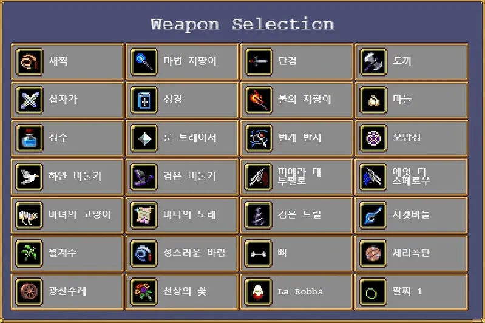
- 등장 조건
- 낮은 확률로 레벨업 선택지로 등장할 수 있으며, 행운 수치에 영향을 받아 등장 확률이 증가한다.
- 낮은 확률로 보물 상자의 녹색 동전 가방을 대신하여 등장할 수 있고, 역시 행운 수치에 영향을 받는다.
- 희귀도가 2로 매우 낮아 일반적인 플레이에서는 레벨업 선택지에 뜨는 걸 보기 힘들다.
- 운용팁: 행운 수치가 높을수록 등장 확률이 높아지기 때문에 기본 행운 수치가 높은 캐릭터로 플레이하거나 사악한 계절 아르카나로 행운을 증폭시켜야 유리하다. 여왕 시그마의 경우에는 상인을 통해 사탕상자를 구입할 수 있다. 랜덤 이벤트로도 나오기에 운만 좋다면 무기를 2줄 이상 주렁주렁 달아볼 수도 있다.
- 조합: 없다. 대신 사탕상자를 먼저 획득해야 진화무기를 얻을 수 있는 슈퍼 사탕상자를 획득할 수 있다.
- 기타: 보물 상자를 통해 습득했다면 무기 6개를 채운 뒤에도 7번째 무기로 획득할 수 있고, 무기 슬롯을 막아둔 상태여도 기본 무기를 선택해 습득할 수 있다. 당연히 고요한 옛 성역 아르카나의 빈 무기당 능력치 증가를 받고 있던 중에 새 무기를 얻으면 그만큼 증가량이 줄어든다. 따라서 추가 무기가 필요하지 않다면 건너뛰기로 패스하는 것이 좋다.
2.31. 승리의 검
 Victory Sword [VICTORY]
Victory Sword [VICTORY]가장 가까운 적에게 콤보 공격을 가합니다. 반격이 가능합니다.
[ 무기 능력치 ]
투사체 제한100희귀도30쿨타임1.85(1.1)연사 간격0.1피해량5(40)공격 범위140(200)%투사체 수2(5)치명타 확률0(10)%치명타 배율2넉백1[ 레벨업 효과 ]
레벨1획득레벨2투사체 수 +1레벨3피해량 +5, 공격 범위 +20%레벨4투사체 수 +1레벨5피해량 +10, 공격 범위 +20%레벨6투사체 수 +1레벨7피해량 +10, 공격 범위 +20%레벨8치명타 효과 발생, 피니시 공격 추가레벨9피해량 +10레벨10쿨타임 -0.25레벨11쿨타임 -0.25레벨12쿨타임 -0.25[ 한계돌파 목록 ]
종류희귀도최대치피해량 +0.520-공격 범위 +2.5%101000%투사체 수 +1120- 해금 조건: 여왕 시그마으로 한 게임에서 10만 킬을 달성한다.
- 공격 방식: 화면 내 가까운 적에게 검격을 날린다. 캐릭터가 피격당할 시 해당 적에게 반격한다.
- 직접 적용 능력치: 방어력, 피해량, 공격 범위, 쿨타임, 투사체 수
- 조건부 적용 능력치: 행운[절단]
- 운용 팁
- 특이한 기믹이 굉장히 많다. 최대 레벨이 12로 모든 무기 중 가장 높으며, 진화하면 다른 무기가 되는 게 아니라 무기로도 장신구로도 판정되지 않는 아이템을 추가하고 승리의 검은 그대로 남아있다. 또한 즉사 무기가 아닌데도 유제품 공장, 갈로의 탑, 뼈의 대지 스테이지에서 등장하고, 랜덤 이벤트에서 랜덤으로 등장하는 공격 불가 판정의
 스토커와
스토커와  드라우너를 공격할 수 있다. 이동력이 느린 캐릭터들의 사신 대책용 무기로 쓸 수 있다. 이런 사신들을 처치하면 진화 상자가 나와 빠른 진화에 쓸 수도 있지만, 다르카나가 있다면 얌전히 달빛 볼레로를 고르는 게 훨씬 좋다.
드라우너를 공격할 수 있다. 이동력이 느린 캐릭터들의 사신 대책용 무기로 쓸 수 있다. 이런 사신들을 처치하면 진화 상자가 나와 빠른 진화에 쓸 수도 있지만, 다르카나가 있다면 얌전히 달빛 볼레로를 고르는 게 훨씬 좋다. - 연타에 넉백도 있고 대미지 자체는 준수하지만, 공격 범위가 더럽게 좁아서 결과창의 딜미터에서는 항상 최하위를 전전한다. 레벨 8부터 추가되는 막타도 세로로만 좀 길 뿐 가로 범위가 좁아터진 건 매한가지다. 또한 쿨타임이 부족하다면 생각보다 본체 보호도 잘 못한다. 신성한 혈통과 절단을 이용한 반격 빌드에서 주력 무기로 쓰이나, 정작 이래도 범위 문제 때문에 결과창의 딜 미터를 보면 기여도가 시원찮다. 화력보다는 반격의 넉백을 이용한 본체 보호 및 진화 무기의 장시간 무적 판정을 이용한 방어 능력과, 랜덤 이벤트로 튀어나와 귀찮게 구는 스토커를 확실하게 자를 수 있다는 점에 무게를 두는 것이 좋다.
- 진화 무기는 무기 슬롯에 포함되지 않는다. 승리의 검은 진화 후에 변경되지 않고 그대로 남아있어서 적을 지속적으로 공격한다. 따라서 진화 전의 승리의 검을 한계돌파로 강화해도 무방하다.[70] 강력한 캐릭터들은 진화 무기가 다 갖춰지기 전에 한계돌파를 하는 시점이 오게 되는데 이때는 승리의 검을 올려줘도 좋다. 그러나 진화무기가 다 갖춰진 후에 승리의 검을 한계돌파하는 건 좋지 않다. 무기의 구조가 한계돌파를 아무리 해도 성능이 올라가는 데 한계가 있다.
- 기타: 무기 이미지가 해시태그 '#'와 비슷하다.
2.32. 잘못된 주문의 불꽃
 Flames of Misspell [MISSPELL]
Flames of Misspell [MISSPELL]불꽃의 원뿔을 방출합니다.
[ 무기 능력치 ]
투사체 제한100희귀도30쿨타임4(2.5)연사 간격0.04피해량10(30)공격 범위100(200)%투사체 속도100(150)%투사체 수12지속시간0.4넉백1기타 태그[ 레벨업 효과 ]
레벨1획득레벨2투사체 속도 +25%레벨3피해량 +10레벨4공격 범위 +50%, 쿨타임 -0.5레벨5투사체 속도 +25%레벨6피해량 10레벨7공격 범위 +50%, 쿨타임 -0.5레벨8쿨타임 -0.5[ 한계돌파 목록 ]
종류희귀도최대치피해량 +0.510-공격 범위 +2.5%101000%지속시간 +0.112투사체 수 +1120- 해금 조건: 아바타 인페르나스로 1회 플레이한다.
- 공격 방식: 캐릭터가 보고 있는 방향의 전방에 부채꼴로 다수의 투사체를 흩뿌려 공격한다. 투사체의 사정거리는 지속시간과 투사체 속도에 비례한다.
- 직접 적용 아르카나: 불의 심장
- 직접 적용 능력치: 피해량, 투사체 속도, 공격 범위, 쿨타임, 투사체 수
- 운용팁: 전방으로만 발사하기 때문에 적에게서 도망치면서 공격할 때보다는 포위를 뚫고 지나가거나, 캐릭터와 일정 거리를 유지하는 보스들을 처치할 때 유용하다. 은두자 프리타 또는 단검/천개의 칼날과 비슷하게 무빙으로 흩뿌려주면 DPS가 더 상승한다. 투사체 속도 없이는 사정거리에 한계가 크니 팔 보호대는 필수로 사용해야 한다. 초반엔 상당히 강력하지만 진화 무기가 토로나의 상자의 저주 +100을 커버하기 힘든 문제가 있어서 이를 커버할 수 있는 능력치를 보유한 캐릭터나 주요한 해결책, 신성한 혈통 같은 아르카나와 같이 써야 하며, 공격 범위에 문제가 있기 때문에 범위 패시브가 있는 캐릭터가 쓰거나 환상의 춤 아르카나를 같이 써줘야 한다.
- 기타: "Flames of Misspell"은 보통 무스펠의 불꽃으로 사용되는 단어의 Muspell을 Miss + spell로 변형하고 철자의 spell과 주문을 영창하는 spell의 이중적인 뜻을 이용한 일종의 말장난이다. 황금알을 지우는 파란 불꽃의 이름도 "Flames of Moonspell"로 되어 있다. 이렇게 뱀서 자체가 철자를 의도적으로 틀리거나 변경하는 방식의 말장난을 많이 하는 편인데 대표적으로 우화집의 디렉터 이름도 "Directer"로 미스 스펠링 해놓았다.
2.33. 아쿠아존
 Acquazzone [FLOOD]
Acquazzone [FLOOD][ 무기 능력치 ]
타격 간격0.5피해량10- 히든 무기로 사용하는 캐릭터: 페리맨, 아틀란티스 신전 마법사
- 공격방식: 드라우너처럼, 플레이어의 발 밑까지 차오르는 물로 화면의 아래쪽 절반을 공격한다. 투사체 수에 따라 피해량이 추가로 증가한다.
- 컬렉션에 등록되지 않는, 제네비의 만족할 줄 모르죠와 비슷하게 꽁꽁 숨겨진 히든 무기다. 아이콘이 존재하는데, 익사의 사신 드라우너가 쓰는 지팡이다.
3. Extra
컬렉션 필터를 '버전'으로 설정했을 때 Extra로 분류되는 무기를 다룬다.
3.1. 파코 바틸리아
 Pako Battiliar [BATTILIA]
Pako Battiliar [BATTILIA]체력을 잃었을 때 보복할 수 있습니다. [72]
[ 무기 능력치 ]
투사체 제한200희귀도60쿨타임8(7)연사 간격0피해량20(40)공격 범위100%투사체 속도40(100)%투사체 수10(16)관통 횟수2(8)넉백1[ 레벨업 효과 ]
레벨1획득레벨2관통 횟수 +1, 투사체 속도 +30%레벨3투사체 수 +1, 쿨타임 -0.5레벨4투사체 수 +1, 피해량 +10레벨5관통 횟수 +2, 투사체 속도 +30%레벨6투사체 수 +1, 쿨타임 -0.5레벨7투사체 수 +1, 관통 횟수 +3레벨8투사체 수 +1, 피해량 +10[ 한계돌파 목록 ]
종류희귀도최대치피해량 +0.310-공격 범위 +2%10400%투사체 속도 +5%10200%투사체 수 +1110- 해금 조건: 누적 161,616마리의 박쥐 처치
- 기본 무기로 사용하는 캐릭터: 배트 로버트
- 공격 방식: 박쥐 무리가 무작위한 화면 밖 위치에서 생성되어 화면을 가로지른다. 반격이 가능하다.
- 직접 적용 아르카나: 없음
- 직접 적용 능력치: 방어력, 피해량, 투사체 속도, 공격 범위, 쿨타임, 투사체 수
- 운용 팁: 박쥐 스웜을 직접 써먹어볼 수 있는 무기다. 공격 방식 특성상 자해 무기로 반격이 발동해도 딜로스가 적다. 기본 쿨이 매우 길지만, 반격 쿨은 1.8초라 적극적으로 들이받는 플레이에서는 체감하기 힘들다. 진화 요구 장신구도 장신구다 보니 반격 빌드 전용 무기로만 사용된다.
3.2. 탄약 아팔레트
 Ammo Appalate [EX_AMMO1]
Ammo Appalate [EX_AMMO1]적을 향해 정면으로 조준합니다. 적이 사정거리를 벗어나면 발사체를 비축합니다.
[ 무기 능력치 ]
투사체 제한200희귀도60쿨타임2연사 간격0.1피해량5(11)공격 범위100(120)%투사체 속도100%투사체 수3(8)관통 횟수0(6)치명타 확률5%치명타 배율2넉백1[ 레벨업 효과 ]
레벨1획득레벨2공격 범위 +10%, 관통 횟수 +3레벨3투사체 수 +1, 피해량 +1레벨4투사체 수 +1, 피해량 +1레벨5공격 범위 +10%, 관통 횟수 +3레벨6투사체 수 +1, 피해량 +1레벨7피해량 +3레벨8투사체 수 +2[ 한계돌파 목록 ]
종류희귀도최대치피해량 +0.2510-공격 범위 +2.5%10500%투사체 속도 +5%10300%관통 횟수 +1520투사체 수 +1110- 해금 조건: 누적 251,096마리의 원거리 공격을 하는 적 처치
- 기본 무기로 사용하는 캐릭터: 지아푼타 벨파에제
- 공격 방식: 적을 향해 흰 점 같은 탄환을 속사한다. 사정거리 내에 적이 없다면 쏘지 않고 탄환을 비축하며, 다음 발사 때 함께 발사한다.
- 직접 적용 능력치: 피해량, 투사체 속도, 공격 범위, 쿨타임, 투사체 수
- 운용팁: 기본 공격력이 썩어 있으며 범위도 좁아서 단독으로는 운영이 불가능하다.
- 복제: 말 카트리지
- 해금 요소
- 이 무기를 진화한다.
지아푼타 벨파에제 캐릭터 해금
3.3. 저세상 번개
 Unearthly Bolt [EX_FLIK1]
Unearthly Bolt [EX_FLIK1]치명타가 피해 영역을 생성합니다. 부활이 연속 치명타 공격의 피해량에 영향을 끼칩니다.
[ 무기 능력치 ]
투사체 제한100희귀도70쿨타임4(3.8)연사 간격0.1(0.05)피해량10(20)공격 범위100(120)%투사체 속도100%투사체 수1치명타 확률5%치명타 배율1넉백1[ 레벨업 효과 ]
레벨1획득레벨2투사체 수 +1, 연사 간격 -0.01레벨3투사체 수 +1, 공격 범위 +10%, 연사 간격 -0.01레벨4피해량 +5, 쿨타임 -0.1레벨5투사체 수 +1, 연사 간격 -0.01레벨6투사체 수 +1, 공격 범위 +10%, 연사 간격 -0.01레벨7투사체 수 +1, 연사 간격 -0.01레벨8피해량 +5, 쿨타임 -0.1[ 한계돌파 목록 ]
종류희귀도최대치피해량 +0.2510-공격 범위 +2.5%10500%치명타 확률 +1%5100%투사체 수 +1110- 해금 조건: 박쥐 드래곤을 1회 처치한다.[74]
- 기본 무기로 사용하는 캐릭터: 빅 트러블러
- 공격 방식: 즉시 명중하는 번개를 연사한다. 번개의 이펙트는 화려하지만 실제로는 적 하나만 타격할 수 있다. 치명타가 발생할 수 있으나, 발생해도 피해 상승은 없고 대신 부활에 따라 피해량이 추가로 증가하는 폭발을 일으킨다.
- 직접 적용 아르카나: 절단
- 직접 적용 능력치: 피해량, 공격 범위, 쿨타임, 투사체 수, 행운, 부활
- 운용팁: 치명타가 강력하며, 번개 자체의 성능은 별 볼 일 없다. 치명타는 행운의 영향을 받지만 진화하면 치명타 확률이 100%가 되어 더 이상 적용되지 않는다. 절단은 치명타 배율을 2배로 늘려주며 진화 후에도 적용된다.
- 해금 요소
- 이 무기를 진화한다.
빅 트러블러 캐릭터 해금
3.4. 유리 판당고
 Glass Fandango [ICELANCE]
Glass Fandango [ICELANCE]이동하거나 회중시계가 생길 때, 그리고 적이 얼어붙었을 때 더욱 강력해집니다.
[ 무기 능력치 ]
투사체 제한100희귀도50쿨타임1.4연사 간격0.03피해량10(20)공격 범위70(100)%투사체 수1(5)넉백1[ 레벨업 효과 ]
레벨1획득레벨2공격 범위 +10%, 피해량 +2.5레벨3투사체 수 +1레벨4공격 범위 +10%, 피해량 +2.5레벨5투사체 수 +1레벨6공격 범위 +10%, 피해량 +2.5레벨7투사체 수 +1레벨8투사체 수 +1, 피해량 +2.5[ 한계돌파 목록 ]
종류희귀도최대치피해량 +0.310-공격 범위 +2%10400%투사체 수 +1130- 해금 조건: 유리 판당고를 레벨 7까지 올린다.
- 기본 무기로 사용하는 캐릭터: 쉬문 에타
- 공격 방식: 세모꼴의 얼음 칼날을 생성한다. 정지해 있으면 6방향으로 나가고, 이동 중이라면 이동 방향을 향해 공격이 집중되며 쿨타임이 감소한다. 회중시계가 발동 중일 때는 범위가 2.5배로 크게 증가하며, 빙결된 적에게는 3배의 대미지를 가한다.
- 직접 적용 아르카나: 없음
- 직접 적용 능력치: 이동속도, 피해량, 공격 범위, 쿨타임, 투사체 수
3.5. 펜신 파차
 Penshin Fatcha [EX_PENSHIN]
Penshin Fatcha [EX_PENSHIN]끊임없이 진화할 수 있는 다양한 수중 무기들.[76]새로운 형태를 선택하세요. 이전 형태에서 얻은 레벨업 보너스는 모두 새로운 형태로 계승됩니다.[77]
- 해금 조건: 라이케움에서 펜신 파차를 입수해 1회 이상 진화한다.
- 희귀도: 50
- 사용 방식: 무기가 아니라 선택기로, 입수하면 아래의 6가지 무기 중 하나를 선택해 입수할 수 있다. 다른 조건 없이, 무기 레벨을 최대치인 6까지 올리면 진화가 가능해지는데, 이때 진화하면 진화 무기가 되는 게 아니라 선택기가 다시 열린다. 이렇게 선택된 무기는 기존 무기의 레벨업으로 얻은 보너스가 그대로 계승된다. 이 계승에는 제한이 없다. 무기의 희귀도가 50이라 일반적인 진화보다 우선시된다.
1회 이상 진화하면 흡입기가 라바트릭스 마키나로 강화되어 스폰된 모든 보석과 광원, 필드 아이템, 스테이지 아이템을 흡수하고, 스폰된 모든 적이 플레이어 주변 일정 거리에서 회전하며 일정 시간 동안 무력화된다. 6회 이상 진화하면 곱셈의 기적이 선택기에 추가된다. - 운용팁: 잘만 성장시키면 좋은 성능의 무기 여러 개를 슬롯 하나에 압축해 쓸 수 있는 강력한 무기다. 그러나 제 성능을 내기 위해서는 진화 기회를 많이, 그것도 우선적으로 소비하기 때문에 빌드에 따라서는 방해가 된다. 제대로 쓰기 위해서는 달빛 볼레로 다르카나는 필수고, 습득 순서도 신경 써야 한다.
- 기타: 데이터상으로는 쿨타임과 연사 간격이 모두 9007199254740.991초로 설정되어 있다.
파라 클레오의 기본 이외의 스킨이 사용하는 펜신 파차 무기들은 진화가 불가능하다.
3.5.1. 톤노 수비토
 Tonno Subito [EX_PENSHIN_EVO7]
Tonno Subito [EX_PENSHIN_EVO7]기본 참치, 레벨업 보너스가 속도 중심입니다.
[ 무기 능력치 ]
투사체 제한50쿨타임1.2연사 간격0.2히트박스 딜레이0.35피해량10(20)공격 범위100%투사체 속도80(120)%투사체 수1(2)지속시간0.2관통 횟수1넉백1[ 레벨업 효과 ]
레벨1획득레벨2투사체 속도 +10%레벨3피해량 +10레벨4투사체 속도 +10%레벨5투사체 수 +1레벨6투사체 속도 +20%[ 한계돌파 목록 ]
종류희귀도최대치피해량 +0.210-공격 범위 +1%101000%투사체 속도 +2%10300%지속시간 +0.0465- 공격 방식: 가장 가까운 적을 조준해 일직선으로 날아가는 참치를 발사하며, 명중하면 작은 폭발을 일으킨다.
- 직접 적용 아르카나: -
- 직접 적용 능력치: 피해량, 투사체 속도, 지속시간, 공격 범위, 쿨타임, 투사체 수
- 운용팁: 가장 직관적인 공격방식을 가지고 있으며 첫 무기로 쓰기에도 좋다. 다만 이 무기도 그렇고, 다른 펜신 파차 무기들도 투사체 속도라는 능력치와 시너지가 높지는 않으므로 1회 이상 선택은 비효율적이다.
3.5.2. 톤네이도
 Tonnado [EX_PENSHIN_EVO2]
Tonnado [EX_PENSHIN_EVO2]휘핑 참치. 레벨업 보너스가 지속시간 중심입니다.
[ 무기 능력치 ]
투사체 제한50쿨타임4연사 간격0.25히트박스 딜레이1피해량10(20)공격 범위100%투사체 속도100(110)%투사체 수1지속시간1.75(2.75)넉백2[ 레벨업 효과 ]
레벨1획득레벨2지속시간 +0.25레벨3피해량 +10레벨4지속시간 +0.25레벨5투사체 속도 +10%레벨6지속시간 +0.5[ 한계돌파 목록 ]
종류희귀도최대치피해량 +0.210-공격 범위 +1%101000%투사체 속도 +2%10300%지속시간 +0.0465- 공격 방식: 무작위한 적을 추적하는 참치 소용돌이를 소환한다. 참치 소용돌이는 적을 무한 관통하며, 추적 대상이 한 번에 죽지 않는다면 그 대상에 들러붙는다.
- 직접 적용 아르카나: -
- 직접 적용 능력치: 피해량, 투사체 속도, 지속시간, 공격 범위, 쿨타임, 투사체 수
- 운용팁: 투사체 크기가 커야 위력이 나오는데 정작 이 무기 자체에는 공격범위 보너스가 없다. 톤네를 몇 번 섞어 줘야 한다.
3.5.3. 톤노모토
 Tonn'omoto [EX_PENSHIN_EVO3]
Tonn'omoto [EX_PENSHIN_EVO3]민물 참치. 레벨업 보너스가 재사용 대기시간 중심입니다.
[ 무기 능력치 ]
투사체 제한50쿨타임4(3.2)연사 간격0.1히트박스 딜레이1피해량10(20)공격 범위100%투사체 속도100%투사체 수1지속시간1.75(2)넉백2[ 레벨업 효과 ]
레벨1획득레벨2쿨타임 -0.2레벨3피해량 +10레벨4쿨타임 -0.2레벨5지속시간 +0.25레벨6쿨타임 -0.4[ 한계돌파 목록 ]
종류희귀도최대치피해량 +0.210-공격 범위 +1%101000%투사체 속도 +2%10300%지속시간 +0.0465- 공격 방식: 화면 하단에서 참치가 튀어올라 포물선의 궤도를 그리며 공격한다.
- 직접 적용 아르카나: -
- 직접 적용 능력치: 피해량, 투사체 속도, 지속시간, 공격 범위, 쿨타임, 투사체 수
- 운용팁: 모든 펜신 파차 무기의 쿨타임을 고정값으로 줄여주는 강력한 무기지만, 공격범위나 방식에 하자가 좀 있다. 이걸 선택하고 톤노 수비토를 선택하면 참치가 천 개의 칼날마냥 노딜레이로 나간다.
3.5.4. 톤노디오
 Tonn'oddeo [EX_PENSHIN_EVO4]
Tonn'oddeo [EX_PENSHIN_EVO4]천상의 참치. 레벨업 보너스가 수량 중심입니다.
[ 무기 능력치 ]
투사체 제한50쿨타임4연사 간격0.1히트박스 딜레이0.75피해량10(20)공격 범위100(110)%투사체 속도100%투사체 수2(6)지속시간1.75넉백2[ 레벨업 효과 ]
레벨1획득레벨2투사체 수 +1레벨3피해량 +10레벨4투사체 수 +1레벨5공격 범위 +10%레벨6투사체 수 +2[ 한계돌파 목록 ]
종류희귀도최대치피해량 +0.210-공격 범위 +1%101000%투사체 속도 +2%10300%지속시간 +0.0465- 공격 방식: 화면 우상단에서 좌하단 방향으로 다수의 참치를 떨어트려 폭격한다. 참치는 처음 부딪힌 위치에 성수와 비슷한 피해 영역을 생성하며, 이후 조금 굴러가며 닿은 적을 공격하다가 사라진다.
- 직접 적용 아르카나: -
- 직접 적용 능력치: 피해량, 투사체 속도, 지속시간, 공격 범위, 쿨타임, 투사체 수
- 운용팁: 공격범위가 가장 넓은 대신 위치가 무작위라 조금 불안정하고, 공격범위 능력치가 늘어나면 시야를 심하게 가린다.
3.5.5. 톤네
 Tonne [EX_PENSHIN_EVO1]
Tonne [EX_PENSHIN_EVO1]킹사이즈 참치. 레벨업 보너스가 범위 중심입니다. 양은 히트 박스 발생 빈도에 영향을 끼칩니다.
[ 무기 능력치 ]
투사체 제한50쿨타임4히트박스 딜레이1.5피해량15(25)공격 범위100(140)%투사체 속도100%투사체 수1지속시간1.75(2)넉백2[ 레벨업 효과 ]
레벨1획득레벨2공격 범위 +10%레벨3지속시간 +0.25레벨4공격 범위 +10%레벨5피해량 +10레벨6공격 범위 +20%[ 한계돌파 목록 ]
종류희귀도최대치피해량 +0.210-공격 범위 +1%101000%투사체 속도 +2%10300%지속시간 +0.0465- 공격 방식: 화면 상단에서 거대한 참치를 하나 떨어트려 거대한 피해 영역을 생성한다. 참치는 무조건 한 마리만 나오며, 투사체 수는 생성된 피해 영역의 틱당 타격 횟수에 영향을 준다.
- 직접 적용 아르카나: -
- 직접 적용 능력치: 피해량, 투사체 속도, 지속시간, 공격 범위, 쿨타임, 투사체 수
- 운용팁: 하나라 단독으로 쓰기는 좀 힘들다.
3.5.6. 초월 불가
 Unsurpassed [EX_PENSHIN_EVO6]
Unsurpassed [EX_PENSHIN_EVO6]프리미엄 참치. 레벨업 보너스가 피해량 중심입니다.
[ 무기 능력치 ]
투사체 제한50쿨타임4(3.8)연사 간격0.25히트박스 딜레이1피해량10(50)공격 범위100%투사체 속도100(110)%투사체 수2지속시간1.75넉백5[ 레벨업 효과 ]
레벨1획득레벨2피해량 +10레벨3투사체 속도 +10%레벨4피해량 +10레벨5쿨타임 -0.2레벨6피해량 +20[ 한계돌파 목록 ]
종류희귀도최대치피해량 +0.210-공격 범위 +1%101000%투사체 속도 +2%10300%지속시간 +0.0465- 공격 방식: 플레이어가 보고 있는 방향(좌우 한정)의 뒤쪽에서 무한 관통하는 참치가 생성되어 가로 방향으로 돌진한다.
- 직접 적용 아르카나: -
- 직접 적용 능력치: 피해량, 투사체 속도, 지속시간, 공격 범위, 쿨타임, 투사체 수
- 운용팁: 피해량을 무한정 올릴 수 있어서, 필요한 무기를 전부 골랐다면 나머지 진화 기회는 전부 이쪽에 붓는 게 낫다.
- 여담: 펜신 파차 무기 중 유일하게 톤자 돌림을 쓰지 않고, 오역이 기묘하게 되어 있다.
3.6. 산타 재블린
 Santa Javelin [SANTAJAVELIN]
Santa Javelin [SANTAJAVELIN]지속 시간에 따라 수량이 달라집니다. 치명적인 데미지를 가할 수 있습니다.
[ 무기 능력치 ]
투사체 제한200희귀도60쿨타임6.5(5)연사 간격0.125지속시간1피해량20(70)공격 범위100(200)%투사체 수1(3)치명타 확률5%치명타 배율2넉백0[ 레벨업 효과 ]
레벨1획득레벨2공격 범위 +50%레벨3투사체 수 +1
쿨타임 -0.5레벨4피해량 +10레벨5공격 범위 +50%
쿨타임 -0.5레벨6투사체 수 +1레벨7쿨타임 -0.5초
피해량 +10레벨8피해량 +30[ 한계돌파 목록 ]
종류희귀도최대치피해량 +0.310-공격 범위 +2%10400%치명타 확률 +1%5100%지속시간 +0.1110투사체 수 +1110- 해금 조건: 산타 재블린을 레벨 7까지 올린다.
- 기본 무기로 사용하는 캐릭터: 산타 라돈나
- 직접 적용 능력치: 피해량, 지속시간, 공격 범위, 쿨타임, 투사체 수
- 공격 방식: 화면 내의 무작위한 적을 조준해 그 주변 영역을 고드름 같은 투사체로 폭격한다. 지속시간 수치에 따라 투사체 수가 증가하고 행운에 따라 치명타 확률이 증가한다.
- 운용 팁: 화력이 매우 강하나 범위도 애매하고 어디에 떨어질지도 알 수 없어서 초반에는 쓰기 힘들다. 대신 1무기런에서는 고요한 옛 성역과 공주의 비련 아르카나로 쿨타임을 최대한 줄이는 식으로 단점을 커버할 수 있다. 무기 제한이 없다면 마나의 노래처럼 방어 능력이 있는 무기를 함께 고르는 것이 좋다.
자체 성능은 제치더라도, 진화 무기가 워낙 강력한 터라 그냥 집어도 무방하다. - 복제: 레벨링
3.7. 가에야의 시선
 Gaze of Gaea
Gaze of Gaea전능한 옥수수 털기 적입니다. 반격합니다.
[ 무기 능력치 ]
투사체 제한100희귀도50쿨타임2연사 간격0.2지속시간0.2(0.6)히트박스 딜레이0.3피해량5(10)공격범위50(80)%투사체 수1(3)옥수수 털기 확률3(5)%[ 레벨업 효과 ]
레벨1획득레벨2투사체 수 +1레벨3피해량 +5레벨4지속 시간 +0.2레벨5옥수수 털기 확률 +1% 공격 범위 +15%레벨6투사체 수 +1레벨7지속 시간 +0.2레벨8옥수수 털기 확률 +1% 공격 범위 +15%[ 한계돌파 목록 ]
종류희귀도최대치피해량 +0.110-공격 범위 +1%101000%지속시간 +0.116옥수수 털기 확률 +1%1100%투사체 수 +1120- 해금 조건: 협동 농장 스테이지에서 적 0마리 처치
- 기본 무기로 사용하는 캐릭터: 가제보
- 직접 적용 아르카나: 신성한 혈통
- 직접 적용 능력치: 피해량, 공격 범위, 쿨타임, 투사체 수
- 공격 방식: 플레이어가 보는 방향으로 원뿔 모양의 공격을 한다. 공격에 닿은 적은 "옥수수 털기" 상태이상에 걸려 공격할 수 없게 된다.
- 운용 팁:
- 아이콘은 가에야의 아바타의 머리이다. 또한 아직도 옥수수 털기라는 오역을 고치지 않았다.
3.8. 마기 스톤
 Magi-Stone [EX_MAGISTONE1]
Magi-Stone [EX_MAGISTONE1]무기 레벨에 따라 고정 피해를 줍니다.
[ 무기 능력치 ]
투사체 제한50희귀도60쿨타임3.5(3.1)연사 간격0.2(0.12)피해량10(80)공격 범위100(140)%투사체 속도120(160)%투사체 수1(3)넉백1[ 레벨업 효과 ]
레벨1획득레벨2투사체 수 +1레벨3공격 범위 +10%레벨4쿨다운 -0.2, 투사체 속도 +20%레벨5투사체 수 +1레벨6공격 범위 +10%레벨7쿨다운 -0.2, 투사체 속도 +20%레벨8공격 범위 +20%[ 한계돌파 목록 ]
종류희귀도최대치공격 범위 +2.5%10500%투사체 속도 +5%10300%투사체 수 +1110- 해금 조건: 마기 스톤을 레벨 7까지 올린다.
- 기본 무기로 사용하는 캐릭터: 출라레
- 직접 적용 능력치: 범위, 쿨타임, 투사체 수
- 직접 적용 아르카나: 사파이어 미스트, 창백한 다이아몬드의 급습
- 공격 방식: 화면 내의 무작위한 적을 조준해 거대한 보석을 떨어트린다. 보석이 땅에 떨어지면 작은 파편으로 분해되며, 이 파편은 보석의 절반의 피해를 가한다.
- 운용 팁: 공격력은 무기 레벨 *10(한계돌파 제외)으로 고정되어 있으며 피해량 능력치의 영향을 일절 받지 않고, 투사체 수는 떨어지는 보석이 아니라 깨지면서 만들어지는 파편의 수에 영향을 끼친다. 전반적으로 피해량 능력치가 떨어지는 캐릭터에게 유용하다.
3.9. Phas3r
 Phas3r [PHASER]
Phas3r [PHASER]얇은 데미지 구역을 생성합니다. 고분량 확장.
[ 무기 능력치 ]
투사체 제한200희귀도50쿨타임5연사 간격0.1피해량5(15)공격 범위100(250)%투사체 수1(5)[ 레벨업 효과 ]
레벨1획득레벨2투사체 수 +1레벨3공격 범위 +50%, 피해량 +3레벨4투사체 수 +1레벨5공격 범위 +50%, 피해량 +3레벨6투사체 수 +1레벨7공격 범위 +50%, 피해량 +4레벨8투사체 수 +1[ 한계돌파 목록 ]
종류희귀도최대치피해량 +0.310-공격 범위 +2%10400%투사체 수 +1110- 해금 조건: Phas3r를 레벨 7까지 올린다.
- 기본 무기로 사용하는 캐릭터: 우주 친구
- 직접 적용 아르카나: 없음
- 직접 적용 능력치: 피해량, 공격 범위, 쿨타임, 투사체 수
- 공격 방식: 플레이어 근처의 적을 대상으로 얇고 길쭉한 수평 레이저를 생성해 공격한다. DLC 2의 마법주문 시리즈처럼 기존 투사체 수 시스템에 더해, 투사체 수에 따라 더 많은 발사체를 생성한다.
- 운용 팁: 초반 기준으로 플레이어 보호는 제대로 안 해주기 때문에 보호용으로는 부적합하다. 하지만 레벨을 집중적으로 올려주면 순식간에 전체 화면급 공격을 퍼부어주면서[83] 적을 밀어내며, 장신구도 빈 책이라 잘 어울리고 진화 무기도 매우 좋은 편이라 초반에 배째기식으로 집을 가치는 있다.
- 조합: 최대 레벨의 빈 책을 소지하고 있다면 Photonstorm으로 진화할 수 있다.
- 이름은 뱀파이어 서바이버즈의 구 엔진인 Phaser3의 말장난이다.
3.10. 혼돈의 룬
 Chaos Rune [FOLLOWER_KNIFE1]
Chaos Rune [FOLLOWER_KNIFE1]대신 속도와 지속 시간이 히트 박스 수에 영향을 미칩니다.
[ 무기 능력치 ]
투사체 제한50희귀도40쿨타임3연사 간격0.25히트박스 딜레이0.03피해량10(30)공격 범위100%투사체 속도100%투사체 수1(4)관통 횟수1(3)넉백1[ 레벨업 효과 ]
레벨1획득레벨2투사체 수 +1레벨3관통 수 +1레벨4투사체 수 +1레벨5피해량 +10레벨6투사체 수 +1레벨7관통 수 +1레벨8피해량 +10[ 한계돌파 목록 ]
종류희귀도최대치피해량 +0.510-공격 범위 +2.5%101000%투사체 속도 +5%10200%지속시간 +0.115투사체 수 +1120- 해금 조건: 비밀 화면에서 'guinigigi'를 입력한다.
- 공격 방식: 화면 하단에 마법진이 생성되어 다수의 룬 문자를 포물선 궤도로 쏘아올린다. 투사체는 일정 높이 이상 오르기 전까지 판정이 발생하지 않는다. 지속시간과 투사체 속도가 한 번에 발사되는 룬 문자의 수에 영향을 끼친다.
- 직접 적용 아르카나: -
- 직접 적용 능력치: 피해량, 투사체 속도, 공격 범위, 쿨타임, 투사체 수
- 운용팁:
3.11. 아르마 디오
 Arma Dio [ARMADIO]
Arma Dio [ARMADIO]패시브 무기를 추가로 선택할 수 있습니다.
- 희귀도: 30
- 해금 조건: 실험실에서 아르마 디오 발견[84]
- 행운의 영향을 받아 레벨업 선택지에서 나오거나, 사탕상자로 선택할 수 있다. 사탕상자와 달리 보물상자에서는 절대 나오지 않는다. 마트료시카처럼 보물상자에서 나온 사탕상자에서 아르마 디오를 선택해 장신구를 고를 수는 있다. 사탕상자에서 선택할 경우 1번만 선택할 수 있다. 사탕상자로 이미 아르마 디오를 먹었거나 사탕상자를 먹기 전에 무기 레벨업에서 아르마 디오를 선택한 적이 있다면 사탕상자로 선택할 수 없다.
- 사탕상자처럼, 입수하면 그 즉시 장신구 하나를 선택하는 창이 열린다. 마찬가지로 아무것도 선택하지 않고 넘기는 것도 가능하다. 반지 한 쌍, 메탈리오 한 쌍과 아카데미 뱃지, DLC 3의 미니 어몽어스 시리즈는 선택할 수 없다.
- 팁: 장신구 창 6개를 꽉 채운 다음 입수하면 장신구 7개를 쓸 수 있다. 등장 확률이 낮아 의존하기에 조금 불안하기는 하나, 사탕 상자보다 희귀도가 높아 자주 나오며 장신구 세팅이 빡빡한 빌드를 짰다면 고려해 볼 가치가 있다. 행운을 높이거나 무기 압축을 잘 해보는 것이 좋다. 다만 무기 슬롯을 다 채우면 나올 수 없으니 주의할 것.
4. Legacy of the Moonspell
4.1. 은색 바람
 Silver Wind [SILVERWIND]
Silver Wind [SILVERWIND]처치한 적이 체력을 드롭할 수도 있습니다.
[ 무기 능력치 ]
투사체 제한100희귀도50쿨타임3연사 간격0.5(0.2)피해량10(30)공격 범위100%투사체 속도80(100)%투사체 수2(8)지속시간2.25(2.75)히트박스 딜레이0.5넉백1작은 하트 생성 확률5%[ 레벨업 효과 ]
레벨1획득레벨2투사체 수 +2레벨3피해량 +5, 투사체 속도 +10%레벨4피해량 +5, 지속시간 +0.25레벨5투사체 수 +2레벨6피해량 +5, 투사체 속도 +10%레벨7피해량 +5, 지속시간 +0.25레벨8투사체 수 +2[ 한계돌파 목록 ]
종류희귀도최대치피해량 +0.510-공격 범위 +2.5%101000%투사체 속도 +5%10300%지속시간 +0.119투사체 수 +1120- 해금 조건: 미앙으로 15분 생존
- 기본 무기로 사용하는 캐릭터: 미앙
- 공격 방식: 투사체가 캐릭터 주변을 납작한 타원형 형태로 돌며 대미지를 준다. 적을 처치하면 5% 확률로 작은 하트를 생성한다.
- 직접 적용 능력치: 회복, 피해량, 투사체 속도, 지속시간, 공격 범위, 쿨타임, 투사체 수
- 운용 팁: 넉백, 짤딜, 유지력에 전부 관여하는 육각형 무기로, 자체 화력은 낮은 편이지만 지속시간 빌드든 사라반드 빌드든 채용해두면 밥값은 한다. 황혼의 진혼곡 아르카나를 채용하면 화력과 넉백이 더 강해져 초반 나기에 유용해진다. 지속시간 빌드에서 채용하려면, 빡빡한 장신구 세팅 사이에 붉은 심장을 욱여넣어야 해서 붉은 심장이 스테이지 아이템으로 존재하거나 스테이지 아이템이 넘쳐나는 스테이지가 아닌 이상 실제로 쓰기는 어렵다.
진화 무기의 디버프는 능력치와 따로 계산되어 실제 효율이 좋으므로, 황금알을 어느 정도 먹인 캐릭터라면 다른 딜 장신구를 포기하고 붉은 심장을 집어 이 무기를 진화시키는 게 더 효율적이다.
4.2. 사계절
 Four Seasons [FOURSEASONS]
Four Seasons [FOURSEASONS]4 폭발을 일으킵니다. 대신 수량과 지속시간이 피해량에 영향을 미칩니다.
[ 무기 능력치 ]
투사체 제한30희귀도50쿨타임4(5)연사 간격0.9(0.5)피해량5공격 범위100(500)%투사체 수1지속시간1넉백1[ 레벨업 효과 ]
레벨1획득레벨2공격 범위 +100%레벨3공격 범위 +50%레벨4공격 범위 +50%, 쿨타임 +0.5초레벨5공격 범위 +50%레벨6공격 범위 +50%레벨7공격 범위 +50%, 쿨타임 +0.5초레벨8공격 범위 +50%[ 한계돌파 목록 ]
종류희귀도최대치피해량 +0.510-공격 범위 +2.5%101000%- 해금 조건: 멘야로 15분 생존
- 기본 무기로 사용하는 캐릭터: 멘야
- 공격 방식: 캐릭터를 중심으로 좌상단, 우상단, 좌하단, 우하단 4 방향에 순차적으로 폭발이 일어난다. 기본 피해량이 10 고정이지만, 지속시간과 투사체 수 보정을 받기 때문에 실제로는 낮지 않다. 계산식은 "(기본 피해량 + 지속시간(1초당 1)) * 투사체 수"다.
- 직접 적용 아르카나: 없음
- 직접 적용 능력치: 피해량, 지속시간, 공격 범위, 쿨타임, 투사체 수
- 운용 팁: 캐릭터와 거리가 떨어진 4방향(↖↗↙↘방향)에만 공격을 하기 때문에 초반에는 마늘등 캐릭터 주변의 적을 처치하기 위한 아이템이 필요하다. 딜 포텐셜은 높은 편으로, 20레벨당 투사체 수 패시브가 있는 캐릭터들과 특히 잘 어울린다.
- 기타:
- 1.10 패치 전에는 진화에 시금치도 요구했다.
4.3. 밤 소환
 Summon Night [SUMMONNIGHT]
Summon Night [SUMMONNIGHT]캐릭터 위에 피해구역을 생성합니다.
[ 무기 능력치 ]
투사체 제한60희귀도50쿨타임3피해량10(20)공격 범위100%투사체 수1(4)지속시간1(1.5)히트박스 딜레이0.45넉백1[ 레벨업 효과 ]
레벨1획득레벨2투사체 수 +1레벨3지속시간 +0.25레벨4피해량 +5레벨5투사체 수 +1레벨6지속시간 +0.25레벨7피해량 +5레벨8투사체 수 +1[ 한계돌파 목록 ]
종류희귀도최대치피해량 +0.510-공격 범위 +2.5%101000%지속시간 +0.119투사체 수 +1120- 해금 조건: 슈토로 15분 생존
- 기본 무기로 사용하는 캐릭터: 슈토
- 공격 방식: 위에서 아래로 수직으로 대미지를 주는 구역을 생성한다.
- 직접 적용 아르카나: 없음
- 직접 적용 능력치: 피해량, 지속시간, 공격 범위, 쿨타임, 투사체 수
- 운용 팁: 진화 전에는 아래 부분이 비게 되므로 아래를 공격할 수 있는 무기를 같이 쓰는 것이 좋다. 진화 후에는 아래까지 커버하고 다른 DLC 무기보다 진화도 편한 것이 장점.
- 기타: 인게임 설명에는 레벨업 효과로 쿨타임이 0.3라고 출력되지만 실제로는 쿨타임이 0.25초가 감소한다. 사실 이런 무기가 한둘이 아니다.
4.4. 신기루 로브
 Mirage Robe [MIRAGEROBE]
Mirage Robe [MIRAGEROBE]폭발할 확률이 있는 정적인 동결 투사체를 생성합니다.
[ 무기 능력치 ]
투사체 제한50희귀도50쿨타임3연사 간격0.01피해량10(50)공격 범위190%투사체 수1지속시간2(6)폭발 확률0(20)%빙결 확률30%넉백1[ 레벨업 효과 ]
레벨1획득레벨2지속시간 +1레벨3지속시간 +1, 피해량 +10레벨410% 확률로 폭발레벨5지속시간 +1레벨6지속시간 +1, 피해량 +10레벨720% 확률로 폭발레벨8피해량 +20[ 한계돌파 목록 ]
종류희귀도최대치피해량 +0.510-공격 범위 +2.5%101000%지속시간 +0.119투사체 수 +1120- 해금 조건: 바비 온나로 15분 생존
- 기본 무기로 사용하는 캐릭터: 바비 온나
- 공격 방식: 캐릭터가 있는 곳에 정지해 있는 신기루를 남긴다. 적이 이 신기루에 닿으면 대미지와 함께 얼게 된다.
- 직접 적용 아르카나: 한도초과
- 직접 적용 능력치: 피해량, 지속시간, 공격 범위, 쿨타임, 투사체 수
- 운용 팁: DPS와 위력은 떨어지지만 초반에 집으면 좋은 무기. 컨트롤하지 않아도 다른 무기 쓰면서 적을 피해 다니면 적이 알아서 맞고 죽거나 얼어버린다. 투사체 수가 증가하면 그냥 좁은 범위로 빙빙 돌고 있으면 적이 접근하지 못한다. 진화 무기 조도르도 움직이면서 뿌리면 적을 교란시키므로 게임 내내 생존에 기여한다. 한도초과 아르카나를 사용할 경우 100%의 확률로 적들을 얼리며 폭발시킬 수 있게 된다. 이럴 경우 폭발 확률을 증가시키는 업은 아무 효과도 주지 않지만, 30초마다 폭발 대미지를 1씩 주기 때문에 처음부터 고를 경우 막판엔 2배가 넘는 약 60 정도의 추가 대미지가 붙는다. 다만 말뚝딜 무기라 투사체 개수가 많은 편이 유리하므로 바비 온나로 플레이할 때는 근원 아르카나부터 쓰는 것이 좋다. 다른 캐릭터라면 한도초과로 하면 된다.
4.5. 밤의 검
 Night Sword [NIGHTSWORD]
Night Sword [NIGHTSWORD]가장 가까운 적에게 콤보 공격을 가합니다. 반격이 가능합니다. 하트를 훔칠 수 있습니다.
[ 무기 능력치 ]
투사체 제한100희귀도30쿨타임2.2연사 간격0.1피해량5(40)공격 범위100(160)%투사체 수2(5)치명타 확률10%치명타 배율2작은 하트 생성 확률1%넉백1[ 레벨업 효과 ]
레벨1획득레벨2투사체 수 +1레벨3피해량 +5, 공격 범위 +20%레벨4투사체 수 +1레벨5피해량 +10, 공격 범위 +20%레벨6투사체 수 +1레벨7피해량 +10, 공격 범위 +20%레벨8피해량 +10[ 한계돌파 목록 ]
종류희귀도최대치피해량 +0.510-공격 범위 +2.5%101000%투사체 수 +1120- 해금 조건: 문스펠산에서 밤의 검 발견하기
- 기본 무기로 사용하는 캐릭터: 강력한 슈토
- 히든 무기로 사용하는 캐릭터: 슈토
- 공격 방식: 가장 가까운 적을 향해 참격을 날린다. 1%의 확률로 체력을 1 회복시켜 주는 하트를 드롭한다. 반격이 가능하며, 반격 시 방어력 보너스 외에도 탐욕 능력치의 2배만큼 피해량이 증폭된다. 이 보정은 탐욕이 100% 이상일 때만 적용되며, 탐욕이 그 미만이라고 해도 감소되지는 않는다.
- 직접 적용 아르카나: 치유의 사라반드
- 직접 적용 능력치: 회복, 방어력, 피해량, 공격 범위, 쿨타임, 투사체 수, 탐욕
- 운용 팁: 신성한 검과 거의 비슷하다. 좁아터진 공격 범위 때문에 기본적으로는 딜미터기 바닥깔개인데, 특이하게 탐욕으로 공격력이 증가하기 때문에 사악한 계절을 채용하면 무한 성장 무기가 되어 무시무시하게 강해진다.
- 기타: 추가 당시에는 날카로운 소리가 유독 거슬린다는 악평이 있었다.
4.6. 밀레 볼레 블루
 Mille Bolle Blu [BUBBLES]
Mille Bolle Blu [BUBBLES]지연형 투사체를 발사합니다.
[ 무기 능력치 ]
투사체 제한140희귀도1쿨타임2.6(2)연사 간격0.1피해량5(12.5)공격 범위50(80)%투사체 속도100%투사체 수4(8)지속시간1.1히트박스 딜레이0.5넉백0.1[ 레벨업 효과 ]
레벨1획득레벨2투사체 수 +1, 공격 범위 +10%레벨3쿨타임 -0.2, 피해량 +3레벨4투사체 수 +1, 공격 범위 +10%레벨5쿨타임 -0.2, 피해량 +3레벨6투사체 수 +1, 공격 범위 +10%레벨7쿨타임 -0,2, 피해량 +3레벨8투사체 수 +1[ 한계돌파 목록 ]
종류희귀도최대치피해량 +0.510-공격 범위 +2.5%101000%투사체 속도 +5%10300%지속시간 +0.119투사체 수 +1120- 해금 조건: 가베트 오니 해금
- 기본 무기로 사용하는 캐릭터: 가베트 오니
- 공격 방식: 가장 가까운 적에게 1.1초간 지속되는 물방울을 날려 대미지를 준다.
- 직접 적용 아르카나: 없음
- 직접 적용 능력치: 피해량, 투사체 속도, 지속시간, 공격 범위, 쿨타임, 투사체 수
- 기타: 인게임 설명에는 레벨업 효과로 공격력이 3 증가라고 출력되지만 실제로는 공격력이 2.5 증가한다.

4.7. 108 보체
 108 Bocce [BOCCE]
108 Bocce [BOCCE]사실은 그냥 8입니다. 근처 적에게 피해를 가합니다.
[ 무기 능력치 ]
희귀도10쿨타임1.3(1)피해량12(40)공격 범위100%투사체 속도100%투사체 수1넉백0[ 레벨업 효과 ]
레벨1획득레벨2피해량 +4레벨3피해량 +4, 쿨타임 -0.1레벨4피해량 +4레벨5피해량 +4, 쿨타임 -0.1레벨6피해량 +4레벨7피해량 +4, 쿨타임 -0.1레벨8피해량 +4[ 한계돌파 목록 ]
종류희귀도최대치피해량 +0.510-공격 범위 +2.5%101000%- 해금 조건: 맥코이 오니로 15분 생존
- 기본 무기로 사용하는 캐릭터: 맥코이 오니
- 공격 방식: 8개의 염주가 회전하며 캐릭터 주변에 대미지를 입힌다. 행운과 저주의 수치 차이 1%마다 공격력이 1% 증가해 최대 1100%까지 증가한다. 어느 쪽이 높고 낮은지는 따지지 않는다.
- 직접 적용 아르카나: 없음
- 변칙 적용 아르카나: 사악한 계절[90]
- 직접 적용 능력치: 피해량, 공격 범위, 쿨타임, 행운, 저주
- 운용 팁: 초반 스노우볼링용 무기로, 저주나 행운에 보너스가 붙는 캐릭터에게 활용도가 높다. 그러나 범위가 쥐꼬리 만하고 진화도 없어서 후반 기여도는 크게 떨어지는 편이다.
5. Tides of the Foscari
5.1. 마법주문 두루마리
 Spellstring [SPELL_STRING]
Spellstring [SPELL_STRING]가까이 있는 적을 가격합니다. 데미지는 속도를 곱한 만큼 배가합니다
[ 무기 능력치 ]
투사체 제한100희귀도70쿨타임0.9연사 간격0.06(0.01)피해량5(7)공격 범위100%투사체 속도100%투사체 수1(6)넉백1[ 레벨업 효과 ]
레벨1획득레벨2투사체 수 +1레벨3투사체 수 +1, 피해량 +1레벨4투사체 수 +1레벨5투사체 수 +1, 피해량 +1레벨6투사체 수 +1[ 한계돌파 목록 ]
종류희귀도최대치피해량 +0.510-투사체 수 +1120- 해금 조건: 엘리노어 유지론으로 15분간 생존
- 기본 무기로 사용하는 캐릭터: 엘리노어
- 강화 무시: 범위, 지속시간
- 공격 방식: 가까운 적들에게 즉발 공격을 가한다. 투사체 속도의 1.25배만큼 피해량이 추가로 증가한다.
- 직접 적용 아르카나: 없음
- 변칙 적용 아르카나: 혼돈이 가득한 어두운 밤[91]
- 직접 적용 능력치: 피해량, 투사체 속도, 쿨타임, 투사체 수
- 운용 팁: 관통이 없고 초반 공격력도 매우 낮기에 보조해 줄 무기가 필요하다. 그래도 넉백 능력이 상당하고 레벨 6까지 찍으면 투사체 수가 많아져서 중반의 적 러시를 버틸 때 도움이 된다.
5.2. 마법주문 유창본
 SpellStream [SPELL_STREAM]
SpellStream [SPELL_STREAM]확장된 데미지 구역을 만듭니다. 데미지는 범위를 곱한만큼 배가합니다.
[ 무기 능력치 ]
투사체 제한100희귀도70쿨타임1.8피해량5(20)공격 범위100(200)%투사체 속도100%투사체 수1지속시간0.6(1.2)히트박스 딜레이0.4넉백1[ 레벨업 효과 ]
레벨1획득레벨2공격 범위 +20%, 피해량 +5레벨3공격 범위 +20%, 지속시간 +0.3레벨4공격 범위 +20%, 피해량 +5레벨5공격 범위 +20%, 지속시간 +0.3레벨6공격 범위 +20%, 피해량 +5[ 한계돌파 목록 ]
종류희귀도최대치피해량 +0.510-공격 범위 +2.5%101000%지속시간 +0.112- 해금 조건: 마법주문 두루마리를 레벨 6까지 올리기
- 공격 방식: 캐릭터에서 가장 가까운 적을 조준해 부메랑처럼 조금 바깥으로 나갔다 돌아오는 피해 영역을 하나 생성한다. 범위의 1.25배만큼 피해량이 추가로 증가한다.
- 직접 적용 아르카나: 없음
- 직접 적용 능력치: 피해량, 투사체 속도, 지속시간, 공격 범위, 쿨타임
- 운용 팁: 광역이라 두루마리보다는 낫지만 투사체 수가 1로 고정되어 있어서 자체로는 성수의 하위호환에 가깝다.
5.3. 마법주문 전능본
 SpellStrike [SPELL_STRIKE]
SpellStrike [SPELL_STRIKE]가장 가까이 있는 적을 가격합니다. 데미지는 피해량을 더 곱한만큼 배가합니다.
[ 무기 능력치 ]
투사체 제한100희귀도70쿨타임3.6(2.7)연사 간격0.2피해량20(100)공격 범위100%투사체 수1지속시간0.3히트박스 딜레이0.4넉백1[ 레벨업 효과 ]
레벨1획득레벨2쿨타임 -0.3레벨3피해량 +40레벨4쿨타임 -0.3레벨5피해량 +40레벨6쿨타임 -0.3[ 한계돌파 목록 ]
종류희귀도최대치피해량 +0.520-투사체 수 +1120- 해금 조건: 마법주문 유창본을 레벨 6까지 올리기
- 공격 방식: 근접한 적에게 즉발로 폭발 공격을 날린다. 피해량 능력치의 1.25배만큼 피해량이 추가로 증가한다.
- 직접 적용 아르카나: 없음
- 직접 적용 능력치: 피해량, 공격 범위, 쿨타임, 투사체 수
- 운용 팁: 범위가 좁지만 광역이기는 하고, 레벨마다 공격력이 팍팍 올라서 통합본의 재료 무기 중에는 가장 믿음직한 성능을 가졌다. 우선적으로 강화하고 촛대와 복제 반지로 보강하는 것이 좋다.
5.4. 에스키치버
 Eskizzibur [SWORD]
Eskizzibur [SWORD]근처에 있는 적을 공격합니다. 반격합니다.
[ 무기 능력치 ]
투사체 제한100희귀도50쿨타임2.7연사 간격0.2피해량10(40)공격 범위100(120)%투사체 수1(2)치명타 확률0%[93]치명타 배율2넉백1[ 레벨업 효과 ]
레벨1획득레벨2투사체 수 +1레벨3피해량 +5레벨4공격 범위 +10%, 피해량 +5레벨55번째 발동마다 피니셔 발생레벨6공격 범위 +10%, 피해량 +5레벨7피해량 +5레벨8피해량 +10[ 한계돌파 목록 ]
종류희귀도최대치피해량 +0.510-공격 범위 +2.5%101000%투사체 수 +1120- 해금 조건: 마루토로 15분간 생존
- 기본 무기로 사용하는 캐릭터: 마루토
- 공격 방식: 캐릭터의 좌우로 C자형 검격을 날린다. 레벨 5부터 추가되는 피니셔는 호쾌하게 검을 찍어 넓은 범위에 피해를 준다.
- 직접 적용 아르카나: 절단
- 직접 적용 능력치: 방어력, 피해량, 공격 범위, 쿨타임, 투사체 수
- 조건부 적용 능력치:행운[절단]
- 운용 팁: 캐릭터 좌우만 공격하기에 초반에는 범위가 애매하다. 상하단을 커버할 무기를 빠르게 집거나, 아예 신성한 혈통을 잡고 개돌하는 편이 좋다. 반격 무기 중에서도 범위와 위력이 가장 좋고 진화 무기의 성능과 기믹도 출중해서 신성한 혈통 빌드의 최중요 파츠로 쓰인다. 일단 집었다면 피니셔가 해금되는 레벨 5까지 빠르게 찍어두는 것이 좋다.
5.5. 섬광의 화살
 Flash Arrow [FLASHARROW]
Flash Arrow [FLASHARROW]치명적인 데미지를 가할 수 있습니다. 수량이 데미지에 영향을 미칩니다.
[ 무기 능력치 ]
투사체 제한100희귀도50쿨타임4(3)피해량10(40)공격 범위100(140)%투사체 속도100(150)%투사체 수1관통 횟수7(28)치명타 확률20%치명타 배율2넉백1[ 레벨업 효과 ]
레벨1획득레벨2쿨타임 -0.5, 투사체 속도 +25%레벨3관통 수 +7, 피해량 +10레벨4공격 범위 +20%, 쿨타임 -0.5레벨5관통 수 +7, 피해량 +10레벨6공격 범위 +20%, 쿨타임 -0.5레벨7관통 수 +7, 피해량 +10레벨8쿨타임 -0.5, 투사체 속도 +25%[ 한계돌파 목록 ]
종류희귀도최대치피해량 +0.510-공격 범위 +2.5%101000%투사체 속도 +5%10300%치명타 확률 +2.5%5100%투사체 수 +1120- 해금 조건: 케이타로 15분간 생존
- 기본 무기로 사용하는 캐릭터: 케이타
- 공격 방식: 캐릭터 전방으로 화살을 발사한다. 투사체는 하나로 고정되어 있으며 투사체 수는 공격력에 관여한다.
- 직접 적용 능력치: 피해량, 투사체 속도, 지속시간, 공격 범위, 쿨타임, 투사체 수, 행운
- 운용 팁: 범위가 매우 좁고 쿨타임이 길어서 초반에 집으면 별 기여를 못한다. 푸른 강철의 의지 아르카나를 장착하면 반사가 되므로 저열한 범위를 어느 정도 보완할 수 있지만, 그래봤자니 다른 무기로 보완하고 이 무기는 진화를 빨리 시키는 게 좋다.
- 기타: 1.10 패치 전에는 최대 레벨의 클로버도 진화 요구 사항에 들어있었다.
5.6. 프리즈마틱 미사일
 Prismatic Missile [PRISMATICMISS]
Prismatic Missile [PRISMATICMISS]캐릭터 주변에 폭발을 일으킵니다. II, XIV, XIX 중 가장 먼저 고른 아르카나의 영향을 받습니다.
[ 무기 능력치 ]
투사체 제한100희귀도50쿨타임2(1.5)연사 간격0.1피해량10(20)공격 범위100(180)%투사체 속도100(140)%투사체 수4(9)넉백1[ 레벨업 효과 ]
레벨1획득레벨2투사체 수 +1, 공격 범위 +40%레벨3투사체 수 +1, 피해량 +5레벨4쿨타임 -0.25레벨5투사체 수 +1, 공격 범위 +40%레벨6투사체 수 +1, 피해량 +5레벨7쿨타임 -0.25레벨8투사체 수 +1, 투사체 속도 +40%[ 한계돌파 목록 ]
종류희귀도최대치피해량 +0.510-공격 범위 +2.5%101000%투사체 속도 +5%10200%투사체 수 +1120- 해금 조건: 루미네어로 15분간 생존
- 기본 무기로 사용하는 캐릭터: 루미네어
- 공격 방식: 무지개빛 미사일이 현란하게 쏟아지며 캐릭터 주위의 좁은 원형 범위를 폭격한다. 쏟아지는 속도는 투사체 속도의 영향을 받는다.
- 직접 적용 능력치: 피해량, 투사체 속도, 지속시간, 공격 범위, 쿨타임, 투사체 수
- 운용 팁: 선딜레이가 좀 길긴 하지만 범위와 넉백이 모두 적절하고 모든 범위를 공격해서 초반에는 유용하다. 반면 진화 무기의 딜 포텐셜이 좋은 편은 아니라 후반 기여도는 떨어지는 편이다. 세 아르카나 관련 빌드를 짤 때 초반에 채용해 방어용 무기로 쓰다가 후반에 진화해서 기믹을 뽑아먹는 용도로 쓰인다.
5.7. 그림자 시종
 Shadow Servant [SHADOWSERVANT]
Shadow Servant [SHADOWSERVANT]적의 속도를 느리게 할 가능성이 있습니다.
[ 무기 능력치 ]
투사체 제한100희귀도50쿨타임2연사 간격0피해량10(50)공격 범위100(150)%투사체 속도100%투사체 수1(3)지속시간1.5둔화 확률50%넉백1[ 레벨업 효과 ]
레벨1획득레벨2투사체 수 +1레벨3피해량 +10레벨4피해량 +10레벨5공격 범위 +50%레벨6투사체 수 +1레벨7피해량 +10레벨8피해량 +10[ 한계돌파 목록 ]
종류희귀도최대치피해량 +0.510-공격 범위 +2.5%101000%투사체 속도 +5%10300%둔화 확률 +5%10100%투사체 수 +1120- 해금 조건: 쥬느비에브로 15분간 생존
- 공격 방식: 무작위한 적을 추적해 폭발을 일으키는 뱀을 생성한다. 폭발에 명중당한 적은 느려진다.
- 직접 적용 아르카나: 쌍둥이자리
- 직접 적용 능력치: 피해량, 투사체 속도, 공격 범위, 쿨타임, 행운, 투사체 수
- 운용 팁: 둔화 효과가 아무 가치가 없을 정도로 화력이 처참하고 범위도 좁다. 진화하지 않는다면 그냥 슬롯 낭비다.
- 복제: 실버 슬리버
5.8. 파티 폭죽
 Party Popper [PARTY]
Party Popper [PARTY]튕겨나오는 발사체를 던집니다.
[ 무기 능력치 ]
투사체 제한80희귀도1연사 간격0.01피해량5(25)공격 범위100%투사체 속도100(140)%투사체 수7지속시간0.5(2.5)반사 횟수1관통 횟수10넉백1[ 레벨업 효과 ]
레벨1획득레벨2지속시간 +0.5레벨3투사체 속도 +20%레벨4피해량 +10레벨5지속시간 +0.5레벨6투사체 속도 +20%레벨7피해량 +10레벨8지속시간 +1[ 한계돌파 목록 ]
종류희귀도최대치피해량 +0.510-공격 범위 +2.5%101000%투사체 속도 +5%10300%지속시간 +0.112투사체 수 +1120- 해금 조건: 썩어가는 구울로 1 플레이
- 기본 무기로 사용하는 캐릭터: 썩어가는 구울
- 공격 방식: 전방으로 포물선으로 떨어지는 파티 폭죽을 여러 발 발사한다. 투사체는 벽이나 적에 닿으면 튕긴다.
- 직접 적용 아르카나: 쌍둥이자리
- 직접 적용 능력치: 피해량, 투사체 속도, 지속시간, 공격 범위, 쿨타임, 투사체 수
- 운용 팁: 투사체가 플레이어가 바라보는 방향에서 약간 위를 향하기 때문에 위쪽 방향으로 진로를 뚫는 데 도움이 된다. 참고로 희귀도가 '1'이라서 다른 캐릭터로는 습득하기 어려워 사실상 썩어가는 구울의 전용 무기라고 보아도 무방하다. 대신 암상인에게서 골드로 구입하여 사용할 수 있다.
공격력도 낮은데 판정도 구리기로 손꼽히는 포물선이라 정말 약하다. DLC들의 보너스 무기 중에서도 최약체를 다툰다. - 복제: 파티 똥자루
5.9. 만족할 줄 모르죠
 Insatiable [INSATIABLE]
Insatiable [INSATIABLE]- 피해량: 10 / 투사체 제한: 150 / 공격 간격: 2 / 넉백: 0
- 히든 무기로 사용하는 캐릭터: 제네비
- 공격 방식: 캐릭터를 중심으로 해골이 드리운 검은 영역을 생성해 닿은 적에게 대미지를 준다.
- 운용 팁: 탐욕으로 위력이 증가하고 자석으로 범위가 증가한다. 피해량, 쿨타임 이외의 다른 능력치는 전부 무시한다.
초반에야 좋지만 제네비로 골드 파밍을 뛸 이유가 딱히 없다 보니 후반에는 탄막지우개 정도로 격하된다. 게다가 제네비는 숨겨진 특성으로 덩치와 피격 판정이 커지다 보니 매혹구를 고르지 않으면 탄막도 못 지운다.
컬렉션에 등록되지도 않고 직접 입수할 수도 없는 꽁꽁 숨겨진 무기지만, 이 무기를 히든 무기로 추가해 주는 빅토리아 풍 호러 아르카나가 추가되어 제네비 이외의 다른 캐릭터도 사용할 수 있게 되었다. - 맥락상 '끝없는 허기'정도로 번역되었어야 했으나 엉터리로 발번역되었다.
6. Emergency_Meeting
6.1. 신고!
 Report! [C1_REPORT1]
Report! [C1_REPORT1]적에게 피해를 입히고 밀어냅니다.
[ 무기 능력치 ]
투사체 제한100희귀도50쿨타임2.2(1.6)연사 간격0.1피해량6.5(41.5)공격 범위100%투사체 속도100%투사체 수1넉백10(25)[ 레벨업 효과 ]
레벨1획득레벨2피해량 +5레벨3넉백 계수 +5, 쿨타임 -0.2레벨4피해량 +10레벨5넉백 계수 +5, 쿨타임 -0.2레벨6피해량 +10레벨7넉백 계수 +5, 쿨타임 -0.2레벨8피해량 +10[ 한계돌파 목록 ]
종류희귀도최대치피해량 +0.510-공격 범위 +2.5%101000%투사체 속도 +5%10300%투사체 수 +1120- 해금 조건: 크루원으로 15분 생존
- 기본 무기로 사용하는 캐릭터: 크루원
- 공격 방식: 적을 밀어내는 음파를 발사한다. 좌우로만 공격이 가능하다.
- 직접 적용 아르카나: 없음
- 직접 적용 능력치: 피해량, 투사체 속도, 공격 범위, 쿨타임, 투사체 수
- 운용 팁: 좌우로만 쏠 수 있고 관통 성능이 있다. 채찍과 비슷하게, 타이밍 맞춰서 움직이는 것으로 좌우 양쪽을 동시에 공격할 수 있다. 자체 성능은 별로지만, 희귀도도 높아서 자주 나오고 마늘 효과가 있는 미니 크루원도 쓸 수 있으며 진화 무기가 우수하기에 채용 가치는 높다. 미니 크루원으로 초반을 나고 싶다면 최대한 빠르게 고르는 것이 좋다. 적이 밀려와서 위험할 때는 한쪽 방향으로 계속 이동하면 탈출에 도움이 될 수도 있다. 단점은 과도하게 강한 넉백인데, 보스를 화면 밖으로 홈런을 쳐버려서 처치에 한세월이 걸리게 만든다. 빙결 효과와 연계해 보는 것이 좋다.
6.2. 행운의 카드긁기
 Lucky Swipe [C1_SWIPECARD1]
Lucky Swipe [C1_SWIPECARD1]공격 횟수는 금액과 행운이 부족할 때 영향을 받습니다.[98]
[ 무기 능력치 ]
투사체 제한100희귀도50쿨타임6연사 간격0.07(0)피해량10(25)공격 범위50(100)%투사체 속도80(100)%투사체 수1(4)넉백1추가 공격 미발생 확률70%[ 레벨업 효과 ]
레벨1획득레벨2공격 범위 +25%레벨3피해량 +5, 투사체 속도 +10%레벨4투사체 수 +1, 피해량 +5레벨5피해량 +5, 투사체 속도 +10%레벨6투사체 수 +1, 피해량 +5레벨7피해량 +5, 투사체 속도 +10%레벨8투사체 수 +1, 공격 범위 +25%[ 한계돌파 목록 ]
종류희귀도최대치피해량 +0.510-공격 범위 +2.5%101000%투사체 속도 +5%10300%투사체 수 +1120- 해금 조건: 기술자로 15분 생존
- 기본 무기로 사용하는 캐릭터: 기술자
- 공격 방식: 카드가 화면에 나타나 좌우로 왕복하며 공격한다. 투사체 수는 긁기 횟수에 영향을 주며, 추가로 행운이 낮을수록 증가한다.
- 직접 적용 아르카나: 없음
- 직접 적용 능력치: 피해량, 투사체 속도, 공격 범위, 쿨타임, 투사체 수
- 운용 팁: 광산 수레를 보완한 듯한 무기로 빈틈이 크게 줄었다. 그러나 광산수레와 마찬가지로 크기를 아무리 키워도 하단이 빈다는 단점이 있어서 썩 좋은 무기는 아니다.
6.3. 생명 징후 스캔
 Lifesign Scan [C1_MEDICAL1]
Lifesign Scan [C1_MEDICAL1]수양[99]과 회복에 따라 HP를 회복합니다.
[ 무기 능력치 ]
투사체 제한100희귀도40쿨타임30(15)공격 범위100%투사체 수1(4)넉백-[ 레벨업 효과 ]
레벨1획득레벨2투사체 수 +1, 쿨타임 -2레벨3쿨타임 -2레벨4투사체 수 +1, 쿨타임 -2레벨5쿨타임 -2레벨6투사체 수 +1, 쿨타임 -2레벨7쿨타임 -2레벨8쿨타임 -3[ 한계돌파 목록 ]
종류희귀도최대치공격 범위 +2.5%51000%투사체 수 +1120- 해금 조건: Polus Replica 맵에서 생명 징후 스캔을 찾아서 레벨 7까지 올린다.
- 기본 무기로 사용하는 캐릭터: 유령
- 공격 방식: 주기적으로 자신을 포함한 범위 내 아군의 체력을 회복시킨다. 회복량은 회복과 투사체 수 능력치의 영향을 받는다.
- 직접 적용 아르카나: 치유의 사라반드
- 직접 적용 능력치: 회복, 공격 범위, 쿨타임, 투사체 수
- 간접 적용 능력치: 피해량[치유의_사라반드]
- 운용 팁: 순수한 방어용 무기다. 치유의 사라반드 아르카나로 공격 효과를 부여할 수 있지만, 환장하게 긴 쿨타임 때문에 그래도 딜 기여도는 떨어지는 편이다.
초반 회복용 무기로 선택할 때는 다른 무기로 방호력을 확보한 상태에서 쓰는 게 좋다. 회복밖에 없고 쿨타임이 길기 때문에 보조가 부실하면 쿨타임 동안 공격받아 죽을 위험이 높다.
6.4. 오락가락 환풍구
 Just Vent [C1_VENT1]
Just Vent [C1_VENT1]적을 파괴하거나 큰 피해를 입힙니다. 수량은 트리거할 수 있는 횟수에 영향을 줍니다.
[ 무기 능력치 ]
투사체 제한100희귀도50쿨타임5(4)연사 간격0.24피해량200공격 범위100(200)%투사체 수3(10)지속시간10넉백-[ 레벨업 효과 ]
레벨1획득레벨2투사체 수 +1레벨3공격 범위 +50%레벨4투사체 수 +2레벨5쿨타임 -1레벨6투사체 수 +2레벨7공격 범위 +50%레벨8투사체 수 +2[ 한계돌파 목록 ]
종류희귀도최대치피해량 +0.510-공격 범위 +2.5%101000%지속시간 +0.19투사체 수 +1120- 해금 조건: 형상 변환자로 15분 생존.
- 기본 무기로 사용하는 캐릭터: 형상 변환자
- 공격 방식: 캐릭터 위치에 환풍구가 설치되며 범위 내의 적을 빨아들인다. 즉사 내성이 없는 적은 그대로 빨려들어간 뒤 경험치 보석으로 변환되고, 보스나 즉사 내성이 있는 적은 빨려들어가지 않으나 큰 피해를 입는다. 환풍구가 빨아들일 수 있는 적의 수는 (무기 투사체 수 + 투사체 수 능력치)만큼이며, 제한에 걸리면 즉시 닫힌다.
- 직접 적용 아르카나: 없음
- 직접 적용 능력치: 피해량, 투사체 속도, 공격 범위, 쿨타임, 투사체 수
- 운용 팁: 적을 일일이 제거하는 데다 환풍구당 공격 횟수에 한계가 있다 보니 그다지 믿음직한 무기는 아니다. 특히 매력 강화를 찍었을 경우 물량 처리가 전혀 안 돼서 쓸모가 없다.
스토커와 드라우너는 즉사 내성도 아니고 보스 판정도 없어서 빨려들어가는데, 상자가 나오지 않는 버그가 있다. - 여담: 한글 번역에서는 사용량 뒤에 %가 붙어있는데, 사실은 %로 오르는 게 아니라 고정 수치다.
6.5. 파편 파괴
 Clear Debris [C1_GARBA1]
Clear Debris [C1_GARBA1]플레이어를 따라다니는 투사체 스폰 구역을 생성합니다.
[ 무기 능력치 ]
투사체 제한200희귀도50쿨타임8연사 간격0.2(0.12)피해량10(16)공격 범위65%투사체 속도75(135)%투사체 수10(20)지속시간1.5(3)히트박스 딜레이0.5관통 횟수1(9)넉백0.1[ 레벨업 효과 ]
레벨1획득레벨2지속시간 +0.5, 관통 수 +2레벨3피해량 +2, 속도 30%레벨4지속시간 +0.5, 관통 수 +2레벨5피해량 +2, 속도 30%레벨6지속시간 +0.5, 관통 수 +2레벨7투사체 수 +5, 피해량 +2레벨8투사체 수 +5, 관통 수 +2[ 한계돌파 목록 ]
종류희귀도최대치피해량 +0.510-공격 범위 +2.5%101000%투사체 속도 +5%10300%지속시간 +0.119투사체 수 +1120- 해금 조건: 보호자로 레벨 50 도달.
- 기본 무기로 사용하는 캐릭터: 보호자
- 공격 방식: 화면 상단에 회색의 범위가 움직이다가 무작위한 위치에 멈춘 다음 내려오며, 해당 위치 상단에서 파편이 쏟아진다.
- 직접 적용 아르카나: 없음
- 직접 적용 능력치: 피해량, 투사체 속도, 지속시간, 공격 범위, 쿨타임, 투사체 수
- 운용 팁: 운석 파편은 관통 수도 적고 범위 등장 후 공격까지 선딜레이도 죽여주게 길다. 자체 성능이 매우 떨어지니 선택했다면 최대한 빠르게 진화하는 것이 좋다.
6.6. 샤프 메롱
 Sharp Tongue [C1_TONGUE1]
Sharp Tongue [C1_TONGUE1]전방에 있는 적을 공격합니다. 데미지를 범위[101]에 곱한 만큼 배가합니다.
[ 무기 능력치 ]
투사체 제한100희귀도50쿨타임2연사 간격0.2피해량10(40)공격 범위100(180)%투사체 속도100%투사체 수1(4)넉백1[ 레벨업 효과 ]
레벨1획득레벨2투사체 수 +1, 공격 범위 +20%레벨3피해량 +10레벨4투사체 수 +1, 공격 범위 +20%레벨5피해량 +10레벨6투사체 수 +1, 공격 범위 +20%레벨7피해량 +10레벨8공격 범위 +20%[ 한계돌파 목록 ]
종류희귀도최대치피해량 +0.510-공격 범위 +2.5%101000%투사체 속도 +5%10300%투사체 수 +1110- 해금 조건: 임포스터로 15분 생존.
- 기본 무기로 사용하는 캐릭터: 임포스터
- 히든 무기로 사용하는 캐릭터: 강력한 임포스터
- 공격 방식: 혓바닥을 뿜어서 캐릭터가 보고 있는 방향(좌우 한정)의 180° 반경 내의 적을 공격한다. 회복 0.1당 최종 피해량이 10%씩 증가한다.
- 직접 적용 아르카나: 쌍둥이자리
- 직접 적용 능력치: 회복, 피해량, 투사체 속도, 공격 범위, 쿨타임, 투사체 수, 행운
- 운용 팁: 어딘가 나사가 빠진 DLC 3 일반무기 중에는 무난한 성능을 보여준다. 범위도 광범위하고 위력도 괜찮다. 채찍 같은 초반 스노우볼용 무기라 생각하는 것이 좋다. 후방이 비지만 쌍둥이자리 아르카나로 보완할 수 있다.
범위에 따라 공격력이 추가로 증가한다고 툴팁에 나와 있으나 오역으로, 다른 언어에서는 전부 회복에 따라 공격력이 추가로 적용된다고 나와 있다. 회복이 큰 폭으로 증가하는 코스모 파보네로 사용하면 대미지가 만 단위까지 증가한다. - 복제: 실버 메롱
6.7. 과학 암석
 Science Rocks [C1_SAMPLES1]
Science Rocks [C1_SAMPLES1]플레이어가 터치하면 폭발하는 구역을 생성합니다.
분량이 폭발 클러스터 수에 영향을 줍니다.[102]
[ 무기 능력치 ]
투사체 제한100희귀도50쿨타임12연사 간격0.06피해량10(15)공격 범위100(190)%투사체 속도100%투사체 수1(8)지속시간10넉백0.2[ 레벨업 효과 ]
레벨1획득레벨2투사체 수 +1, 공격 범위 +30%레벨3투사체 수 +1레벨4투사체 수 +1, 공격 범위 +30%레벨5투사체 수 +1레벨6투사체 수 +1, 공격 범위 +30%레벨7투사체 수 +1레벨8투사체 수 +1, 피해량 +5[ 한계돌파 목록 ]
종류희귀도최대치피해량 +0.510-공격 범위 +2.5%101000%지속시간 +0.119투사체 수 +1120- 해금 조건: 과학자로 레벨 50 도달.
- 기본 무기로 사용하는 캐릭터: 과학자
- 공격 방식: 화면 내에 투사체를 뿌린다. 그 투사체를 플레이어가 밟으면 폭발을 일으킨다.
- 직접 적용 아르카나: 없음
- 직접 적용 능력치: 피해량, 지속시간, 공격 범위, 쿨타임, 투사체 수
- 운용 팁: 검은 드릴과 비슷한 초반 몰이사냥용 무기이나, 공격 범위와 위력이 훨씬 좋다. 잘 활용하면 초반에 경험치 스노우볼을 크게 굴려 광렙을 할 수 있다. 그러나 직접 밟아야 하므로 필연적으로 적과 충돌을 감수해야 하는 게 단점. 신성한 혈통, 치유의 사라반드, 각성 아르카나와 같이 쓰는 것이 좋다.
6.8. 모자
 Hats [C1_HATCOLLECTION1]
Hats [C1_HATCOLLECTION1]귀엽고 튕기는 투사체를 던집니다. 무작위 속성이 있습니다.
[ 무기 능력치 ]
투사체 제한100희귀도1쿨타임2연사 간격0.2피해량10(25)공격 범위100(130)%투사체 속도100(150)%투사체 수3(6)지속시간1(2.2)넉백1[ 레벨업 효과 ]
레벨1획득레벨2공격 범위 +10%, 지속시간 +0.4레벨3투사체 수 +1, 피해량 +5레벨4공격 범위 +10%, 지속시간 +0.4레벨5투사체 수 +1, 피해량 +5레벨6공격 범위 +10%, 지속시간 +0.4레벨7투사체 수 +1, 피해량 +5레벨8투사체 속도 +50%[ 한계돌파 목록 ]
종류희귀도최대치피해량 +0.510-공격 범위 +2.5%101000%투사체 속도 +5%10300%지속시간 +0.119투사체 수 +1120- 해금 조건: 말 해금
- 기본 무기로 사용하는 캐릭터: 말
- 공격 방식: 다양한 모자를 던져 공격한다. 모자는 기본적으로 2회 튕기며, 일부 모자는 특이한 효과를 가지고 있다.
- 볼러: 명중한 적이 받을 수 있는 최대의 넉백을 가한다. 만약 최대 넉백을 10 미만으로 받는 적에게 명중한다면 대신 10의 넉백을 가한다.
- 피켈하우베: 명중한 적을 빙결시키는데, 지속시간의 영향을 받으나 특이하게 한도초과의 폭발은 발생시키지 않는다.
- 야구 모자: 2회 더 튕긴다.
- 탑햇: 튕겼을 때 속도가 다른 모자의 2.5배다. 말장난인지, 무기가 발동될 때 맨 위에 놓이는(마지막에 발사되는) 모자는 종류에 관계없이 이 효과를 받는다.
- 직접 적용 아르카나: 진주의 왈츠
- 직접 적용 능력치: 피해량, 투사체 속도, 지속시간, 공격 범위, 쿨타임, 투사체 수, 행운
- 운용 팁: 진주의 왈츠가 적용되지만 공격력이 낮아서 큰 도움이 되지 않는다. 피해량이 워낙 낮아서 후반 딜은 기대하면 안 된다. 예능 무기지만 이전 DLC의 보너스 무기보다는 훨씬 실전적이다. 암상인에게서 골드로 구입하여 사용할 수 있다.
이 무기를 8레벨까지 찍으면 미니 말이 레벨업 선택지에 등장할 수 있다. 진화는 불가능하다.
7. Operation Guns
콘트라 시리즈에서 등장한 무기들로 원작 재현은 충실하게 되어 있지만 대체로 성능이 떨어지는 편이다. 이는 의도된 바로, 어드벤처 모드를 원작 수준의 난이도로 만들고 싶어서 일부러 낮췄다는 개발자의 설명이 있었다. 대신 아르카나가 적용되게 했으니 아르카나를 잘 쓰면 쓸만할 거라고 했지만, 실상은 적용 아르카나를 전부 써야 본편이나 다른 DLC의 아르카나 미적용 무기와 겨우 비비는 기깔나는 성능을 보여주며 일부 고성능 무기 외에는 봉인되어 버리는 결과만 도출됐다.
진화가 까다로운데, 무기 파워업이라는 특수 아이템을 사용한다. 무기로도 장신구로도 분류되어 있지는 않지만 일단 장신구 슬롯이 비어 있어야 레벨업 선택지로 나올 수 있다. 대신 진화 요구 장신구의 레벨은 따지지 않는 게 다행.
무기 파워업은 아래 조건을 만족하면 일정 확률로 등장한다.
진화가 까다로운데, 무기 파워업이라는 특수 아이템을 사용한다. 무기로도 장신구로도 분류되어 있지는 않지만 일단 장신구 슬롯이 비어 있어야 레벨업 선택지로 나올 수 있다. 대신 진화 요구 장신구의 레벨은 따지지 않는 게 다행.
무기 파워업은 아래 조건을 만족하면 일정 확률로 등장한다.
- 하나 이상의 진화하지 않은 콘트라 무기를 보유하고 있을 때
- 무기 파워업 아이템을 가지고 있지 않을 때
- 장신구를 6개 미만으로 가지고 있을 때
무기 파워업 아이템은 진화시 소모되지만 복수의 무기를 동시에 진화시킬 수 있다. 때문에 운이 좋으면 무기 파워업 아이템 하나만으로 (이론적으로) 최대 다섯개까지의 콘트라 DLC 무기를 진화시킬 수 있다.
7.1. 장총
 Long Gun [FB_FULLAUTO]
Long Gun [FB_FULLAUTO]정면을 향해 지속적으로 빠르게 발사합니다.
[ 무기 능력치 ]
투사체 제한100희귀도50쿨타임0.2(0.1)피해량5(10)공격 범위100%투사체 속도200%투사체 수1관통 횟수1(2)넉백1[ 레벨업 효과 ]
레벨1획득레벨2쿨타임 -0.2레벨3쿨타임 -0.2레벨4쿨타임 -0.2레벨5피해량 +5레벨6쿨타임 -0.2레벨7관통 수 +1레벨8쿨타임 -0.2[ 한계돌파 목록 ]
종류희귀도최대치피해량 +0.510-공격 범위 +2.5%10500%투사체 속도 +5%10200%관통 횟수 +1510투사체 수 +1110- 해금 조건: 빌로 15분 생존
- 기본 무기로 사용하는 캐릭터: 빌
- 공격방식: 1개의 투사체를 조준 방향으로 발사한다. 쿨타임이 매우 짧다. 투사체 수 1마다 쿨타임이 0.016초씩 추가로 감소하며, 최종 쿨타임이 0초 미만으로 내려가면 동시에 2개의 탄환을 발사하는 식으로 사격이 분리된다. 각 사격의 투사체 속도는 조금씩 다르다.
- 직접 적용 아르카나: 불의 심장
- 직접 적용 능력치: 피해량, 투사체 속도, 공격 범위, 쿨타임, 투사체 수
- 운용팁: 단검과 비슷한 전방 집중형 무기. 그러나 단발 화력이 너무 낮고 성장성도 떨어진다. 진화 무기도 좋다고 보긴 힘들어 가치는 높지 않다. 불의 심장 아르카나가 있어야 절단 없는 단검에 비비는 정도다.
7.2. 단총
 Short Gun [FB_RAPIDFIRE]
Short Gun [FB_RAPIDFIRE]썩어가는 발사체[103]를 수평으로 발사합니다.
[ 무기 능력치 ]
투사체 제한100희귀도50쿨타임2연사 간격0.016피해량20(60)공격 범위100%투사체 속도200%투사체 수3(7)지속시간0.4관통 횟수1(3)넉백0.5[ 레벨업 효과 ]
레벨1획득레벨2투사체 수 +2레벨3피해량 +10레벨4관통 수 +1레벨5투사체 수 +2레벨6피해량 +10레벨7관통 수 +1레벨8피해량 +20[ 한계돌파 목록 ]
종류희귀도최대치피해량 +0.510-공격 범위 +2.5%101000%투사체 속도 +5%10200%관통 횟수 +1510투사체 수 +1110- 해금 조건: 렌스로 15분 생존
- 기본 무기로 사용하는 캐릭터: 렌스
- 공격방식: 좌우 방향으로 유지시간이 짧은 투사체를 다수 발사한다. 투사체는 관통 수가 최대에 달하면 반대편으로 도탄된다.
- 직접 적용 아르카나: 불의 심장
- 직접 적용 능력치: 피해량, 투사체 속도, 공격 범위, 쿨타임, 투사체 수
- 운용팁: 사거리가 짧고 성장성이 좋지 않으며 진화 무기도 애매하다. 불의 심장 아르카나를 적용해 쓰기에도 더 좋은 무기가 많으므로 렌스 빈으로 시작할 때라면 모를까 굳이 집을 당위성이 부족하다.
7.3. 스프레드 샷
 Spread Shot [FB_SPREAD]
Spread Shot [FB_SPREAD]정면을 향해 광범위하게 발사합니다.
[ 무기 능력치 ]
투사체 제한100희귀도50쿨타임1.9(1.3)연사 간격0피해량10(35)공격 범위100%투사체 속도100(250)%투사체 수3(11)넉백1[ 레벨업 효과 ]
레벨1획득레벨2투사체 수 +2레벨3투사체 수 +2, 투사체 속도: +50%레벨4피해량 +10, 쿨타임 -0.2레벨5투사체 수 +2, 투사체 속도: +50%레벨6피해량 +10, 쿨타임 -0.2레벨7투사체 수 +2, 투사체 속도: +50%레벨8피해량 +5, 쿨타임 -0.2[ 한계돌파 목록 ]
종류희귀도최대치피해량 +0.510-공격 범위 +2.5%101000%투사체 속도 +5%10200%관통 횟수 +1510투사체 수 +1110- 해금 조건: 아리아나로 15분 생존
- 기본 무기로 사용하는 캐릭터: 아리아나
- 공격방식: 조준 방향으로 부채꼴로 퍼져나가는 산탄을 발사한다.
- 직접 적용 아르카나: 불의 심장
- 직접 적용 능력치: 피해량, 투사체 속도, 공격 범위, 쿨타임, 투사체 수
- 한계돌파:
- 운용팁: 산탄이라 상술한 두 무기보다는 범위가 넓지만, 관통이 안 되어서 다수의 적 상대로 불리하다. 자체 성능이 구리다고 악명 높은 그 불의 지팡이보다 약하다.
7.4. C-U-레이저
 C-U-Laser [FB_LASER]
C-U-Laser [FB_LASER]정면을 향해 관통 발사체를 발사합니다.
[ 무기 능력치 ]
투사체 제한100희귀도50쿨타임3.6연사 간격0.14피해량5(25)공격 범위100%투사체 속도100(140)%투사체 수1(3)지속시간0.5(1.3)히트박스 딜레이0.5넉백1[ 레벨업 효과 ]
레벨1획득레벨2피해량 +5, 투사체 속도 +20%레벨3피해량 +5, 지속시간 +0.2레벨4투사체 수 +1레벨5피해량 +5, 투사체 속도 +20%레벨6피해량 +5, 지속시간 +0.2레벨7투사체 수 +1레벨8지속시간 +0.4[ 한계돌파 목록 ]
종류희귀도최대치피해량 +0.510-공격 범위 +2.5%101000%투사체 속도 +5%10200%투사체 수 +1110- 해금 조건: 루시아로 15분 생존
- 기본 무기로 사용하는 캐릭터: 루시아
- 공격방식: 조준 방향으로 일정 시간 지속되는 얇고 길쭉한 광선을 발사한다.
- 변칙 적용 아르카나: 한도초과
- 직접 적용 능력치: 피해량, 투사체 속도, 지속시간, 공격 범위, 쿨타임, 투사체 수
- 운용팁: 공격력이 낮고 빈틈이 크다. 생으로 쓸 가치는 없고, 히트수가 많고 진화하면 범위가 넓어지는 것만 보고 무기의 원래 공격력을 따지지 않는 한도초과 빌드에서 쓸 수 있다.
7.5. 총기
 Firearm [FB_FIREARM]
Firearm [FB_FIREARM]가장 가까운 적에게 회전하는 아크 형태의 화염을 뿜어냅니다.
[ 무기 능력치 ]
투사체 제한200희귀도50쿨타임1.2연사 간격0피해량8(28)공격 범위100%투사체 속도100(200)%투사체 수4지속시간0.6넉백1기타 태그[ 레벨업 효과 ]
레벨1획득레벨2투사체 수 +1레벨3투사체 속도 +30%레벨4피해량 +10레벨5투사체 수 +1레벨6투사체 속도 +30%레벨7피해량 +10레벨8투사체 속도 +40%[ 한계돌파 목록 ]
종류희귀도최대치피해량 +0.510-공격 범위 +2.5%101000%투사체 속도 +5%10200%투사체 수 +1110- 해금 조건: 브래드로 15분 생존
- 기본 무기로 사용하는 캐릭터: 브래드
- 공격방식: 다수의 화염이 공전하는 반투명한 불의 고리를 발사한다. 판정은 화염에만 존재한다.
- 직접 적용 아르카나: 불의 심장
- 직접 적용 능력치: 피해량, 투사체 속도, 공격 범위, 쿨타임, 투사체 수
- 운용팁: 투사체는 관통하지 않고 위력도 애매한 터라 별로 강하지 않다. 진화만 보고 가는 무기다.
7.6. 소닉 블룸
 Sonic Bloom [FB_SONIC]
Sonic Bloom [FB_SONIC]발사체가 원하는 방향에 맞을 때까지 범위가 증가하는 발사체를 발사합니다.
[ 무기 능력치 ]
투사체 제한100희귀도50쿨타임3(2)연사 간격0.06피해량7.5(17.5)공격 범위100(250)%투사체 수1(3)관통 횟수1(3)지속시간0.8(2)넉백1[ 레벨업 효과 ]
레벨1획득레벨2관통 수 +1, 공격 범위 +50%레벨3투사체 수 +1, 지속시간 +0.4레벨4피해량 +5, 공격 범위 +50%레벨5관통 수 +1, 쿨타임 -0.5레벨6투사체 수 +1, 지속시간 +0.4레벨7피해량 +5, 공격 범위 +50%레벨8지속시간 +0.4, 쿨타임 -0.5[ 한계돌파 목록 ]
종류희귀도최대치피해량 +0.510-공격 범위 +2.5%101000%투사체 속도 +5%10200%관통 횟수 +1510투사체 수 +1110- 해금 조건: 브라우니로 15분 생존
- 기본 무기로 사용하는 캐릭터: 브라우니
- 공격방식: 명중할 때까지 점점 퍼지는 고리형 파동을 발사한다.
- 직접 적용 아르카나: 진주의 왈츠
- 직접 적용 능력치: 피해량, 투사체 속도, 지속시간, 공격 범위, 쿨타임, 투사체 수
- 운용팁: 투사체 크기는 큰데 관통수 제한이 있고, 공격력도 별로 높지 않고 지속시간은 비거리만 늘려줄 뿐 관통 수에 영향을 끼치지 않아 올려도 최대 딜량이 1도 증가하지 않는다. DLC 4 무기 중에서도 나사가 심하게 빠져있다.
7.7. 귀소 실패
 Homing Miss [FB_HOMING]
Homing Miss [FB_HOMING]적을 향해 곧장 나아가는 폭발 발사체를 발사합니다.
[ 무기 능력치 ]
투사체 제한100희귀도50쿨타임2(1.8)연사 간격0.064피해량20(40)공격 범위100%투사체 속도100%투사체 수3(5)관통 횟수0(2)넉백1[ 레벨업 효과 ]
레벨1획득레벨2투사체 수 +1레벨3쿨타임 -0.2레벨4관통 수 +1레벨5피해량 +10레벨6투사체 수 +1레벨7관통 수 +1레벨8피해량 +10[ 한계돌파 목록 ]
종류희귀도최대치피해량 +0.510-공격 범위 +2.5%101000%투사체 속도 +5%10200%투사체 수 +1110- 해금 조건: 스탠리로 15분 생존
- 기본 무기로 사용하는 캐릭터: 스탠리
- 공격방식: 가장 가까운 적을 추적하는 유도 미사일을 발사한다. 명중하기 전에 대상이 죽을 경우 해당 위치를 맴돈다.
- 직접 적용 아르카나: 불의 심장
- 직접 적용 능력치: 피해량, 투사체 속도, 공격 범위, 쿨타임, 투사체 수
- 운용팁: 유도 기능 덕분에 편리하지만 폭발 범위가 거의 없다시피 해서 섬멸이 불가능하다. 가장 가까운 적을 추적하므로 불의 심장 빌드라면 근접한 적을 요격하는 데 쓸 수 있다.
- 원문은 그냥 유도미사일이지만 어째 왈도체스러운 번역명이 나왔다.
7.8. 다이버 광산
 Diver Mines [FB_DIVERMINES]
Diver Mines [FB_DIVERMINES]벽을 따라 이동하는 폭발성 발사체를 떨어트립니다.
[ 무기 능력치 ]
투사체 제한100희귀도50쿨타임3(2)연사 간격0.1피해량10(40)공격 범위100(130)%투사체 속도100(160)%투사체 수1(4)지속시간2(4)넉백1[ 레벨업 효과 ]
레벨1획득레벨2피해량 +10, 쿨타임 -0.5레벨3투사체 수 +1, 지속시간 +0.5레벨4피해량 +10, 공격 범위 +30%레벨5투사체 수 +1, 투사체 속도 +40%레벨6피해량 +10, 쿨타임 -0.5레벨7투사체 수 +1, 지속시간 +0.5레벨8지속시간 +1, 투사체 속도 +20%[ 한계돌파 목록 ]
종류희귀도최대치피해량 +0.510-공격 범위 +2.5%101000%투사체 속도 +5%10200%지속시간 +0.113투사체 수 +1120- 해금 조건: 뉴트 플리스켄으로 15분 생존
- 기본 무기로 사용하는 캐릭터: 뉴트 플리스켄
- 공격방식: 아래로 빠르게 떨어지는 지뢰를 발사한다. 지뢰가 지형이나 화면 외곽에 닿을 경우 해당 지형을 타고 이동한다.
- 직접 적용 아르카나: 없음
- 직접 적용 능력치: 피해량, 투사체 속도, 지속시간, 공격 범위, 쿨타임, 투사체 수
- 운용 팁: 허허벌판인 스테이지보다는 지형이 복잡하고 꼬인 스테이지에서 활약하는 무기며, 주변에 지형이 없는 경우 초근접 무기에 가깝게 활용해야 한다. 그래도 진화 무기의 활용도가 높아 채용할 가치는 충분하다.
- 기타: 지뢰를 광산으로 번역해 버렸다.
7.9. 블레이드 석궁
 Blade Crossbow [FB_BLADECROSSBOW]
Blade Crossbow [FB_BLADECROSSBOW]적중 시 제자리에서 회전하는 귀소 발사체를 발사합니다.
[ 무기 능력치 ]
투사체 제한100희귀도50쿨타임3.2(3)연사 간격0.1피해량4(24)공격 범위75%투사체 속도100(150)%투사체 수1지속시간0.05(0.3)히트박스 딜레이0.1넉백1[ 레벨업 효과 ]
레벨1획득레벨2피해량 +10레벨3투사체 속도 +25%, 지속시간 + 0.05레벨4투사체 수 +1, 쿨타임 -0.1레벨5피해량 +10레벨6투사체 속도 +25%, 지속시간 + 0.05레벨7투사체 수 +1, 쿨타임 -0.1레벨8지속시간 +0.15[ 한계돌파 목록 ]
종류희귀도최대치피해량 +0.510-공격 범위 +2.5%101000%투사체 속도 +5%10200%관통 횟수 +1510지속시간 +0.113투사체 수 +1110- 해금 조건: 시이나로 15분 생존
- 기본 무기로 사용하는 캐릭터: 시이나
- 공격방식: 곡선으로 활강하다가 수명이 다하면 플레이어에게 돌아오는 투사체를 발사한다. 적에게 명중하면 지속시간 동안 제자리에 머무른 후 플레이어에게 돌아간다.
- 직접 적용 아르카나: 없음
- 직접 적용 능력치: 피해량, 투사체 속도, 지속시간, 공격 범위, 쿨타임, 투사체 수
- 한계돌파:
- 운용팁: 투사체가 작고 화망도 형성이 안 되어서 자체로는 가치가 매우 낮다. 진화 무기만 보고 써야 한다.
7.10. 프리즘 라스
 Prism Lass [FB_PRISMCUTLASS]
Prism Lass [FB_PRISMCUTLASS]작은 확률로 적을 얼려버립니다.
[ 무기 능력치 ]
투사체 제한100희귀도50쿨타임3(2)연사 간격0.1피해량8(28)공격 범위100(120)%투사체 속도100(120)%투사체 수1(2)지속시간0.5빙결 확률2.5(7.5)%넉백0.1[ 레벨업 효과 ]
레벨1획득레벨2투사체 수 +1레벨3피해량 +5, 빙결 확률 +2.5%레벨4쿨타임 -0.5레벨5피해량 +5, 빙결 확률 +2.5%레벨6투사체 속도 +20%, 공격 범위 +20%레벨7쿨타임 -0.5레벨8피해량 +10[ 한계돌파 목록 ]
종류희귀도최대치피해량 +0.510-공격 범위 +2.5%101000%투사체 속도 +5%10200%투사체 수 +1110- 해금 조건: 프로보텍터로 15분 생존
- 기본 무기로 사용하는 캐릭터: 프로보텍터
- 공격방식: 조준 방향과 그 반대 방향으로 적을 관통하는 푸른 검기를 발사한다. 치명타 확률이 존재하는데, 치명타가 아니라 빙결 확률을 정하는 데 쓰인다. 수정 감옥을 채용하면 빙결 확률이 25%로 증가한다.
- 직접 적용 능력치: 피해량, 투사체 속도, 지속시간, 공격 범위, 쿨타임, 투사체 수, 행운
- 한계돌파:
- 운용팁: 전후방을 동시에 공격하기에 안정성이 좋고 위력도 괜찮으며, 아르카나도 후하게 받는다. 무엇보다 진화 무기가 강력한 성능을 가지고 있어 한도초과 빌드에서 채용하기 좋다. 그러나 자체 빙결 확률은 낮은 편이므로 수정 감옥을 써야 유효한 빙결 확률을 가질 수 있다.
- 복제: 프리즘 댐즐
- 기타: 데이터상 이름은 프리즘 커틀라스(Prism Cutlass)다.
7.11. 메탈 클로
 Metal Claw [FB_METALCLAW]
Metal Claw [FB_METALCLAW]가로로 베어냅니다. 쿨타임은 체력 소실에 영향을 받습니다.
[ 무기 능력치 ]
투사체 제한100희귀도50쿨타임3(2)연사 간격0.1피해량40(55)공격 범위100(250)%투사체 속도100%투사체 수1(5)넉백1[ 레벨업 효과 ]
레벨1획득레벨2투사체 수 +1, 쿨타임 -0.5레벨3공격 범위 +50%레벨4투사체 수 +1, 쿨타임 -0.5레벨5피해량 +10, 공격 범위 +50%레벨6투사체 수 +1레벨7피해량 +5, 공격 범위 +50%레벨8투사체 수 +1[ 한계돌파 목록 ]
종류희귀도최대치피해량 +0.510-공격 범위 +2.5%101000%투사체 속도 +5%10200%투사체 수 +1110- 해금 조건: 바하무트로 15분 생존
- 기본 무기로 사용하는 캐릭터: 바하무트
- 공격방식: 플레이어 좌우로 동시에 근접 공격을 가한다.
- 직접 적용 아르카나: 없음
- 직접 적용 능력치: 피해량, 공격 범위, 쿨타임, 투사체 수
- 운용팁: 낮은 체력을 유지한다면 빠른 속도로 초반에 적을 쓸어담을 수 있다. 다만 자체로 반격은 없어서 신성한 혈통 빌드에서는 큰 도움이 안 되며, 진화 무기의 활용도가 낮아 후반에는 급격하게 잉여화된다.
8. Ode to Castlevania
8.1. 연금술 채찍
 Alchemy Whip [TP_ALCHEMYWHIP1]
Alchemy Whip [TP_ALCHEMYWHIP1]보스 적을 쓰러뜨릴 때마다 강해집니다.
[ 레벨업 효과 ]
레벨1획득레벨2공격 범위 +20%, 피해량 +5레벨3피해량 +10레벨4공격 범위 +20%, 피해량 +5레벨5피해량 +10레벨6공격 범위 +20%, 피해량 +5레벨7피해량 +10레벨8투사체 수 +1[ 한계돌파 목록 ]
종류희귀도최대치피해량 +0.2510-공격 범위 +2.5%10500%투사체 수 +1110- 해금 조건: 레온으로 6분 생존
- 기본 무기로 사용하는 캐릭터: 레온
- 공격 방식: 캐릭터가 보고 있는 방향(좌우 한정)의 정면, 대각선 위, 대각선 아래를 순서대로 공격한다. 보스를 처치할 때마다 피해량이 2 증가한다.
- 직접 적용 아르카나: 절단
- 직접 적용 능력치: 피해량, 공격 범위, 쿨타임, 투사체 수, 행운[절단]
- 운용 팁:
- 기타: 악마성 시리즈의 시열대 첫 번째에 해당하는 Castlevania에서 리날도 간돌피가 레온 벨몬드에게 준 무기다. 이후 레온의 약혼녀 사라 트란툴의 영혼이 담기면서 불세출의 성스러운 채찍 뱀파이어 킬러가 된다.
8.2. 윈드 채찍
 Wind Whip [TP_WINDWHIP1]
Wind Whip [TP_WINDWHIP1]성장에 영향을 받는 피해입니다.
[ 레벨업 효과 ]
레벨1획득레벨2투사체 수 +1레벨3피해량 +5레벨4공격 범위 +20%레벨5피해량 +5레벨6공격 범위 +20%레벨7피해량 +5레벨8투사체 수 +1[ 한계돌파 목록 ]
종류희귀도최대치피해량 +0.2510-공격 범위 +2.5%5500%투사체 수 +1110- 해금 조건: 시몬으로 12분 생존
- 기본 무기로 사용하는 캐릭터: 시몬
- 공격 방식: 채찍과 유사하지만 홀수 번째 공격은 캐릭터 전방과 하단의, 짝수 번째 공격은 캐릭터 후방과 상단의 고정된 위치로 나간다.
- 직접 적용 아르카나: 절단
- 직접 적용 능력치: 피해량, 공격 범위, 쿨타임, 투사체 수, 성장, 행운[절단]
- 운용 팁: 볼 루미나시오와 함께 성장 스탯이 공격력의 영향을 받는 특이한 무기다. 속도와 지속시간 스탯은 무기에 아무 영향도 주지 않으며 진화 이후에 적용된다.
- 조합: 왕관이 있다면 스피릿 토네이도 팁으로 진화할 수 있다.
8.3. 플래티넘 채찍
 Platinum Whip [TP_PLATINUMWHIP1]
Platinum Whip [TP_PLATINUMWHIP1]세 번째 활성화할 때마다 고정된 방향으로 투사체를 발사합니다.
[ 레벨업 효과 ]
레벨1획득레벨2투사체 수 +1, 관통 횟수 +2레벨3공격 범위 +20%, 피해량 +10레벨4투사체 수 +1, 관통 횟수 +2레벨5투사체 속도 +20%, 피해량 +10레벨6투사체 수 +1, 관통 횟수 +2레벨7쿨타임 -1, 피해량 +10레벨8관통 횟수 +6[ 한계돌파 목록 ]
종류희귀도최대치피해량 +0.2510-투사체 속도 +5%10300%공격 범위 +2.5%5500%투사체 수 +1110- 해금 조건: 리히터로 18분 생존
- 기본 무기로 사용하는 캐릭터: 리히터
- 공격 방식: 정면 고정된 방향으로 채찍을 빠르게 휘두르며, 투사체 수에 따라 연타 수가 증가한다. 세 번째 공격마다 리히터 벨몬드의 분신이 적을 관통하며 나아간다. 분신은 채찍의 60%의 피해량을 가지며 전방, 후방, 상단, 하단 순서대로 번갈아가며 발사된다.
- 직접 적용 아르카나: 절단
- 변칙 적용 아르카나:
- 직접 적용 능력치: 피해량, 공격 범위, 쿨타임, 투사체 수, 투사체 속도, 행운[절단]
- 운용 팁:
- 기타: 세 번째 공격마다 발사되는 리히터 형상의 투사체 모션은 악마성 드라큘라 X 월하의 야상곡부터 등장한 슬라이딩, 하이점프, 무적 대시, 하강 모션에서 따 왔다.
8.4. 드래곤 워터 채찍
 Dragon Water Whip [TP_DRAGONWATER1]
Dragon Water Whip [TP_DRAGONWATER1]5번째 활성화할 때마다 꿈틀대는 용 발사체를 발사합니다.
[ 레벨업 효과 ]
레벨1획득레벨2투사체 수 +1레벨3지속 시간 +0.3레벨4공격 범위 +20%레벨5피해량 +10레벨6지속 시간 +0.3|레벨7공격 범위 +20%레벨8피해량 +10[ 한계돌파 목록 ]
종류희귀도최대치피해량 +0.2510-투사체 속도 +5%10300%공격 범위 +2.5%5500%지속시간 +0.115투사체 수 +1110- 해금 조건: 랄프 C.로 10분 생존
- 기본 무기로 사용하는 캐릭터: 랄프 C.
- 공격 방식: 투사체 수에 따라 캐릭터가 보고 있는 방향(좌우 한정)의 정면, 정면 대각선 위, 상단, 후면 대각선 위, 후면을 순차적으로 파란 채찍으로 공격한다. 매 5번째 발동마다 수룡을 추가로 발사한다. 수룡은 주변의 무작위한 적을 조준해 일직선으로 나아가며 지속시간의 영향을 받는다.
- 직접 적용 아르카나: 절단
- 변칙 적용 아르카나:
- 직접 적용 능력치: 피해량, 공격 범위, 쿨타임, 투사체 수, 투사체 속도, 행운[절단]
- 운용 팁:
8.5. 소닉 채찍
 Sonic Whip [TP_SONICWHIP1]
Sonic Whip [TP_SONICWHIP1]저주에 따라 즉각적인 처치 확률이 증가합니다.
[ 레벨업 효과 ]
레벨1획득레벨2피해량 +5레벨3투사체 수 +1레벨4공격 범위 +30%레벨5피해량 +5레벨6투사체 수 +1레벨7공격 범위 +30%레벨8피해량 +5[ 한계돌파 목록 ]
종류희귀도최대치피해량 +0.2510-공격 범위 +2.5%5500%지속시간+0.115투사체 수 +1120- 해금 조건: 소니아로 8분 생존
- 기본 무기로 사용하는 캐릭터: 소니아
- 공격 방식: 정면으로 채찍을 휘두르는 대미지 존을 만든다. 대미지존이 한번 만들어진 이후에는 어느 방향을 바라보더라도 방향이 바뀌진 않지만 채찍을 여러 번 휘두르는 방식이라 타이밍을 잘 맞추면 좌우로 대미지존을 만들 수 있다.
- 직접 적용 아르카나: 절단
- 변칙 적용 아르카나:
- 직접 적용 능력치: 피해량, 공격 범위, 쿨타임, 투사체 수, 투사체 속도, 지속시간, 저주, 행운[절단]
- 운용 팁: 즉사는 좋지만 빈틈이 매우 크다.
8.6. 제트 블랙 채찍
 Jet Black Whip [TP_LEMURIA1]
Jet Black Whip [TP_LEMURIA1]가장 가까운 적을 가격하고 피해 영역을 수직 방향으로 생성합니다.
[ 레벨업 효과 ]
레벨1획득레벨2피해량 +10레벨3투사체 수 +2레벨4공격 범위 +30%레벨5피해량 +10레벨6투사체 수 +2레벨7쿨타임 -1레벨8투사체 수 +2[ 한계돌파 목록 ]
종류희귀도최대치피해량 +0.2510-공격 범위 +2.5%5500%투사체 수 +1110- 해금 조건: 크리스토퍼로 14분 생존
- 공격 방식: 가까운 대상을 향해 채찍을 휘두르고 그 방향으로 검은색 칼날을 내보내 일직선을 공격한다.
- 직접 적용 아르카나: 절단
- 변칙 적용 아르카나:
- 직접 적용 능력치: 피해량, 공격 범위, 쿨타임, 투사체 수, 행운[절단]
- 운용 팁:
- 기타: 악마성 드라큘라 갤러리 오브 라비린스에 '칠흑의 채찍'이라는 이름으로 등장했다. 몇 안 되는 어둠 속성 무기.
8.7. 비부티 채찍
 Vibhuti Whip [TP_HOLYWHIP1]
Vibhuti Whip [TP_HOLYWHIP1]가장 가까운 적을 가격하고 한 덩어리의 폭발을 일으킵니다.
[ 레벨업 효과 ]
레벨1획득레벨2피해량 +10레벨3투사체 수 +1레벨4피해량 +10레벨5투사체 수 +1레벨6피해량 +10레벨7투사체 수 +1레벨8피해량 +10[ 한계돌파 목록 ]
종류희귀도최대치피해량 +0.2510-투사체 속도 +5%10300%공격 범위 +2.5%5500%투사체 수 +1110- 해금 조건: 쥬스트로 16분 생존
- 기본 무기로 사용하는 캐릭터: 쥬스트
- 공격 방식: 가까운 대상을 향해 채찍을 휘두르고, 해당 영역에 작은 먼지구름 같은 폭발이 발생한다.
- 직접 적용 아르카나: 절단
- 변칙 적용 아르카나:
- 직접 적용 능력치: 피해량, 공격 범위, 쿨타임, 투사체 수, 투사체 속도, 행운[절단]
- 운용 팁: 채찍 라인 무기 중에서 성능이 가장 떨어진다.
- 기타: 비부티는 악마성 드라큘라 X 월하의 야상곡에만 등장한 서브웨폰이다. 채찍을 휘두른 뒤 발생하는 연기 폭발은 비부티의 아이템 크래쉬에서 따왔다.
8.8. 색즉시공 채찍
 Vanitas Whip [TP_MARTIALWHIP1]
Vanitas Whip [TP_MARTIALWHIP1]가장 가까운 적을 가격하고 피해 영역을 수직 방향으로 생성합니다. 최대 체력의 영향을 받는 피해 영역입니다.
[ 레벨업 효과 ]
레벨1획득레벨2공격 범위 +20%레벨3쿨타임 -0.5레벨4피해량 +10레벨5투사체 수 +2, 공격 범위 +20%레벨6쿨타임 -0.5레벨7피해량 +10, 공격 범위 +20%레벨8투사체 수 +2[ 한계돌파 목록 ]
종류희귀도최대치피해량 +0.2510-공격 범위 +2.5%5500%투사체 수 +1110- 해금 조건: 줄리어스로 20분 생존
- 기본 무기로 사용하는 캐릭터: 줄리어스
- 공격 방식: 가까운 대상을 향해 채찍을 휘두르고, 가격 지점 양옆으로 작은 불꽃이 튄다. 불꽃의 피해량은 최대 체력 스탯에 영향을 받으며 최대치는 최대 체력이 1700일 때의 +120이다.
- 직접 적용 능력치: 피해량, 공격 범위, 쿨타임, 투사체 수, 행운[절단], 최대 체력
- 운용 팁:
8.9. 수리검
 Shuriken [TP_SHURIKEN1]
Shuriken [TP_SHURIKEN1]정면을 향해 발사체를 발사합니다.
[ 무기 능력치 ]
투사체 제한70희귀도80쿨타임1.2연사 간격0.1(0.04)피해량10(20)공격 범위120%투사체 속도100%투사체 수1(6)관통 횟수0(2)넉백0.5기타 태그[ 레벨업 효과 ]
레벨1획득레벨2투사체 수 +1레벨3관통 횟수 +1레벨4투사체 수 +1, 피해량 +5레벨5관통 횟수 +1레벨6투사체 수 +1레벨7관통 횟수 +1, 피해량 +5레벨8투사체 수 +2[ 한계돌파 목록 ]
종류희귀도최대치피해량 +0.2510-투사체 속도 +5%10300%공격 범위 +2.5%5500%관통 횟수 +1520투사체 수 +1110- 해금 조건: 수리검을 2레벨까지 올린다.
- 기본 무기로 사용하는 캐릭터: 퀸시
- 공격 방식: 정면을 향해 투사체를 속사한다. 단검과 비슷하지만, 완전 직선이 아니라 좁은 부채꼴로 퍼져서 나간다.
- 직접 적용 아르카나: 푸른 강철의 의지
- 변칙 적용 아르카나:
- 직접 적용 능력치: 피해량, 공격 범위, 쿨타임, 투사체 수, 투사체 속도
- 운용 팁:
8.10. 곡선 단검
 Curved Knife [TP_BWAKA1]
Curved Knife [TP_BWAKA1]무작위로 선택된 적을 향해 회전하는 발사체를 발사합니다.
[ 레벨업 효과 ]
레벨1획득레벨2관통 횟수 +1레벨3지속 시간 +0.5, 피해량 +5레벨4투사체 수 +1레벨5관통 횟수 +1레벨6지속 시간 +0.5레벨7투사체 수 +1, 피해량 +5레벨8관통 횟수 +2[ 한계돌파 목록 ]
종류희귀도최대치피해량 +0.2510-투사체 속도 +5%10300%공격 범위 +2.5%5500%관통 횟수 +1520지속시간 +0.115투사체 수 +1110- 해금 조건: 곡선 단검을 입수한다.[138]
- 기본 무기로 사용하는 캐릭터: 그랜트, 이노선트 데빌(펌프킨)
- 공격 방식: 무작위 적에게 회전하며 날아가는 단검을 발사한다. 단검은 적이나 지형에 명중하면 튕긴다.
- 직접 적용 아르카나: 푸른 강철의 의지
- 변칙 적용 아르카나:
- 직접 적용 능력치: 피해량, 공격 범위, 쿨타임, 투사체 수, 투사체 속도, 지속시간
- 운용 팁:
8.11. 투창
 Javelin [TP_JAVELIN1]
Javelin [TP_JAVELIN1]고정 방향으로 관통 발사체를 발사합니다.
[ 무기 능력치 ]
투사체 제한100희귀도70쿨타임1.5연사 간격0.2피해량10(30)공격 범위100%투사체 속도100%투사체 수1(4)지속시간1관통 횟수2(10)넉백5[ 레벨업 효과 ]
레벨1획득레벨2관통 횟수 +2레벨3투사체 수 +1레벨4피해량 +10레벨5관통 횟수 +2레벨6투사체 수 +1레벨7피해량 +10, 관통 횟수 +2레벨8투사체 수 +1, 관통 횟수 +2[ 한계돌파 목록 ]
종류희귀도최대치피해량 +0.2510-투사체 속도 +5%10300%공격 범위 +2.5%5500%관통 횟수 +1520지속시간 +0.115투사체 수 +1110- 해금 조건: 투창을 3레벨까지 올린다.
- 기본 무기로 사용하는 캐릭터: 조나단
- 공격 방식: 수평 방향으로 포물선을 그리는 관통 발사체를 발사한다.
- 직접 적용 아르카나: 푸른 강철의 의지
- 변칙 적용 아르카나:
- 직접 적용 능력치: 피해량, 공격 범위, 쿨타임, 투사체 수, 투사체 속도, 지속시간
- 운용 팁: 낮은 피해량, 긴 쿨타임, 짧은 지속 시간, 낮은 관통력, 고정된 공격 각도 등 투사체 계열 무기 중에서 가장 안 좋은 예시만 기가 막히게 뽑아먹은 나쁜 무기다. 심지어 레벨업을 해도 범위가 전혀 나아지지 않는다. 진화 무기만 보고 써야 한다.
8.12. 원반
 Discus [TP_DISCUS1]
Discus [TP_DISCUS1]방어용 발사체를 발사합니다.
[ 무기 능력치 ]
투사체 제한100희귀도70쿨타임4(3.4)연사 간격0.3피해량10(25)공격 범위60(100)%투사체 속도100%투사체 수1(3)넉백2기타 태그[ 레벨업 효과 ]
레벨1획득레벨2피해량 +5레벨3공격 범위 +20%, 쿨타임 -0.3레벨4투사체 수 +1레벨5피해량 +5레벨6공격 범위 +20%, 쿨타임 -0.3레벨7투사체 수 +1레벨8피해량 +5[ 한계돌파 목록 ]
종류희귀도최대치피해량 +0.2510-투사체 속도 +5%10300%공격 범위 +2.5%5500%투사체 수 +1110- 해금 조건: 원반을 5레벨까지 올린다.
- 기본 무기로 사용하는 캐릭터: 맥심
- 공격 방식: 톱날 원반이 캐릭터를 한바퀴 돈 뒤 캐릭터가 보는 방향으로 발사된다.
- 직접 적용 아르카나:
- 변칙 적용 아르카나:
- 직접 적용 능력치: 피해량, 공격 범위, 쿨타임, 투사체 수, 투사체 속도, 지속시간
- 운용 팁:
8.13. 아이언 볼
 Iron Ball [TP_IRONBALL1]
Iron Ball [TP_IRONBALL1]방어력의 영향을 받는 피해
[ 무기 능력치 ]
투사체 제한100희귀도60쿨타임4(3.4)연사 간격0.05피해량20(60)공격 범위100(175)%투사체 속도100%투사체 수1관통 횟수1000넉백5기타 태그[ 레벨업 효과 ]
레벨1획득레벨2공격 범위 +25%, 쿨타임 -0.2레벨3피해량 +10레벨4공격 범위 +25%, 쿨타임 -0.2레벨5피해량 +10레벨6공격 범위 +25%, 쿨타임 -0.2레벨7피해량 +10레벨8피해량 +10[ 한계돌파 목록 ]
종류희귀도최대치피해량 +0.2510-투사체 속도 +5%10300%공격 범위 +2.5%5500%투사체 수 +1110- 해금 조건: 아이언 볼을 4레벨까지 올린다.
- 기본 무기로 사용하는 캐릭터: 존
- 공격 방식: 대포알 같은 철구가 약간 위로 발사되었다가 포물선을 그리며 아래로 떨어진다. 바닥에 닿으면 한 번 위로 튕겨졌다가 다시 떨어진다. 투사체 속도의 영향을 받지 않으며, 지속시간이 증가할수록 철구의 속도가 느려진다. 방어력에 따라 피해량이 추가로 증가한다.
- 직접 적용 아르카나: 푸른 강철의 의지
강철의 의지 착용 시 아이언 볼이 벽을 뚫을 수 있게 된다. - 변칙 적용 아르카나:
- 직접 적용 능력치: 피해량, 공격 범위, 쿨타임, 투사체 수, 투사체 속도
- 운용 팁:
8.14. 은색 리볼버
 Silver Revolver [TP_GUN1]
Silver Revolver [TP_GUN1]강력한 발사체를 여섯 번 발사합니다.
[ 무기 능력치 ]
투사체 제한100희귀도60쿨타임4(3)피해량사격: 30(90)
산탄, 권총: 10(40)공격 범위100%투사체 속도100%투사체 수3(7)관통 횟수1넉백8기타 태그[ 레벨업 효과 ]
레벨1획득레벨2쿨타임 -0.5레벨3피해량 +20레벨4투사체 수 +2레벨5쿨타임 -0.5레벨6피해량 +20레벨7투사체 수 +2레벨8피해량 +20[ 한계돌파 목록 ]
종류희귀도최대치피해량 +0.2510-투사체 속도 +5%10300%공격 범위 +2.5%5500%관통 횟수 +1520투사체 수 +1110- 해금 조건: 은색 리볼버를 6레벨까지 올린다.
- 기본 무기로 사용하는 캐릭터: 헨리
- 공격 방식: 정지 상태에서는 탄환 하나를 가장 가까운 적에게 발사하며, 이동 중일 때는 정면 방향으로 발사한다. 탄환이 적과 충돌하면 산탄총마냥 부채꼴 모양으로 퍼지며 넓은 범위에 피해를 준다. 관통 횟수는 첫 탄환에만 영향을 끼치며, 산탄은 첫 탄환이 만료될 때만 생성된다. 산탄은 무한 관통한다.
매 6번째 공격마다 리볼버 하나를 뒤로 던지는데, 포물선으로 날아가며 산탄과 같은 피해를 준다. - 직접 적용 아르카나:
- 변칙 적용 아르카나:
- 직접 적용 능력치: 피해량, 공격 범위, 쿨타임, 투사체 수, 투사체 속도
- 운용 팁: 살인적인 딜레이와 좁은 근접 범위 때문에 단독 성능이 매우 끔찍하다.
8.15. 손 수류탄
 Hand Grenade [TP_RPG1]
Hand Grenade [TP_RPG1]폭발하는 발사체를 발사합니다.
[ 무기 능력치 ]
투사체 제한100희귀도50쿨타임3.3(2.3)
연사 간격 | 0.2 |
피해량 | 10(60) |
공격 범위 | 100(120)% |
투사체 속도 | 100% |
투사체 수 | 1(3) |
넉백 | 2 |
기타 태그 |
[ 레벨업 효과 ]
레벨1획득레벨2투사체 수 +1레벨3공격 범위 +20%레벨4피해량 +10레벨2쿨타임 -1레벨3피해량 +20레벨4투사체 수 +1레벨8피해량 +20[ 한계돌파 목록 ]
종류희귀도최대치피해량 +0.2510-공격 범위 +2.5%5500%투사체 수 +1110- 해금 조건: 손 수류탄을 7레벨까지 올린다.
- 기본 무기로 사용하는 캐릭터: 소마
- 공격 방식: 땅에 떨어지고 잠시 후 폭발하는 수류탄을 하나 던진다. 폭발의 히트 수는 투사체 수의 영향을 받는다.
- 직접 적용 아르카나: 불의 심장
- 변칙 적용 아르카나:
- 직접 적용 능력치: 피해량, 공격범위, 쿨타임, 투사체 수, 투사체 속도
- 운용 팁:
8.16. 와인 잔
 Wine Glass [TP_WINEGLASS1]
Wine Glass [TP_WINEGLASS1]폭발하는 투사체를 던집니다.
[ 무기 능력치 ]
투사체 제한100희귀도50쿨타임3연사 간격0.5(0.2)피해량10(14)공격 범위100(140)%투사체 속도40(100)%투사체 수1(4)관통 횟수1넉백0.5기타 태그[ 레벨업 효과 ]
레벨1획득레벨2투사체 수 +1레벨3투사체 속도 +30%레벨4공격 범위 +20%, 피해량 +2레벨5투사체 수 +1레벨6투사체 속도 +30%레벨7공격 범위 +20%, 피해량 +2레벨8투사체 수 +1[ 한계돌파 목록 ]
종류희귀도최대치피해량 +0.2510-투사체 속도 +5%10300%공격 범위 +2.5%5500%투사체 수 +1110- 해금 조건: 와인 잔을 8레벨까지 올린다.
- 공격 방식: 가장 가까운 적을 조준해 와인잔을 던진다. 와인잔은 약간 관통한 뒤 폭발한다.
- 직접 적용 아르카나:
- 변칙 적용 아르카나:
- 직접 적용 능력치: 피해량, 공격 범위, 쿨타임, 투사체 수, 투사체 속도
- 운용 팁:
- 기타: 드라큘라가 매번 집어던지던 물건이 결국 무기로 등극했다.
8.17. 레이징 파이어
 Raging Fire [TP_FIRE1]
Raging Fire [TP_FIRE1]범람하는 데미지 구역을 만듭니다.
[ 레벨업 효과 ]
레벨1획득레벨2공격 범위 +20%, 쿨타임 -0.5레벨3지속 시간 +0.3, 피해량 +10레벨4공격 범위 +30%, 피해량 +10레벨5공격 범위 +20%, 쿨타임 -0.5레벨6지속 시간 +0.3, 피해량 +10레벨7공격 범위 +30%, 피해량 +10레벨8투사체 수 +3[ 한계돌파 목록 ]
종류희귀도최대치피해량 +0.2510-투사체 속도 +5%10300%공격 범위 +2.5%5500%지속시간 +0.115투사체 수 +1110- 해금 조건: 레이징 파이어를 진화시킨다. 레이징 파이어는 Ode to Castlevania 스테이지 내에서 획득할 수 없으므로 기본 무기가 레이징 파이어인 캐릭터를 써야 한다.
- 기본 무기로 사용하는 캐릭터: 살럿, 사역마(신성한 추기경)
- 공격 방식: 플레이어 이동 방향 조금 앞에 마법진을 생성한다. 마법진은 처음으로 발을 들인 적을 추적하며, 발동 시 불길을 일으킨다. 투사체 수는 생성되는 불길의 수에, 지속시간은 그 불길의 지속시간에 영향을 끼친다.
- 변칙 적용 아르카나:
- 직접 적용 능력치: 피해량, 공격 범위, 쿨타임, 투사체 수, 투사체 속도, 지속시간
- 운용 팁: 좁아터진 범위와 무지막지하게 긴 딜레이가 시너지를 이뤄 단독 성능이 매우 끔찍하다. 이 무기로 시작해야 한다면 초반에 좋은 무기를 집어야 한다.
- 복제: 스페쿨로 레이징 파이어
8.18. 아이스 팡
 Ice Fang [TP_ICE1]
Ice Fang [TP_ICE1]직선으로 피해 영역을 생성합니다.
[ 무기 능력치 ]
투사체 제한200희귀도60쿨타임7(6)연사 간격0.2(0.05)피해량10(25)공격 범위70(100)%투사체 속도100%투사체 수2(4)지속시간1.1(1.6)히트박스 딜레이0.5넉백5기타 태그[ 레벨업 효과 ]
레벨1획득레벨2공격 범위 +10%, 쿨타임 -0.5레벨3투사체 수 +1, 피해량 +5레벨4공격 범위 +10%, 피해량 +10레벨5공격 범위 +10%, 쿨타임 -0.5레벨6지속 시간 +0.5, 피해량 +5레벨7피해량 +5레벨8투사체 수 +1[ 한계돌파 목록 ]
종류희귀도최대치피해량 +0.2510-투사체 속도 +5%10300%공격 범위 +2.5%5500%지속시간 +0.115투사체 수 +1110- 해금 조건: 아이스 팡을 진화시킨다. 아이스 팡은 Ode to Castlevania 스테이지의 브라큐라(거대 게) 보스가 드랍하기도 한다.
- 기본 무기로 사용하는 캐릭터: 사이파, 사역마(신성한 호랑이)
- 공격 방식: 캐릭터가 보고 있는 방향(좌우 한정)에 마법진을 생성한다. 발동 시 전방에 마법진 두 줄이 생기며 0.5초마다 안쪽 방향으로 얼음 가시를 생성해 공격한다. 투사체 수는 생성되는 마법진의 수에, 지속시간은 얼음 가시의 생성 수에, 연사 간격은 얼음 가시의 생성 간격에 영향을 끼친다.
- 변칙 적용 아르카나:
- 직접 적용 능력치: 피해량, 공격 범위, 쿨타임, 투사체 수, 투사체 속도, 지속시간
- 운용 팁: 벨나데스의 주문서 무기들이 다들 그렇지만 범위는 좁고 딜레이는 살인적이다. 그나마 쌍둥이자리 아르카나를 동원하면 좌우 방향은 막을 수 있다.
- 복제: 스페쿨로 아이스 팡
8.19. 게일 포스
 Gale Force [TP_WIND1]
Gale Force [TP_WIND1]빛에 맞은 투사체를 후방으로 발사합니다.
[ 무기 능력치 ]
투사체 제한200희귀도60쿨타임7피해량3(11)공격 범위100(190)%연사 간격0.2투사체 속도100(250)%투사체 수1(4)지속시간1히트박스 딜레이0.5넉백0.3기타 태그[ 레벨업 효과 ]
레벨1획득레벨2피해량 +2, 투사체 속도 +50%레벨3투사체 수 +1, 공격 범위 +30%레벨4피해량 +2, 투사체 속도 +50%레벨5투사체 수 +1, 공격 범위 +30%레벨6피해량 +2, 투사체 속도 +50%레벨7투사체 수 +1, 공격 범위 +30%레벨8피해량 +4[ 한계돌파 목록 ]
종류희귀도최대치피해량 +0.2510-투사체 속도 +5%10300%공격 범위 +2.5%5500%지속시간 +0.115투사체 수 +1110- 해금 조건: 게일 포스를 진화시킨다. 게일 포스는 Ode to Castlevania 스테이지의 제피르 보스가 드랍하기도 한다.
- 기본 무기로 사용하는 캐릭터: 줄리아
- 공격 방식: 캐릭터가 보고 있는 방향(좌우 한정)에 마법진을 생성한다. 발동 시 조금 전진하다 위로 꺾이며 대각선 뒤쪽 방향으로 날아가는 녹색 새 모양의 투사체를 발사한다. 투사체 수는 한 번에 발사하는 투사체의 수에, 지속시간은 총 발사 시간에, 연사 간격은 발사 사이의 간격에 영향을 끼친다.
- 변칙 적용 아르카나:
- 직접 적용 능력치: 피해량, 공격 범위, 쿨타임, 투사체 수, 투사체 속도, 지속시간
- 운용 팁: 긴 쿨타임, 해괴한 투사체 궤도 덕에 단독 성능이 매우 떨어진다. 쌍둥이자리 아르카나를 동원하면 발동 중 빈틈이 많이 줄어들긴 한다.
- 복제: 스펙투로 게일 포스
8.20. 록 라이엇
 Rock Riot [TP_EARTH1]
Rock Riot [TP_EARTH1]고정된 위치에서 발사체를 발사합니다.
[ 무기 능력치 ]
투사체 제한200희귀도60쿨타임10(9)연사 간격0.4(0.3)피해량10(50)공격 범위100(180)%투사체 속도100%투사체 수1(4)지속시간1(1.5)히트박스 딜레이0.5넉백0.5기타 태그[ 레벨업 효과 ]
레벨1획득레벨2공격 범위 +20%, 쿨타임 -0.5레벨3지속 시간 +0.5, 피해량 +10레벨4공격 범위 +20%, 피해량 +10레벨5공격 범위 +10%, 쿨타임 -0.5레벨6지속 시간 +0.3, 피해량 +10레벨7공격 범위 +30%, 피해량 +10레벨8투사체 수 +3[ 한계돌파 목록 ]
종류희귀도최대치피해량 +0.2510-투사체 속도 +5%10300%공격 범위 +2.5%5500%지속시간 +0.115투사체 수 +1110- 해금 조건: 록 라이엇을 진화시킨다. 록 라이엇은 Ode to Castlevania 스테이지의 베헤모스 보스가 드랍하기도 한다.
- 기본 무기로 사용하는 캐릭터: 캐리, 사역마(신성한 거북이)
- 공격 방식: 캐릭터가 보고 있는 방향(좌우 한정)의 중간 거리 화면 위쪽 끝에 마법진이 생성된다. 발동 시 지속시간 동안 무한 관통하는 돌이 마법진에서 쏟아진다. 투사체 수는 한 번 발사당 쏟아지는 돌의 수에, 연사 간격은 돌의 발사 간격에, 지속시간은 총 발사 시간에 영향을 끼친다.
- 변칙 적용 아르카나:
- 직접 적용 능력치: 피해량, 공격 범위, 쿨타임, 투사체 수, 투사체 속도, 지속시간
- 운용 팁: 딜은 좋지만 벨나데스의 주문서 무기들의 공통된 단점인 긴 딜레이와 요상한 범위 문제에서 자유롭지 못하다.
- 복제: 스페쿨로 록 라이엇
8.21. 풀구르
 Fulgur [TP_ELEC1]
Fulgur [TP_ELEC1]고정된 위치에서 가격합니다.
[ 무기 능력치 ]
투사체 제한200희귀도60쿨타임8(6.5)연사 간격1피해량10(16)공격 범위100(130)%투사체 속도100%투사체 수3(9)지속시간1(1.5)히트박스 딜레이1넉백5기타 태그[ 레벨업 효과 ]
레벨1획득레벨2공격 범위 +10%, 쿨타임 -0.5레벨3지속 시간 +0.3, 피해량 +3레벨4투사체 수 +3레벨5공격 범위 +10%, 쿨타임 -0.5레벨6지속 시간 +0.3, 피해량 +3레벨7투사체 수 +3레벨8공격 범위 +10%, 쿨타임 0.5[ 한계돌파 목록 ]
종류희귀도최대치피해량 +0.2510-투사체 속도 +5%10300%공격 범위 +2.5%5500%지속시간 +0.115투사체 수 +1110- 해금 조건: 풀구르를 진화시킨다. 풀구르는 Ode to Castlevania 스테이지의 크리처 보스가 드랍하기도 한다.
- 기본 무기로 사용하는 캐릭터: 요코, 사역마(신성한 드래곤)
- 공격 방식: 캐릭터가 보고 있는 방향(좌우 한정)의 화면 끝에 마법진이 생성된다. 발동 시 총 투사체 수만큼 작은 번개 줄기가 전방, 대각선 위, 대각선 아래 순서로 번갈아 발사된다. 지속시간은 번개 줄기의 길이에 적용된다.
- 변칙 적용 아르카나:
- 직접 적용 능력치: 피해량, 공격 범위, 쿨타임, 투사체 수, 투사체 속도, 지속시간
- 운용 팁: 벨나데스의 주문서 무기 특유의 긴 딜레이와 좁은 범위에 더불어, 투사체는 지나치게 작고 쓸데없이 빠르며 공격력은 매우 약해 저레벨 성능이 정말로 끔찍하다. 레벨을 높이고 쌍둥이자리로 후방을 보완해야 좀 숨통이 트인다.
- 조합: 최대 레벨의 복제 반지가 있으면 테네브리스 토니트러스로 진화할 수 있다.
- 복제: 스펙쿨로 풀구르
8.22. 케레멧 버블
 Keremet Bubbles [TP_ACID1]
Keremet Bubbles [TP_ACID1]느리게 움직이는 피해 영역에 발사합니다.
[ 무기 능력치 ]
투사체 제한200희귀도60쿨타임7(6)연사 간격0.1(0.05)피해량10(20)공격 범위60(80)%투사체 속도125(145)%투사체 수1(4)지속시간1(1.5)히트박스 딜레이0.5넉백0.5기타 태그[ 레벨업 효과 ]
레벨1획득레벨2지속 시간 +0.3, 쿨타임 -0.5레벨3투사체 수 +1, 피해량 +2.5레벨4공격 범위 +20%, 쿨타임 -0.5레벨5투사체 수 +1, 피해량 +2.5레벨6지속 시간 +0.3레벨7피해량 +2.5, 투사체 속도 +20%레벨8투사체 수 +1, 피해량 +2.5[ 한계돌파 목록 ]
종류희귀도최대치피해량 +0.2510-투사체 속도 +5%10300%공격 범위 +2.5%5500%지속시간 +0.115투사체 수 +1110- 해금 조건: 케레멧 버블을 진화시킨다. 케레멧 버블은 Ode to Castlevania 스테이지의 케레멧 보스가 드랍하기도 한다.
- 기본 무기로 사용하는 캐릭터: 리날도
- 공격 방식: 캐릭터의 하단에 마법진이 생성된다. 마법진의 위치는 이동으로 조절이 가능하며, 캐릭터 위치보다 높아질 수는 없다. 발동 시 구체화된 마법진이 반투명 마법진의 위치에 생성되어 무한 관통하는 거품을 발사한다. 투사체 수는 각 발사당 나가는 거품의 수에, 연사 간격은 발사 사이의 간격에, 지속시간은 총 발사 시간에 영향을 끼친다.
- 변칙 적용 아르카나:
- 직접 적용 능력치: 피해량, 공격 범위, 쿨타임, 투사체 수, 지속시간
- 운용 팁: 긴 딜레이와 해괴한 판정은 다르지 않지만, 투사체인 거품이 크고 수가 많으며 무한 관통이기에 레벨을 높일수록 섬멸력이 좋아진다.
- 복제: 스페쿨로 케레멧 버블
8.23. 헥스
 Hex [TP_EVIL1]
Hex [TP_EVIL1]움직이는 데미지 구역을 생성합니다. 저주의 영향을 받는 피해입니다.
[ 무기 능력치 ]
투사체 제한200희귀도60쿨타임10(8.5)연사 간격0.2피해량10(25)공격 범위100(120)%투사체 속도100(120)%투사체 수3(6)지속시간3(4)히트박스 딜레이1넉백1기타 태그[ 레벨업 효과 ]
레벨1획득레벨2쿨타임 -0.5, 피해량 +5레벨3공격 범위 +10%, 속도 +10%레벨4투사체 수 +3레벨5쿨타임 -0.5, 피해량 +5레벨6공격 범위 +10%, 속도 +10%레벨7지속 시간 +1레벨8쿨타임 -0.5, 피해량 +5[ 한계돌파 목록 ]
종류희귀도최대치피해량 +0.2510-투사체 속도 +5%10300%공격 범위 +2.5%5500%지속시간 +0.115투사체 수 +1110- 해금 조건: 헥스를 진화시킨다. 헥스는 Ode to Castlevania 스테이지의 미라 보스가 드랍하기도 한다.
- 기본 무기로 사용하는 캐릭터: 엘리자베스 바토리
- 공격 방식: 이동 방향의 조금 떨어진 전방에 마법진을 생성한다. 발동 시 가로 방향으로 물결치는 투사체를 발사하는 해골을 소환한다. 해골 머리 자체에 닿는 적에게도 피해량의 2배에 해당하는 피해를 준다.
- 변칙 적용 아르카나:
- 직접 적용 능력치: 피해량, 공격 범위, 쿨타임, 투사체 수, 지속시간, 저주 (수치에 따른 데미지 증가)
- 운용 팁: 역시나 빈틈이 매우 크지만, 해골을 생성하고 그 안에 들어가는 식으로 초반을 견딜 수 있다.
- 복제: 스펙쿨로 헥스
8.24. 레펙시오
 Refectio [TP_HOLY1]
Refectio [TP_HOLY1]피해 영역을 생성하는 데 가벼운 치유 효과도 줍니다.
[ 무기 능력치 ]
투사체 제한200희귀도60쿨타임7(6)연사 간격0.2(0.15)피해량5(40)공격 범위150(250)%투사체 속도100%투사체 수1지속시간1(1.5)히트박스 딜레이1넉백0.5기타 태그[ 레벨업 효과 ]
레벨1획득레벨2공격 범위 +20%, 쿨타임 -0.5레벨3지속 시간 +0.3, 피해량 +5레벨4공격 범위 +30%, 피해량 +10레벨5공격 범위 +20%, 쿨타임 -0.5레벨6지속 시간 +0.3, 피해량 +5레벨7공격 범위 +30%, 피해량 +5레벨8피해량 +10[ 한계돌파 목록 ]
종류희귀도최대치피해량 +0.2510-투사체 속도 +5%10300%공격 범위 +2.5%5500%지속시간 +0.115투사체 수 +1110- 해금 조건: 레펙시오를 진화시킨다. 레펙시오는 Ode to Castlevania 스테이지의 강시 보스가 드랍하기도 한다.
- 공격 방식: 캐릭터 발밑에 마법진이 생성된다. 발동 시 캐릭터 위치에 빛의 영역을 생성해 영역에 들어온 적을 타격한다. 투사체 수는 영역의 초당 히트수에 영향을 끼친다. 추가로 매 발동마다 1의 체력을 회복한다.
- 변칙 적용 아르카나:
- 직접 적용 능력치: 피해량, 공격 범위, 쿨타임, 투사체 수, 지속시간, 회복(수치가 늘어날수록 힐량 증가)
- 운용 팁: 벨나데스의 주문서 무기 중에서 가장 직관적인 공격 방식을 가졌고 위력도 나쁘지 않으며 무엇보다 진화 무기가 매우 고성능이기 때문에 무난하다. 다만 회복은 발동당 꼴랑 1이라 별로 체감이 안 된다.
- 복제: 스펙쿨로 리펙시오
8.25. 철퇴
 Mace [TP_MACE1]
Mace [TP_MACE1]수량이 타격 횟수에 영향을 줍니다.
[ 무기 능력치 ]
투사체 제한200희귀도60쿨타임3.5피해량30(70)공격 범위100(140)%투사체 속도80%투사체 수1지속시간0.45(1)관통 횟수1000치명타 확률1%치명타 배율5넉백1기타 태그[ 레벨업 효과 ]
레벨1획득레벨2지속 시간 +0.2레벨3피해량 +20레벨4공격 범위 +20%레벨5지속 시간 +0.2레벨6지속 시간 +0.1, 피해량 +10레벨7공격 범위 +10%, 피해량 +10레벨8공격 범위 +10%, 지속 시간 +0.1[ 한계돌파 목록 ]
종류희귀도최대치피해량 +0.2510-투사체 속도 +5%10300%공격 범위 +2.5%5500%치명타 확률 +1%5100%지속시간 +0.115투사체 수 +1110- 해금 조건: 철퇴로 누적 50,000의 피해를 입힌다
- 기본 무기로 사용하는 캐릭터: 헥터
- 공격 방식: 캐릭터 주시방향으로 철퇴를 휘두른다. 지속시간은 철퇴의 유지 시간에, 투사체 속도는 휘두르는 속도에, 투사체 수는 1회 발동 당 적 하나가 받을 수 있는 히트 수에 영향을 끼친다.
- 직접 적용 아르카나:
- 변칙 적용 아르카나:
- 직접 적용 능력치: 피해량, 공격 범위, 쿨타임, 투사체 수, 지속시간
- 운용 팁:
8.26. 별 도리깨
 Star Flail [TP_STARFLAIL1]
Star Flail [TP_STARFLAIL1]오래 지속되는 발사체를 발사합니다. 피해를 회복에 곱한 만큼 배가합니다.
[ 무기 능력치 ]
투사체 제한200희귀도60쿨타임4(3)연사 간격0.1피해량10(20)공격 범위100(120%)투사체 속도100(160%)투사체 수1(3)지속시간0.5(1.5)넉백0.5기타 태그[ 레벨업 효과 ]
레벨1획득레벨2투사체 수 +1레벨3쿨타임 -0.5, 투사체 속도 +30%레벨4공격 범위 +10%, 지속 시간 +0.5레벨5투사체 수 +1레벨6쿨타임 -0.5, 투사체 속도 +30%레벨7공격 범위 +10%, 지속 시간 +0.5레벨8피해량 +10[ 한계돌파 목록 ]
종류희귀도최대치피해량 +0.2510-투사체 속도 +5%10300%공격 범위 +2.5%5500%지속시간 +0.115투사체 수 +1110- 해금 조건: 별 도리깨로 누적 60,000의 피해를 입힌다
- 기본 무기로 사용하는 캐릭터: 사라 트란토울
- 공격 방식: 캐릭터가 보고 있는 방향(좌우 한정)으로 별 도리깨를 반바퀴 휘둘러 녹색 삼각형 투사체를 발사한다. 회복 0.1당 최종 피해량이 10%씩 증가한다.
- 직접 적용 아르카나:
- 변칙 적용 아르카나:
- 직접 적용 능력치: 피해량, 공격 범위, 쿨타임, 투사체 수, 투사체 속도, 지속시간, 회복
- 운용 팁: 짧은 사거리, 개판 그 자체인 투사체 발사 방향, 짧은 지속 시간 때문에 시작 무기로는 좋지 않다.
8.27. 알루카드 창
 Alucard Spear [TP_ALUCARDSPEAR1]
Alucard Spear [TP_ALUCARDSPEAR1]수평 방향 변경 시 회전 공격을 실행합니다.
[ 무기 능력치 ]
투사체 제한200희귀도60쿨타임3(2.5)연사 간격0.2피해량10(40)공격 범위100(160)%투사체 수1(3)지속시간2넉백2기타 태그[ 레벨업 효과 ]
레벨1획득레벨2공격 범위 +30%, 피해량 +5레벨3투사체 수 +1레벨4피해량 +10레벨5공격 범위 +30%, 피해량 +5레벨6투사체 수 +1레벨7피해량 +10레벨8쿨타임 -0.5[ 한계돌파 목록 ]
종류희귀도최대치피해량 +0.2510-공격 범위 +2.5%5500%투사체 수 +1110- 해금 조건: 알루카드 창으로 누적 30,000의 피해를 입힌다
- 기본 무기로 사용하는 캐릭터: 에릭 리카드
- 공격 방식: 캐릭터가 보고 있는 방향(좌우 한정)의 정면으로 창을 내지른다. 창이 사라지기 전에 좌우 방향을 바꾸면 투사체당 1회 한정으로 창을 반 바퀴 휘둘러 캐릭터를 중심으로 한 원형 범위를 공격한 후 반대 방향으로 창을 내지른다.
- 직접 적용 아르카나:
- 변칙 적용 아르카나:
- 직접 적용 능력치: 피해량, 공격 범위, 쿨타임, 투사체 수
- 운용 팁:
8.28. 트라이던트
 Trident [TP_CHAUVE1]
Trident [TP_CHAUVE1]고정된 위치에서 가격합니다.
[ 무기 능력치 ]
투사체 제한200희귀도60쿨타임2(1.6)연사 간격0.15(0.12)피해량10(40)공격 범위160(200)%투사체 수2(5)지속시간0.75넉백5기타 태그[ 레벨업 효과 ]
레벨1획득레벨2투사체 수 +1레벨3공격 범위 +20%레벨4피해량 +10, 쿨타임 -0.2레벨5투사체 수 +1레벨6공격 범위 +20%레벨7피해량 +10, 쿨타임 -0.2레벨8피해량 +10, 투사체 수 +1[ 한계돌파 목록 ]
종류희귀도최대치피해량 +0.2510-공격 범위 +2.5%5500%투사체 수 +1110- 해금 조건: 트라이던트로 누적 40,000의 피해를 입힌다
- 기본 무기로 사용하는 캐릭터: 아이작, 이노선트 데빌(임프)
- 공격 방식: 캐릭터가 보고 있는 방향(좌우 한정)의 정면, 대각선 위, 대각선 아래를 삼지창으로 찌른다. 순서는 고정되어 있지 않으나, 무조건 세 방향을 한 번씩은 찌른다.
- 직접 적용 아르카나:
- 변칙 적용 아르카나:
- 직접 적용 능력치: 피해량, 공격 범위, 쿨타임, 투사체 수
- 운용 팁: 진화 무기와 공유하는 공통점으로 플레이어의 아래쪽과 위쪽에서 쫒아오는 적을 전혀 처리하지 못하는 문제가 있다.
8.29. 아이언 실드
 Iron Shield [TP_SHIELD1]
Iron Shield [TP_SHIELD1]잔류 발사체를 발사하여 보복합니다.
[ 무기 능력치 ]
투사체 제한200희귀도50쿨타임7연사 간격0피해량5(10)공격 범위100(120)%투사체 속도100(120)%투사체 수1(4)지속시간2(3)히트박스 딜레이2(1.5)넉백5기타 태그[ 레벨업 효과 ]
레벨1획득레벨2투사체 수 +1레벨3지속 시간 +0.5레벨4투사체 수 +1레벨5공격 범위 +20%, 투사체 속도 +20%레벨6투사체 수 +1레벨7피해량 +5레벨8지속 시간 +0.5[ 한계돌파 목록 ]
종류희귀도최대치피해량 +0.2510-공격 범위 +2.5%5500%지속시간 +0.115투사체 수 +1110- 해금 조건: 아이언 실드로 누적 70,000의 피해를 입힌다
- 기본 무기로 사용하는 캐릭터: 빈센트 도린
- 공격 방식: 무기가 활성화되면 캐릭터 앞에 방패가 생성되며, 처음 발동 시와 방패가 뭔가에 명중할 때마다 기어처럼 생긴 투사체를 발사한다. 투사체는 일정 거리 이동한 뒤 멈춘다. 반격은 방패가 유지되는 동안만 발생하며, 반격 시에는 발사되는 투사체의 수가 2배가 된다.
- 직접 적용 아르카나: 신성한 혈통
아이언 실드의 보복 공격으로 처치해도 최대 체력이 0.5씩 증가한다. - 변칙 적용 아르카나:
- 직접 적용 능력치: 피해량, 공격 범위, 쿨타임, 투사체 수, 투사체 속도, 지속시간, 방어력
- 운용 팁:
- 여담: 아래의 수호 방패와 그 진화 무기와 함께 사용하면 이 방패는 캐릭터 뒤에 생성된다. 생성되는 투사체는 월하에서 방패 없이 사용된 실드 로드의 스킬이나, 백야에서 성서와 번개 마도서 조합으로 발동하는 마법의 투사체다.
8.30. 수호 방패
 Guardian's Targe [TP_SACREDBEASTS1]
Guardian's Targe [TP_SACREDBEASTS1]방어형 추종자를 소환합니다. 과잉 치유 시 추종자의 추가 공격이 발동됩니다.
[ 무기 능력치 ]
투사체 제한200희귀도50쿨타임7연사 간격0.2피해량10(15)공격 범위100(120)%투사체 속도100(120)%투사체 수1(4)지속시간2(3)히트박스 딜레이1(0.5)넉백5기타 태그[ 레벨업 효과 ]
레벨1획득레벨2투사체 수 +1레벨3지속 시간 +0.5레벨4투사체 수 +1레벨5공격 범위 +20%, 투사체 속도 +20%레벨6투사체 수 +1레벨7피해량 +5레벨8지속 시간 +0.5[ 한계돌파 목록 ]
종류희귀도최대치피해량 +0.2510-공격 범위 +2.5%5500%지속시간 +0.115투사체 수 +1110- 해금 조건: 수호 방패로 누적 80,000의 피해를 입힌다
- 기본 무기로 사용하는 캐릭터: 마리아 라넷드
- 공격 방식: 발동되면 캐릭터 앞에 방패가 생긴다. 방패에 적이 닿거나, 피해를 받거나, 플레이어가 8 이상의 과치료를 받는다면[159], 주시 방향 반대로 곡선을 그리며 날아가는 새가 발사되어 위로 돌아 포물선을 그리며 앞으로 떨어진다. 히트박스 딜레이 영향을 받는 탓에 동일한 대상에게는 연속으로 발동하지 않고 어느 정도 딜레이 이후 재발동한다.
- 직접 적용 아르카나:
- 변칙 적용 아르카나:
- 직접 적용 능력치: 피해량, 공격 범위, 쿨타임, 투사체 수, 투사체 속도, 지속시간
- 운용팁: 새의 궤도가 해괴하고 딜레이가 커서 그다지 믿음직한 무기는 아니다. 대신 진화 무기가 회복 특화 캐릭터들에게 강력한 방어 효과를 제공해 주기에, 일반적으로는 그쪽을 보고 고르는 게 좋다.
- 조합: 붉은 심장이 있으면 신성한 비스트의 탑 실드로 진화할 수 있다.
- 기타: 리히터 벨몬드의 잠금 해제 조건에 '수호자의 방패'로 언급되어 있다.
8.31. 튀르핑
 Tyrfing [TP_SLASH1]
Tyrfing [TP_SLASH1]부메랑 효과가 있어 치명적인 피해를 입힐 수 있습니다.
[ 무기 능력치 ]
투사체 제한200희귀도80쿨타임4(3)연사 간격0.2(0.1)피해량10(20)공격 범위80(120)%투사체 속도100(150)%투사체 수1(5)치명타 확률10%치명타 배율3넉백0.5기타 태그[ 레벨업 효과 ]
레벨1획득레벨2공격 범위 +20%, 투사체 속도 +25%레벨3투사체 수 +1, 피해량 +5레벨4쿨타임 -0.5레벨5공격 범위 +20%, 투사체 속도 +25%레벨6투사체 수 +1, 피해량 +5레벨7투사체 수 +1, 쿨타임 -0.5레벨8투사체 수 +1[ 한계돌파 목록 ]
종류희귀도최대치피해량 +0.2510-투사체 속도 +5%10300%공격 범위 +2.5%5500%치명타 확률 +2.5%5100%투사체 수 +1110- 해금 조건: 튀르핑으로 누적 20,000의 피해를 입힌다
- 기본 무기로 사용하는 캐릭터: 라인하르트 슈나이더
- 공격 방식: 캐릭터가 보고 있는 방향으로 검이 발사된다. 검은 최대 사거리에 도달하면 현재 캐릭터가 있는 위치로 돌아온다.
- 직접 적용 아르카나: 절단
- 변칙 적용 아르카나:
- 직접 적용 능력치: 피해량, 공격 범위, 쿨타임, 투사체 수, 투사체 속도, 행운
- 여담: 월하에 등장한 무기로, 저주받았다는 설정에 장비하면 공격력을 깎았었다. 이 게임에서는 정상적인 무기로 등장한다.
8.32. 알루카트 스워브
 Alucart Sworb [TP_ALUCARDSWORD1]
Alucart Sworb [TP_ALUCARDSWORD1]가장 가까이 있는 적을 추정하여 가격합니다. 치명적으로 가격할 수 있습니다.
[ 무기 능력치 ]
투사체 제한100희귀도50쿨타임2연사 간격0.15피해량5(30)공격 범위100%투사체 수1(4)넉백2기타 태그[ 레벨업 효과 ]
레벨1획득레벨2피해량 +5레벨3투사체 수 +1레벨4피해량 +5레벨5투사체 수 +1레벨6피해량 +5레벨7투사체 수 +1레벨8피해량 +10[ 한계돌파 목록 ]
종류희귀도최대치피해량 +0.2510-공격 범위 +2.5%5500%투사체 수 +1110- 해금 조건: 알루카트 스워브로 누적 10,000의 피해를 입힌다
- 기본 무기로 사용하는 캐릭터: 알루카드
- 공격 방식: 캐릭터가 보고 있는 방향(좌우 한정)으로 총 투사체 수만큼 검격을 발사한다. 공격은 조금씩 앞으로 나가기에 투사체 수가 증가하면 사거리도 증가한다.
- 직접 적용 아르카나:
- 변칙 적용 아르카나:
- 직접 적용 능력치: 피해량, 공격 범위, 쿨타임, 투사체 수
- 조합: 다른 조건 없이 알루카드 검으로 진화할 수 있다.
- 운용 팁: 전형적인 다른 무기들에게 업혀가야하는 쓰레기 무기. 진화 무기만 봐야 한다.
- 기타: 악마성 드라큘라 X 월하의 야상곡에 등장한 가짜 알루카드 소드. 이를 반영해서 이름 역시 알루카트 스워브(d를 b로 바꿈)가 되었다.
8.33. 콘포데레
 Confodere [TP_Confodere1]
Confodere [TP_Confodere1]근처에 있는 적을 공격합니다. 속도가 피해에 영향을 줍니다.
[ 무기 능력치 ]
투사체 제한100희귀도80쿨타임2.2(2)연사 간격0.1피해량6(10)공격 범위100(110)%투사체 수6(8)관통 횟수0치명타 확률0%[162]치명타 배율2넉백0.1기타 태그[ 레벨업 효과 ]
레벨1획득레벨2쿨타임 -0.2레벨3투사체 수 +1레벨4피해량 +4레벨5투사체 수 +1레벨6공격 범위 +10%[ 한계돌파 목록 ]
종류희귀도최대치피해량 +0.2510-공격 범위 +2.5%5500%투사체 수 +1110- 해금 조건: 샤노아로 적 1,000마리를 처치한다.
- 기본 무기로 사용하는 캐릭터: 샤노아
- 공격 방식: 발동이 가능해지면 범위를 표시하는 붉은 테두리가 생긴다. 테두리에 적이 닿으면 무기가 발동해 연속 베기 공격을 가한다. 공격은 단일 대상이며 가까운 적을 우선하지만, 앞서 베기 공격에 적중한 적을 연속으로 베지는 않고 다른 적을 우선 추적하려 든다. 투사체 속도는 무기의 피해량을 증가시킨다.
광원 등의 오브젝트는 무기를 발동시키지는 않으나, 발동된 무기의 공격 대상은 될 수 있다. - 직접 적용 아르카나: 절단
- 변칙 적용 아르카나:
- 직접 적용 능력치: 피해량, 공격 범위, 쿨타임, 투사체 수, 투사체 속도
- 운용 팁:
- 조합: 다른 조건 없이 볼 콘포데레로 진화할 수 있다.
- 기타: 레이피어를 생성해 공격하는 글리프로 원작에서도 샤노아가 처음 입수해 사용하는 글리프이다. 진화형인 Vol, Melio 또한 강화판 글리프로 등장.
8.34. 글로버스
 Globus [TP_ENERGY1]
Globus [TP_ENERGY1]튕기는 투사체 두 발을 발사합니다. 수량에 따라 지속 시간이 달라집니다.
[ 무기 능력치 ]
투사체 제한100희귀도60쿨타임5피해량5(14)공격 범위100(150)%투사체 속도100(300)%투사체 수1지속시간7.5(17.5)히트박스 딜레이0.5넉백2기타 태그[ 레벨업 효과 ]
레벨1획득레벨2피해량 +3, 투사체 속도 +50%레벨3지속시간 +0.3, 피해량 +3레벨4공격 범위 +25%, 투사체 속도 +50%레벨5피해량 +3, 투사체 속도 +50%레벨6지속시간 +0.3, 피해량 +3레벨7공격 범위 +25%, 투사체 속도 +50%레벨8지속시간 +0.5[ 한계돌파 목록 ]
종류희귀도최대치피해량 +0.2510-투사체 속도 +5%10300%공격 범위 +2.5%5500%지속시간 +0.115투사체 수 +1110- 해금 조건: 생제르맹으로 적 5,000마리를 처치한다.
- 기본 무기로 사용하는 캐릭터: 생제르맹
- 공격 방식: 캐릭터가 보고 있는 방향(좌우 한정)의 대각선 위와 아래로 보라색 구체를 발사한다. 구체는 대각선으로만 움직이며 무한 관통하고 지형이나 화면 경계에 닿으면 튕긴다. 투사체 수는 지속 시간에 영향을 준다.
- 직접 적용 아르카나: 쌍둥이자리
- 변칙 적용 아르카나:
- 직접 적용 능력치: 피해량, 공격 범위, 쿨타임, 투사체 수, 투사체 속도, 지속시간
- 운용 팁:
- 복제: 스펙쿨로 글로버스
8.35. 옵티컬 샷
 Optical Shot [TP_SPITE1]
Optical Shot [TP_SPITE1]관통 투사체 두 발을 발사합니다.
[ 무기 능력치 ]
투사체 제한100희귀도60쿨타임4연사 간격0.1피해량10(40)공격 범위100(150)%투사체 속도60(100)%투사체 수1(3)지속시간5넉백5기타 태그[ 레벨업 효과 ]
레벨1획득레벨2투사체 수 +1레벨3공격 범위 +25%, 투사체 속도 +20%레벨4피해량 +10레벨5피해량 +10레벨6피해량 +10레벨7공격 범위 +25%, 투사체 속도 +20%레벨8투사체 수 +1[ 한계돌파 목록 ]
종류희귀도최대치피해량 +0.2510-투사체 속도 +5%10300%공격 범위 +2.5%5500%투사체 수 +1110- 해금 조건: 알버스로 적 6,000마리를 처치한다.
- 기본 무기로 사용하는 캐릭터: 알버스
- 공격 방식: 캐릭터가 보고 있는 방향으로 이중나선 궤도를 그리는 빛과 어둠의 탄환을 발사한다. 탄환은 무한 관통하며, 뒤에 발사되는 탄환일수록 범위가 넓어진다.
- 직접 적용 아르카나:
- 변칙 적용 아르카나:
- 직접 적용 능력치: 피해량, 공격 범위, 쿨타임, 투사체 수, 투사체 속도
- 운용 팁: 딜레이는 길지만 판정이 좋고, 투사체 수만 챙겨도 범위가 따라오기 때문에 실버 리볼버보다는 훨씬 좋다.
8.36. 덱스트로 쿠스토스
 Dextro Custos [TP_CUSTOS2]
Dextro Custos [TP_CUSTOS2]정면 방향에 세베루스의 불타는 머리를 소환합니다.
[ 무기 능력치 ]
투사체 제한100희귀도70쿨타임3연사 간격0.3피해량물기: 20(60)
생성: 10(20)공격 범위100(140)%투사체 수1(3)관통 횟수1000넉백2기타 태그[ 레벨업 효과 ]
레벨1획득레벨2공격 범위 +10%레벨3피해량 +20레벨4투사체 수 +1레벨5공격 범위 +10%, 피해량 +20레벨6투사체 수 +1, 공격 범위 +20%[ 한계돌파 목록 ]
종류희귀도최대치피해량 +0.2510-공격 범위 +2.5%5500%투사체 수 +1110- 해금 조건: 덱스트로 쿠스토스를 6레벨까지 올린다.
- 기본 무기로 사용하는 캐릭터: 코넬
- 공격 방식: 캐릭터가 보고 있는 방향(좌우 한정)의 전방으로 케르베로스의 머리가 나와 물어뜯어 피해를 준다. 투사체 수는 물어뜯기 횟수에 영향을 준다.
- 직접 적용 아르카나:
- 변칙 적용 아르카나:
- 직접 적용 능력치: 피해량, 공격 범위, 쿨타임, 투사체 수
- 운용 팁:
8.37. 시니스트로 쿠스토스
 Sinestro Custos [TP_CUSTOS3]
Sinestro Custos [TP_CUSTOS3]정면의 반대 방향에 세베루스의 얼어붙은 머리를 소환합니다.
[ 무기 능력치 ]
투사체 제한100희귀도70쿨타임3연사 간격0.3피해량물기: 20(60)
생성: 10(20)공격 범위100(140)%투사체 수1(3)관통 횟수1000넉백2기타 태그[ 레벨업 효과 ]
레벨1획득레벨2공격 범위 +10%레벨3피해량 +20레벨4투사체 수 +1레벨5공격 범위 +10%, 피해량 +20레벨6투사체 수 +1, 공격 범위 +20%[ 한계돌파 목록 ]
종류희귀도최대치피해량 +0.2510-공격 범위 +2.5%5500%투사체 수 +1110- 해금 조건: 시니스트로 쿠스토스를 6레벨까지 올린다.
- 기본 무기로 사용하는 캐릭터: 코넬
- 공격 방식: 캐릭터가 보고 있는 방향(좌우 한정)의 후방으로 케르베로스의 머리가 나와 물어뜯어 피해를 준다. 투사체 수는 물어뜯기 횟수에 영향을 준다.
- 직접 적용 아르카나:
- 변칙 적용 아르카나:
- 직접 적용 능력치: 피해량, 공격 범위, 쿨타임, 투사체 수
- 운용 팁:
8.38. 센트럴리스 쿠스토스
 Centralis Custos [TP_CUSTOS1]
Centralis Custos [TP_CUSTOS1]복수심에 불타는 세베루스의 머리를 소환합니다. 손상 시 방어력, 회복력, 쿨타임이 증가합니다.
[ 무기 능력치 ]
[ 레벨업 효과 ]
레벨1획득레벨2공격 범위 +10%레벨3쿨타임 -0.1, 피해량 +4레벨4공격 범위 +10%, 피해량 +4레벨5쿨타임 -0.1, 피해량 +4레벨6공격 범위 +20%, 쿨타임 -0.1[ 한계돌파 목록 ]
종류희귀도최대치피해량 +0.2510-공격 범위 +2.5%5500%- 해금 조건: 코넬로 적 7,000마리를 처치한다.
- 기본 무기로 사용하는 캐릭터: 없음
- 공격 방식: 캐릭터 머리 위에 오라를 방출해 오라 내의 적들에게 피해를 주며 플레이어가 피해를 받으면 잠깐 동안 방어력 +10, 회복 +2, 쿨타임 -10% 감소 버프를 부여한다. 이 효과가 발동하는 동안 오라 중앙의 늑대가 입을 벌린다.
- 직접 적용 아르카나:
- 변칙 적용 아르카나:
- 직접 적용 능력치: 피해량, 공격 범위, 쿨타임
- 운용 팁:
- 기타: 빼앗긴 각인에서 스토리 진행으로 얻는 케르베로스 글리프 중 하나. 원작에서는 샤노아의 남은 HP가 적을수록 ATK를 증가시키는 등 글리프였다. '불타는' 머리인데도 화염 무기로는 판정되지 않는다.
8.39. 도미누스의 분노
 Dominus Anger [TP_DOMINUS2]
Dominus Anger [TP_DOMINUS2]관통 투사체를 발사합니다. 체력을 소모합니다.
[ 무기 능력치 ]
투사체 제한100희귀도50쿨타임6(5)연사 간격0.1피해량10(50)공격 범위100%투사체 속도100(150)%투사체 수1(3)히트박스 딜레이2관통 횟수65535넉백2기타 태그[ 레벨업 효과 ]
레벨1획득레벨2투사체 속도 +50%레벨3피해량 +20레벨4투사체 수 +2레벨5피해량 +20레벨6쿨타임 -1[ 한계돌파 목록 ]
종류희귀도최대치피해량 +0.2510-투사체 속도 +5%10300%공격 범위 +2.5%5500%지속시간 +0.115투사체 수 +1110- 해금 조건: 도미누스의 분노를 6레벨까지 올린다.
- 공격 방식: 헬파이어가 발사하는 투사체와 동일한 외형의 투사체를 발사한다. 이 투사체는 잠깐 머물렀다가 가속을 받으며 무작위 방향으로 발사된다. 이 무기가 활성화될 때마다 플레이어의 체력이 1 감소하지만, 이 무기의 체력 감소로 인해 자살하진 않는다. 투사체 수와 관계없이 항상 2개만 발사한다.
- 직접 적용 아르카나:
- 변칙 적용 아르카나:
- 직접 적용 능력치: 피해량, 공격 범위, 쿨타임, 투사체 수, 투사체 속도
- 운용 팁:
8.40. 도미누스의 증오
 Dominus Hatred [TP_DOMINUS3]
Dominus Hatred [TP_DOMINUS3]상공에서 발사체를 발사합니다. 체력을 소모합니다.
[ 무기 능력치 ]
투사체 제한100희귀도50쿨타임6(5)연사 간격0.1피해량10(30)공격 범위100(130)%투사체 속도100(130)%투사체 수2(4)관통 횟수3(18)히트박스 딜레이1넉백2기타 태그[ 레벨업 효과 ]
레벨1획득레벨2관통 횟수 +1, 투사체 속도 +50%레벨3관통 횟수 +2, 피해량 +20레벨4공격 범위 +30%, 관통 횟수 +3레벨5투사체 수 +2, 관통 횟수 +4레벨6쿨타임 -1, 적 관통 횟수 +5[ 한계돌파 목록 ]
종류희귀도최대치피해량 +0.2510-투사체 속도 +5%10300%공격 범위 +2.5%5500%관통 횟수 +1520투사체 수 +1110- 해금 조건: 도미누스의 증오를 6레벨까지 올린다.
- 공격 방식: 위로 레이저를 쏘아올린 뒤 녹색 투사체를 2회에 걸쳐 비처럼 떨어트린다. 이 무기가 활성화될 때마다 플레이어의 체력이 1 감소하지만, 이 무기의 체력 감소로 인해 자살하진 않는다. 레이저에도 판정이 있다.
- 직접 적용 아르카나:
- 변칙 적용 아르카나:
- 운용 팁:
8.41. 도미누스의 고뇌
 Dominus Agony [TP_DOMINUS1]
Dominus Agony [TP_DOMINUS1]피해량, 속도, 지속시간 및 공격 범위가 만큼[173] 증가합니다. 체력을 소모합니다.
[ 무기 능력치 ]
희귀도50공격 범위100%넉백-기타 태그[ 레벨업 효과 ]
레벨1획득(범위 내 아군의 피해량, 투사체 속도, 지속시간, 공격 범위 +8)%레벨2능력치 증가량 +8%레벨3능력치 증가량 +8%레벨4능력치 증가량 +8%레벨5능력치 증가량 +8%레벨6능력치 증가량 +8%[ 한계돌파 목록 ]
종류희귀도최대치공격 범위 +2.5%5500%- 해금 조건: 발로우로 적 8.000마리를 처치한다.
- 공격 방식: 공격 능력은 전무하고, 대신 마법진을 생성해 장비자를 포함한 내부에 있는 아군의 4개 능력치를 증가시키는 보조 무기다. 도미누스 무기답게 생명력을 소모하는데, 기본 1.5에 레벨당 1이 추가로 올라 최대 레벨인 6에는 6.5의 자해 피해를 지속적으로 받는다. 이 피해로 죽을 수 있으며, 아군도 피해를 받는다.
- 직접 적용 아르카나:
- 변칙 적용 아르카나:
- 직접 적용 능력치:
- 운용 팁: 시금치, 팔 보호대, 주문속박기, 촛대 4개의 장신구를 각각 거의 5레벨로 가지고 있는 것과 같은 효과를 내는 무기다. 장신구 4개를 무기 하나에 쑤셔박아 놨기에 강하기는 강하지만, 그만큼 자해 피해 역시 매우 강하므로 상쇄할 수 있는 회복력을 갖추거나 반격 빌드를 타 역이용 하거나 아니면 아예 자해 효과를 받지 않는 캐릭터로 선택하는 게 좋다.
특히 자해 효과가 필수적이며, 장신구 빌드업이 복잡해 공격범위나 투사체 속도, 지속시간 등의 능력치를 챙기기 어려운 반격 빌드에 매우 유용하다. 이 무기에 은 반지만 있어도, 주문속박기와 빈 책 없이 다크 아이언 실드를 무한으로 유지할 수 있다.
숨겨진 혐오감 다르카나나 서바로트처럼 능력치를 뻥튀기시키기 쉬운 수단을 골랐을 때는 효율이 크게 떨어진다.
8.42. 소닉 질주
 Sonic Dash [TP_RAPIDUS1]
Sonic Dash [TP_RAPIDUS1]이동 속도가 레벨당 10% 증가하고 주변 적에게 피해를 줍니다. 면적과 속도가 피해를 증가시킵니다.
[ 무기 능력치 ]
투사체 제한50희귀도50쿨타임10(8)피해량5(10)공격 범위100%지속시간4(5.5)히트박스 딜레이2넉백5기타 태그[ 레벨업 효과 ]
레벨1획득레벨2쿨타임 -0.5레벨3쿨타임 -0.5레벨4지속 시간 +0.5, 피해량 +2.5레벨5쿨타임 -0.5레벨6쿨타임 -0.5레벨7지속 시간 +0.5, 피해량 +2.5레벨8지속 시간 +0.5[ 한계돌파 목록 ]
종류희귀도최대치피해량 +0.2510-투사체 속도 +5%10300%공격 범위 +2.5%5500%지속시간 +0.115- 해금 조건: 네이선으로 적 6,000마리를 처치한다.[176]
- 기본 무기로 사용하는 캐릭터: 네이선
- 공격 방식: 발동 시 녹색의 오라가 플레이어를 감싼다. 오라가 있는 동안 플레이어의 이동 속도 스탯이 10% 증가하며, 재활성화할 때마다 최대 80%씩 증가한다. 이 효과로 얻는 이동 속도 스탯은 최대 500%까지 누적된다. 오라가 있는 동안 적에게 접근하면 피해를 입히며, 공격 범위와 투사체 속도 스탯이 오라의 피해량을 증가시킨다.
- 직접 적용 아르카나:블러드 아스트로노미아
- 변칙 적용 아르카나:
- 직접 적용 능력치: 피해량, 공격 범위, 쿨타임, 투사체 수, 투사체 속도, 지속시간
- 운용 팁: 돔마리오나 페피노 등 느려터진 캐릭터에게는 구원투수고, 그렇지 않더라도 캐슬바니아 맵처럼 엄청 넓은 곳을 뛰어다녀야 할 때 매우 유용한 무기다. 다만 후반에는 이동속도가 너무 빨라져서 제어가 안 되므로 은근히 계륵이기도 하다.
공격 성능이 매우 떨어지므로 무기 슬롯에 끼는 날개로 취급하는 게 좋다.
8.43. 루미나시오
 Luminatio [TP_LIGHT1]
Luminatio [TP_LIGHT1]빛으로 만든 회전 발사체를 발사합니다.
[ 무기 능력치 ]
투사체 제한200희귀도60쿨타임6연사 간격0.2피해량10(12)공격 범위80(100)%투사체 속도80(100)%투사체 수1(2)지속시간1.6(2)넉백0.5기타 태그[ 레벨업 효과 ]
레벨1획득레벨2피해량 +2레벨3공격 범위 +20%레벨4투사체 속도 +20%레벨5지속 시간 +0.4레벨6투사체 수 +1[ 한계돌파 목록 ]
종류희귀도최대치피해량 +0.2510-투사체 속도 +5%10300%공격 범위 +2.5%5500%지속시간 +0.115투사체 수 +1110- 해금 조건: 리사 테페스로 적 3,000마리를 처치한다.
- 공격 방식: 캐릭터 주위로 아래쪽으로 회전하는 노란 구체 한 쌍을 소환한다. 캐릭터가 왼쪽을 보고 있으면 반시계 방향, 오른쪽을 보고 있으면 시계 방향으로 회전한다. 성장 스탯에 따라서 이 무기의 피해량, 공격 범위, 속도, 지속 시간이 더 증가한다.
- 직접 적용 아르카나:
- 변칙 적용 아르카나:
- 직접 적용 능력치: 피해량, 공격 범위, 쿨타임, 투사체 수, 투사체 속도, 지속시간
- 운용 팁:
8.44. 움브라
 Umbra [TP_DARK1]
Umbra [TP_DARK1]어둠으로 만든 회전 발사체를 발사합니다.
[ 무기 능력치 ]
투사체 제한200희귀도60쿨타임6연사 간격0.2피해량10(12)공격 범위80(100)%투사체 속도80(100)%투사체 수1(2)지속시간1.6(2)넉백0.5기타 태그[ 레벨업 효과 ]
레벨1획득레벨2피해량 +2레벨3공격 범위 +20%레벨4투사체 속도 +20%레벨5지속 시간 +0.4레벨6투사체 수 +1[ 한계돌파 목록 ]
종류희귀도최대치피해량 +0.2510-투사체 속도 +5%10300%공격 범위 +2.5%5500%지속시간 +0.115투사체 수 +1110- 해금 조건: 샤프트로 적 4,000마리를 처치한다.
- 공격 방식: 공격 방향이 루미나시오의 반대다. 나머지는 전부 똑같다.
- 직접 적용 아르카나:
- 변칙 적용 아르카나:
- 직접 적용 능력치: 피해량, 공격 범위, 쿨타임, 투사체 수, 투사체 속도, 지속시간
- 운용 팁:
- 여담: 루미나시오와 함께 장비하면 무조건 동시에 발동하게 쿨타임이 맞춰지며, 레벨업 등을 통한 강제 발동을 무시한다. 진화 무기도 동일하다.
8.45. 모닝 스타
 Morning Star
Morning Star다양한 마법 채찍 중에서 선택할 수 있습니다.
- 해금 조건: 8개의 마법 채찍을 전부 누적 1번씩 진화한다.
- 마법 채찍류 무기 중 하나를 선택해 입수할 수 있다.
- 대상 무기
- 선택 가능 캐릭터: 레온, 소니아, 랄프 C, 크리스토퍼, 시몬, 쥬스트, 리히터, 줄리어스, 존, 조나단, 라인하르트, 네이선, 조나단 & 살럿
- 희귀도: 2
- 해금 요소
- 모닝 스타, 문장, 벨나데스의 주문서, 스펙트랄 소드, 에보니 디아볼로그를 해금한 후 누적 1회씩 사용한다.
Ode to Castlevania 캐릭터의 선택기 스킨 해금[선택기]
8.46. 문장
 Coat of Arms
Coat of Arms뱀파이어를 죽이는 다양한 도구 중에서 선택할 수 있습니다.
- 해금 조건: 아래의 목록 중 스바로크 동상, 트롤 폭탄, 하이드로 스톰, 그랜드 크로스를 제외한 16개의 무기를 누적 1번씩 진화한다.
- 뱀파이어 살상 도구 무기 중 하나를 선택해 입수할 수 있다.
- 대상 무기
- 선택 가능 캐릭터: 그랜트, 퀸시, 존, 조나단, 맥심, 헨리, 라인하르트, 에릭, 헥터, 빈센트, 모리스, 조나단 & 살럿
- 희귀도: 2
- 특이하게 바닐라 무기도 선택할 수 있는데, 하나같이 악마성 시리즈의 대표적인 무기의 오마주들이다.
- 해금 요소
- 모닝 스타, 문장, 벨나데스의 주문서, 스펙트랄 소드, 에보니 디아볼로그를 해금한 후 누적 1회씩 사용한다.
Ode to Castlevania 캐릭터의 선택기 스킨 해금[선택기]
8.47. 벨나데스의 주문서
 Belnades Spellbook
Belnades Spellbook다양한 주문 중에서 선택할 수 있습니다.
- 해금 조건: 아래 목록 중 아누라와 스피릿 토네이도 소환을 제외한 8개의 무기를 누적 1번씩 진화한다.
- 주문류 무기 중 하나를 선택해 입수할 수 있다.
- 대상 무기
- 선택 가능 캐릭터: 살럿, 사이파, 줄리아, 캐리, 요코, 리날도, 미나, 엘리자베스, 사라, 마리아, 리사, 네이선, 발로우, 살럿 & 조나단, 강력한 엘리자베스
- 희귀도: 2
- 해금 요소
- 모닝 스타, 문장, 벨나데스의 주문서, 스펙트랄 소드, 에보니 디아볼로그를 해금한 후 누적 1회씩 사용한다.
Ode to Castlevania 캐릭터의 선택기 스킨 해금[선택기]
8.48. 스펙트랄 소드
 Spectral Sword
Spectral Sword다양한 마법 무기 중에서 선택할 수 있습니다.
- 해금 조건: 아래 목록 중 발만웨이, 빙검, 고스의 화살, 오라블라스트, 포켓 나이프를 제외한 8개의 무기를 전부 누적 1번씩 진화한다.
- 마법 무기로 분류되는 무기 중 하나를 선택해 입수할 수 있다.
- 대상 무기
- 선택 가능 캐릭터: 조나단, 라인하르트, 에릭, 아이작, 헥터, 마리아, 생제르맹, 조나단 & 살럿
- 희귀도: 2
- 해금 요소
- 모닝 스타, 문장, 벨나데스의 주문서, 스펙트랄 소드, 에보니 디아볼로그를 해금한 후 누적 1회씩 사용한다.
Ode to Castlevania 캐릭터의 선택기 스킨 해금[선택기]
8.49. 에보니 디아볼로그
 Ebony Diabologue
Ebony Diabologue모호한 능력 중에서 선택할 수 있습니다.
- 해금 조건: 아래 목록 중 정령 소환, 다크 리프트, 소드 브라더스, 소울 스틸을 제외한 무기를 누적 1번씩 진화한다.
- 문양류 무기 중 하나를 선택해 입수할 수 있다.
- 대상 무기
- 선택 가능 캐릭터: 소마(어둠의 군주 스킨 한정), 드라큘라, 엘리자베스, 아이작, 알버스, 샤프트, 생제르맹, 코넬, 발로우, 푸른 초승달 코넬, 브라우너, 드미트리, 강력한 엘리자베스, 강력한 올록스, 강력한 데스, 강력한 드라큘라
- 희귀도: 2
- 해금 요소
- 모닝 스타, 문장, 벨나데스의 주문서, 스펙트랄 소드, 에보니 디아볼로그를 해금한 후 누적 1회씩 사용한다.
Ode to Castlevania 캐릭터의 선택기 스킨 해금[선택기]
8.50. 발만웨이
 Valmanway [TP_VALMANWAY]
Valmanway [TP_VALMANWAY]이동 시 더 빠르게 발사합니다.
[ 무기 능력치 ]
투사체 제한100희귀도20쿨타임1.4(1.2)연사 간격0.065피해량10(17.5)공격 범위70(100)%투사체 수1(5)넉백2기타 태그[ 레벨업 효과 ]
레벨1획득레벨2공격 범위 +10%, 피해량 +2.5레벨3투사체 수 +1레벨4공격 범위 +10%, 피해량 +2.5레벨5투사체 수 +1레벨6공격 범위 +10%, 피해량 +2.5레벨7투사체 수 +1레벨8투사체 수 +1, 쿨타임 -0.2[ 한계돌파 목록 ]
종류희귀도최대치피해량 +0.2510-공격 범위 +2.5%5500%투사체 수 +1110- 해금 조건: 마스터 사서의 모든 판매품을 누적 1회씩 구매한다.
- 기본 무기로 사용하는 캐릭터: 휴 볼드윈
- 공격 방식: 바라보는 방향으로 좁은 범위를 검으로 벤다. 이동을 유지할수록 쿨타임이 추가로 감소한다.
- 직접 적용 아르카나:
- 변칙 적용 아르카나:
- 직접 적용 능력치: 피해량, 쿨타임, 투사체 수, 투사체 속도, 지속시간, 이동속도
- 운용 팁:
- 여담: 발만웨는 월하의 최강의 무기 중 하나였지만, 여기서는 그냥 진화 재료에 불과하다. 공격 방식도 그 하위 아이템인 소닉 블레이드와 비슷하다.
8.51. 빙검
 Icebrand [TP_ICEBRAND]
Icebrand [TP_ICEBRAND]오래 지속되는 발사체를 발사합니다. 적을 얼릴 수 있습니다.
[ 무기 능력치 ]
투사체 제한100희귀도20쿨타임3연사 간격0피해량10(30)공격 범위100(150)%투사체 속도100(160)%투사체 수1(4)지속시간1(2)히트박스 딜레이1빙결 확률5%넉백5기타 태그[ 레벨업 효과 ]
레벨1획득레벨2투사체 수 +1, 관통 횟수 +1레벨3공격 범위 +25%, 투사체 속도 +30%레벨4지속 시간 +0.5, 피해량 +10레벨5투사체 수 +1, 관통 횟수 +1레벨6공격 범위 +25%, 투사체 속도 +30%레벨7지속 시간 +0.5, 피해량 +10레벨8투사체 수 +1, 관통 횟수 +1[ 한계돌파 목록 ]
종류희귀도최대치피해량 +0.2510-투사체 속도 +5%10300%공격 범위 +2.5%5500%관통 횟수 +1520지속시간 +0.115투사체 수 +1110- 해금 조건: 마스터 사서의 모든 판매품을 누적 1회씩 구매한다.
- 기본 무기로 사용하는 캐릭터: 프로즌 셰이드
- 공격 방식: 주변에 고드름이 생성되어 잠시간 유지되다 발사된다. 이동으로 발사 방향을 조금씩 조절할 수 있다.
- 변칙 적용 아르카나:
- 직접 적용 능력치: 피해량, 쿨타임, 투사체 수, 투사체 속도, 지속시간
- 운용 팁:
8.52. 고스의 화살
 Arrow of Goth [TP_GOTH_MISSILE]
Arrow of Goth [TP_GOTH_MISSILE]치명타가 투사체의 양을 최대화합니다.
[ 무기 능력치 ]
투사체 제한100희귀도20쿨타임5연사 간격0.05피해량10(50)공격 범위100%투사체 속도100(200)%투사체 수1(7)치명타 확률5%넉백2기타 태그[ 레벨업 효과 ]
레벨1획득레벨2투사체 수 +2레벨3피해량 +5, 투사체 속도 +50%레벨4피해량 +20레벨5투사체 수 +2레벨6피해량 +5, 투사체 속도 +50%레벨7피해량 +20레벨8투사체 수 +2[ 한계돌파 목록 ]
종류희귀도최대치피해량 +0.2510-투사체 속도 +5%10300%치명타 확률 +2.5%5100%투사체 수 +1110- 해금 조건: 마스터 사서의 모든 판매품을 누적 1회씩 구매한다.
- 기본 무기로 사용하는 캐릭터: 알마릭 스나이퍼
- 공격 방식: 캐릭터가 보고 있는 방향(좌우 한정) 후방에 다수의 마법 활이 피라미드 구조로 생성된다. 잠시 후 활이 일제히 무한 관통하는 화살을 발사한다. 무기 발동 시 낮은 확률로 치명타가 터질 수 있다. 치명타는 피해량은 증가하지 않지만 대신 21개의 활을 한 번에 소환해 공격한다. 확률은 기본 5%고 행운의 영향을 받는다.
- 직접 적용 아르카나:
- 변칙 적용 아르카나:
- 직접 적용 능력치: 피해량, 공격 범위, 쿨타임, 투사체 수, 투사체 속도, 행운
- 운용 팁:
8.53. 오라블라스트
 Aura Blast [TP_AURABLAST_WEAPON]
Aura Blast [TP_AURABLAST_WEAPON]측면 방향으로 폭발을 생성합니다.
[ 무기 능력치 ]
투사체 제한100희귀도20쿨타임5(4.2)연사 간격0.1피해량10(40)공격 범위100(180)%투사체 수2(5)넉백5기타 태그[ 레벨업 효과 ]
레벨1획득레벨2투사체 수 +1, 쿨타임 -0.2레벨3공격 범위 +20%, 피해량 +10레벨4투사체 수 +1, 쿨타임 -0.2레벨5공격 범위 +20%, 피해량 +10레벨6투사체 수 +1, 쿨타임 -0.2레벨7공격 범위 +20%, 피해량 +10레벨8공격 범위 +20%, 쿨타임 -0.2[ 한계돌파 목록 ]
종류희귀도최대치피해량 +0.2510-공격 범위 +2.5%5500%투사체 수 +1110- 해금 조건: 마스터 사서의 모든 판매품을 누적 1회씩 구매한다.
- 기본 무기로 사용하는 캐릭터: 윈드
- 공격 방식: 캐릭터 좌우에 작은 폭발을 일으킨다. 또한 총 투사체 수가 5 이상이면 추가로 캐릭터 발밑에서 위쪽으로 십자가 모양의 폭발을 일으킨다.
- 직접 적용 아르카나: 불의 심장
- 변칙 적용 아르카나:
- 직접 적용 능력치: 피해량, 공격 범위, 쿨타임, 투사체 수
- 운용 팁:
8.54. 카이저 너클
 Kaiser Knuckle [TP_LAPISTE1]
Kaiser Knuckle [TP_LAPISTE1]근접 거리 펀치를 날립니다.
[ 레벨업 효과 ]
레벨1획득레벨2투사체 수 +2레벨3피해량 +10레벨4공격 범위 +20%레벨5투사체 수 +1, 쿨타임 -0.3레벨6공격 범위 +20%레벨7피해량 +10레벨8공격 범위 +10%, 쿨타임 -0.3[ 한계돌파 목록 ]
종류희귀도최대치피해량 +0.2510-공격 범위 +2.5%5500%투사체 수 +1110- 해금 조건: 마스터 사서의 모든 판매품을 누적 1회씩 구매한다.
- 기본 무기로 사용하는 캐릭터: 모리스 볼드윈
- 공격 방식: 캐릭터가 보고 있는 방향(좌우 한정)으로 연타 공격을 가한다. 투사체 수 능력치에 따라 연타 공격의 지속시간이 증가한다.
- 직접 적용 아르카나:
- 변칙 적용 아르카나:
- 직접 적용 능력치: 피해량, 공격 범위, 쿨타임, 투사체 수, 투사체 속도
- 운용 팁:
8.55. 포켓 나이프
 Pocket Knife [TP_POCKET1]
Pocket Knife [TP_POCKET1]수명이 짧은 칼을 얼굴 방향으로 던집니다.
[ 무기 능력치 ]
투사체 제한100희귀도80쿨타임1.4(1)연사 간격0피해량6.5(21.5)공격 범위100%투사체 속도100%투사체 수1(3)관통 횟수0(2)치명타 확률0%[194]치명타 배율3넉백0.5기타 태그[ 레벨업 효과 ]
레벨1획득레벨2투사체 수 +1레벨3관통 수 +1, 피해량 +5레벨4쿨타임 -0.2레벨5관통 수 +1, 피해량 +5레벨6투사체 수 +1레벨7쿨타임 -0.2레벨8관통 수 +1, 피해량 +5[ 한계돌파 목록 ]
종류희귀도최대치피해량 +0.2510-투사체 속도 +5%10300%공격 범위 +2.5%5500%관통 횟수 +1520치명타 확률 +2.5%5100%투사체 수 +1110- 해금 조건: 마스터 사서의 모든 판매품을 누적 1회씩 구매한다.
- 공격 방식: 캐릭터가 보고 있는 방향으로 사거리가 짧은 단검을 정렬시켜서 던진다. 한계돌파로 치명타 확률을 올릴 수 있지만, 절단 아르카나가 있어야만 치명타가 발동한다.
- 직접 적용 아르카나: 절단
- 변칙 적용 아르카나:
- 직접 적용 능력치: 피해량, 공격 범위, 쿨타임, 투사체 수, 투사체 속도, 행운
- 운용 팁: 사거리가 매우 짧고 반사도 못 붙이는 단검이다. 진화 무기의 밸류에만 기댄다.
- 기타: 1.14 패치로 추가되었다. 마스터 사서의 판매품 중 유일하게 다른 무기와 합성되지 않고 평범하게 진화하는 무기다.
8.56. 스바로크 동상
 Svarog Statue [TP_SAVROG_WEAPON]
Svarog Statue [TP_SAVROG_WEAPON]이동 시 피해 영역을 생성합니다.
[ 레벨업 효과 ]
레벨1획득레벨2공격 범위 +30%레벨3쿨타임 -1레벨4지속 시간 +0.5레벨5공격 범위 +30%레벨6쿨타임 -1레벨7지속 시간 +0.5레벨8피해량 +5[ 한계돌파 목록 ]
종류희귀도최대치피해량 +0.2510-공격 범위 +2.5%5500%지속시간 +0.115투사체 수 +1110- 해금 조건: 마스터 사서의 모든 판매품을 누적 1회씩 구매한다.
- 기본 무기로 사용하는 캐릭터: 이노선트 데빌(유코백)
- 공격 방식: 캐릭터 위치에 불길을 남긴다. 이동 중에는 쿨타임이 크게 감소한다.
- 직접 적용 아르카나: 불의 심장
- 변칙 적용 아르카나:
- 직접 적용 능력치: 피해량, 공격 범위, 쿨타임, 투사체 수
- 운용 팁:
8.57. 트롤 폭탄
 Troll Bomb [TP_NEUTRON_WEAPON]
Troll Bomb [TP_NEUTRON_WEAPON]이것은 튕기지 않습니다.
[ 레벨업 효과 ]
레벨1획득레벨2쿨타임 -10레벨3쿨타임 -10레벨4쿨타임 -10레벨5쿨타임 -10레벨6쿨타임 -10레벨7쿨타임 -10레벨8피해량 +7000[ 한계돌파 목록 ]
종류희귀도최대치피해량 +0.2510-투사체 수 +1110- 해금 조건: 마스터 사서의 모든 판매품을 누적 1회씩 구매한다.
- 기본 무기로 사용하는 캐릭터: 동굴 트롤
- 공격 방식: 폭발하여 화면 내 모든 적에게 엄청난 피해를 준다. 범위, 속도, 지속 시간 스탯을 무시하며 투사체 수는 폭발 횟수에 영향을 미친다. 픽업 아이템 중 중성자 폭탄과 동일한 효과.
- 직접 적용 아르카나:
- 변칙 적용 아르카나:
- 직접 적용 능력치: 피해량, 쿨타임, 투사체 수
- 운용 팁: 엄청난 피해량을 지녔지만 쿨타임이 무려 2분이다. 무기 자체 쿨타임을 무시하는 능력이 있는 바비온나와 조나단 모리스 캐릭터로 쓰면 고점이 비정상적으로 뛰어오른다.
8.58. 하이드로 스톰
 Hydro Storm [TP_HYDROSTORM]
Hydro Storm [TP_HYDROSTORM]발사체 속도와 지속 시간에 따라 피해 파동을 생성합니다.
[ 레벨업 효과 ]
레벨1획득레벨2지속 시간 +0.5, 피해량 +1레벨3피해량 +1, 투사체 속도 +25%레벨4피해량 +1레벨5지속 시간 +0.5, 피해량 +1레벨6피해량 +1레벨7피해량 +1, 투사체 속도 +25%레벨8지속 시간 +0.5, 피해량 +1[ 한계돌파 목록 ]
종류희귀도최대치피해량 +0.2510-투사체 속도 +5%10300%투사체 수 +1110- 해금 조건: 마스터 사서의 모든 판매품을 누적 1회씩 구매한다.
- 기본 무기로 사용하는 캐릭터: 아틀란티스 신전 마법사
- 공격 방식: 비가 쏟아지는 전체 화면 공격을 날린다. 투사체 속도 능력치에 따라 히트박스 딜레이가 감소한다.
- 직접 적용 아르카나:
- 변칙 적용 아르카나:
- 직접 적용 능력치: 피해량, 공격 범위, 쿨타임, 투사체 수, 투사체 속도, 지속시간
- 운용 팁: 월하에서 리히터 모드의 최종보스를 한 방에 보내버리던 것과 달리 한심하게 약하다. 진화 무기만 봐야 한다.
- 조합: 정화자와 합쳐 하이드로 펌프 클라이맥스로 진화할 수 있다.
8.59. 그랜드 크로스
 Grand Cross [TP_GRANDCROSS]
Grand Cross [TP_GRANDCROSS]성스러운 빛을 소환합니다.
[ 레벨업 효과 ]
레벨1획득레벨2쿨타임 -3레벨3쿨타임 -3레벨4쿨타임 -3레벨5투사체 수 +3레벨6쿨타임 -3레벨7쿨타임 -3레벨8쿨타임 -3, 피해량 +70[ 한계돌파 목록 ]
종류희귀도최대치피해량 +0.2510-공격 범위 +2.5%5500%투사체 수 +1110- 해금 조건: 마스터 사서의 모든 판매품을 누적 1회씩 구매한다.
- 기본 무기로 사용하는 캐릭터: 테라
- 공격 방식: 화면 중앙에 십자가가 생성되어 닿은 적들에게 피해를 준다. 크로스 크래셔 팁의 단일 무기 버전이다. 무기 설명에는 부활의 영향을 받아 피해가 증가한다고 하나, 실제로 그런 기능은 없다.
- 직접 적용 아르카나:
- 변칙 적용 아르카나:
- 직접 적용 능력치: 피해량, 공격 범위, 쿨타임, 투사체 수, 지속시간, 부활
- 운용 팁:
8.60. 정령 소환
 Summon Spirit [TP_SUMMON_SPIRIT]
Summon Spirit [TP_SUMMON_SPIRIT]유도 발사체를 발사합니다.
[ 무기 능력치 ]
투사체 제한60희귀도20쿨타임1.2(1)피해량10(30)공격 범위100%투사체 속도100%투사체 수1지속시간2히트박스 딜레이0.5넉백5기타 태그[ 레벨업 효과 ]
레벨1획득레벨2관통 횟수 +1레벨3쿨타임 -0.2레벨4관통 횟수 +1레벨5피해량 +10레벨6관통 횟수 +1레벨7관통 횟수 +1레벨8피해량 +10[ 한계돌파 목록 ]
종류희귀도최대치피해량 +0.2510-투사체 속도 +5%10300%공격 범위 +2.5%5500%관통 횟수 +1520지속시간 +0.115투사체 수 +1110- 해금 조건: 마스터 사서의 모든 판매품을 누적 1회씩 구매한다.
- 기본 무기로 사용하는 캐릭터: 블랙모어, 이노선트 데빌(혐의 있는 고스트)
- 공격 방식: 플레이어 머리 위에 작은 블랙홀이 생성된 뒤에 곧 적을 추적하는 유도탄을 발사한다.
- 직접 적용 아르카나:
- 변칙 적용 아르카나:
- 직접 적용 능력치: 피해량, 쿨타임, 투사체 수, 투사체 속도, 지속시간
- 운용 팁:
8.61. 소울 스틸
 Soul Steal [TP_SOULSTEAL_WEAPON]
Soul Steal [TP_SOULSTEAL_WEAPON]시야에 있는 모든 적에게 피해를 입히고 하트로 바꾸려고 시도합니다.
[ 무기 능력치 ]
투사체 제한100희귀도1쿨타임120(60)연사 간격0.15피해량6(60)투사체 수7작은 하트 생성 확률25(100)%넉백0기타 태그[ 레벨업 효과 ]
레벨1획득레벨2하트 생성 확률 +25%레벨3쿨타임 -20레벨4쿨타임 -20레벨5하트 생성 확률 +25%레벨6피해량 +24레벨7쿨타임 -2, 피해량 +30레벨8하트 생성 확률 +25%[ 한계돌파 목록 ]
종류희귀도최대치피해량 +0.2510-투사체 수 +1110- 해금 조건: 마스터 사서의 모든 판매품을 누적 1회씩 구매한다.
- 기본 무기로 사용하는 캐릭터: 강시
- 공격 방식: 화면에 보이는 모든 적에게 피해를 주고, 이 효과로 처치한 적은 일정 확률로 작은 하트를 생성한다. 픽업 아이템인 카르마 코인과 캐릭터인 알루카드, 소마 쿠루스의 패시브 효과의 단일 무기 버전이다.
- 직접 적용 아르카나:
- 변칙 적용 아르카나:
- 직접 적용 능력치: 피해량, 쿨타임, 투사체 수, 행운(하트 생성 확률 증가)
- 운용 팁:
8.62. 다크 리프트
 Dark Rift [TP_DARKRIFT]
Dark Rift [TP_DARKRIFT]수직 방향으로 데미지 구역을 생성합니다
[ 무기 능력치 ]
투사체 제한100희귀도20쿨타임3(2)연사 간격0피해량10(30)공격 범위110(150)%투사체 수3(7)넉백0.5기타 태그[ 레벨업 효과 ]
레벨1획득레벨2투사체 수 +1레벨3쿨타임 -0.5, 피해량 +5레벨4투사체 수 +1레벨5쿨타임 -0.5, 피해량 +5레벨6투사체 수 +1, 공격 범위 +20%레벨7피해량 +10레벨8투사체 수 +1, 공격 범위 +20%[ 한계돌파 목록 ]
종류희귀도최대치피해량 +0.2510-공격 범위 +2.5%5500%투사체 수 +1110- 해금 조건: 마스터 사서의 모든 판매품을 누적 1회씩 구매한다.
- 기본 무기로 사용하는 캐릭터: 카운트 올록스, 강력한 데스 올록스
- 공격 방식: 캐릭터의 수평 위치에 일정 간격으로 보라색 불기둥이 솟아오른다.
- 직접 적용 아르카나:
- 변칙 적용 아르카나:
- 직접 적용 능력치: 피해량, 공격 범위, 쿨타임, 투사체 수, 지속시간
- 조합: 죽음의 나선과 합쳐 죽음의 유산: 소울 리버로 진화할 수 있다.
- 해금 요소
이 무기로 올록스 보스를 처치하면 카운트 올록스 캐릭터가 해금된다.
8.63. 소드 브라더스
 Sword Brothers [TP_SWORD_BROTHERS]
Sword Brothers [TP_SWORD_BROTHERS]잠시 동안 무적 상태가 되고 피해를 주는 파동을 생성합니다.
[ 무기 능력치 ]
투사체 제한100희귀도20쿨타임20(14)피해량30(90)넉백10기타 태그[ 레벨업 효과 ]
레벨1획득레벨2피해량 +10레벨3쿨타임 -2레벨4피해량 +10레벨5쿨타임 -2레벨6피해량 +10레벨7쿨타임 -2레벨8피해량 +30[ 한계돌파 목록 ]
종류희귀도최대치피해량 +0.2510-- 해금 조건: 마스터 사서의 모든 판매품을 누적 1회씩 구매한다.
- 기본 무기로 사용하는 캐릭터: 통치자 검
- 공격 방식: 위에서 검이 소환되어 플레이어 주변을 돌며 검에 접촉하는 적에게 피해를 준다. 다 돌면 폭발해 화면 전체에 적은 피해를 가한다. 발동 시 5초 동안 무적 상태가 된다.
- 변칙 적용 아르카나:
- 직접 적용 능력치: 피해량, 쿨타임
- 운용 팁:
- 기타: 월하의 야상곡에서 사역마 검마가 소환되어 있을 때 커맨드 입력으로 발동하는 필살기 '백개로 하나인 검'이 모티브.
8.64. 스피릿 토네이도 소환
 Summon Spirit Tornado [TP_SPIRITTORNADO]
Summon Spirit Tornado [TP_SPIRITTORNADO]가끔 XP 보석을 가져다주는 정령을 소환합니다.
[ 레벨업 효과 ]
레벨1획득레벨2피해량 +5레벨3지속 시간 +0.5레벨4투사체 속도 +50%레벨5투사체 수 +1, 피해량 +5레벨6지속 시간 +0.5레벨7투사체 속도 +50%레벨8투사체 수 +1, 피해량 +10[ 한계돌파 목록 ]
종류희귀도최대치피해량 +0.2510-투사체 속도 +5%10300%지속시간 +0.115투사체 수 +1110- 해금 조건: 마스터 사서의 모든 판매품을 누적 1회씩 구매한다.
- 기본 무기로 사용하는 캐릭터: 페르세포네
- 공격 방식: 무작위하게 돌아다니며 닿은 적에게 피해를 주고, 닿은 경험치를 플레이어에게 던져주는 정령을 소환한다. 정령이 투척한 보석이 날아가는 경로에 있는 적에게 피해를 주며, 캐릭터에게 흡수될 때 폭발한다. 스피릿 토네이도 팁의 단일 무기 버전이다.
- 직접 적용 아르카나:
- 변칙 적용 아르카나:
- 직접 적용 능력치: 피해량, 쿨타임, 투사체 수, 지속시간
- 운용 팁:
- 여담: 추가될 당시에는 '레드 크리스탈'으로 번역됐는데, 스리슬쩍 현재의 명칭으로 바뀌었다. 레드 크리스탈로 앵커를 걸어도 이 문단으로 올 수 있다.
8.65. 아누라
 Anura [TP_FROG]
Anura [TP_FROG]적이 점프할 때 피해를 주는 개구리를 소환합니다.[217]
[ 레벨업 효과 ]
레벨1획득레벨2투사체 수 +1레벨3피해량 +5레벨4투사체 수 +1, 쿨타임 -0.5레벨5피해량 +5레벨6투사체 수 +1, 쿨타임 -0.5레벨7쿨타임 -0.5, 피해량 +5레벨8투사체 수 +1, 피해량 +5[ 한계돌파 목록 ]
종류희귀도최대치피해량 +0.2510-투사체 속도 +5%10300%공격 범위 +2.5%5500%지속시간 +0.115투사체 수 +1110- 해금 조건: 마스터 사서의 모든 판매품을 누적 1회씩 구매한다.
- 기본 무기로 사용하는 캐릭터: 드롤타
- 공격 방식: 머리 위에 주기적으로 개구리를 내뱉는 마법진을 생성한다. 생성된 개구리는 무작위한 적을 향해 점프하며, 점프할 때 닿은 적에게 피해를 준다.
- 직접 적용 아르카나: 쌍둥이자리
- 직접 적용 능력치: 피해량, 투사체 속도, 지속시간, 공격 범위, 쿨타임, 투사체 수
- 운용 팁: 자체로는 그냥 평범하게 약한 지속시간 무기로 진화 무기의 밸류에 기댄다.
- 조합: 영혼 포식자와 합쳐 다크 프로가모포시스로 진화할 수 있다.
- 복제: 스페큘로 아누라
8.66. 엔도 기어
 Endo Gears [TP_GEARS_WEAPON]
Endo Gears [TP_GEARS_WEAPON]또한 다른 태엽식 무기도 발동합니다. 피해량이 수량과 지금까지 발견한 회중시계의 영향을 받습니다.
[ 무기 능력치 ]
투사체 제한50희귀도20쿨타임10(8.5)피해량10(20)공격 범위60(100)%투사체 속도70(100)%지속시간5히트박스 딜레이0.5넉백0기타 태그[ 레벨업 효과 ]
레벨1획득레벨2공격 범위 +10%레벨3쿨타임 -0.5, 속도 +10%레벨4공격 범위 +10%레벨5쿨타임 -0.5, 속도 +10%레벨6공격 범위 +10%레벨7쿨타임 -0.5, 속도 +10%레벨8공격 범위 +10%레벨9피해량 +10[ 한계돌파 목록 ]
종류희귀도최대치피해량 +0.2510-투사체 속도 +5%10300%공격 범위 +2.5%5500%지속시간 +0.115- 해금 조건: 거대 뱀 게이트 유물을 획득한 뒤 Ode to Castlevania 맵에서 시계탑을 진화한다.
- 기본 무기로 사용하는 캐릭터: 아네트
- 공격 방식: 플레이어 주변 무작위 위치에 돌아가는 기어 장판을 생성하여 여기에 닿은 모든 적에게 피해를 준다. 또한 공격 시 다른 태엽식 무기인 페리 진자, 마이오 리프트, 에피 헤드도 같이 발동된다. 가끔 엄청 거대한 기어가 생성되기도 한다.
- 직접 적용 아르카나: 없음
- 직접 적용 능력치: 피해량, 공격 범위, 쿨타임, 투사체 수, 투사체 속도, 행운(픽업 아이템 드랍 확률 증가), 지속 시간
- 운용 팁:
8.67. 페리 진자
 Peri Pendulum [TP_PENDULUM_WEAPON]
Peri Pendulum [TP_PENDULUM_WEAPON]또한 다른 태엽식 무기도 발동합니다. 피해량이 수량과 지금까지 발견한 회중시계의 영향을 받습니다.
[ 무기 능력치 ]
투사체 제한50희귀도20쿨타임10(8.5)피해량10(20)공격 범위60(100)%투사체 속도70(100)%지속시간5히트박스 딜레이0.5넉백0기타 태그[ 레벨업 효과 ]
레벨1획득레벨2공격 범위 +10%레벨3쿨타임 -0.5, 속도 +10%레벨4공격 범위 +10%레벨5쿨타임 -0.5, 속도 +10%레벨6공격 범위 +10%레벨7쿨타임 -0.5, 속도 +10%레벨8공격 범위 +10%레벨9피해량 +10[ 한계돌파 목록 ]
종류희귀도최대치피해량 +0.2510-투사체 속도 +5%10300%공격 범위 +2.5%5500%지속시간 +0.115- 해금 조건: 거대 뱀 게이트 유물을 획득한 뒤 Ode to Castlevania 맵에서 시계탑을 진화한다.
- 기본 무기로 사용하는 캐릭터: 아네트
- 공격 방식: 플레이어를 중심으로 거대한 시계 추가 하나 나타나 좌우로 왕복하며 추에 닿은 적에게 피해를 준다. 이 추는 플레이어 중앙을 기준으로 따라온다. 또한 공격 시 다른 태엽식 무기인 엔도 기어, 마이오 리프트, 에피 헤드도 같이 발동된다.
- 직접 적용 아르카나: 없음
- 직접 적용 능력치: 피해량, 공격 범위, 쿨타임, 투사체 수, 투사체 속도, 행운(픽업 아이템 드랍 확률 증가), 지속 시간
- 운용 팁:
8.68. 마이오 리프트
 Myo Lift [TP_ELEVATOR_WEAPON]
Myo Lift [TP_ELEVATOR_WEAPON]또한 다른 태엽식 무기도 발동합니다. 피해량이 수량과 지금까지 발견한 회중시계의 영향을 받습니다.
[ 무기 능력치 ]
투사체 제한50희귀도20쿨타임10피해량10(50)공격 범위100%투사체 속도100(300)%지속시간2.5히트박스 딜레이2.5넉백0기타 태그[ 레벨업 효과 ]
레벨1획득레벨2피해량 +10레벨3속도 +50%레벨4피해량 +10레벨5속도 +50%레벨6피해량 +10레벨7속도 +50%레벨8피해량 +10레벨9속도 +50%[ 한계돌파 목록 ]
종류희귀도최대치피해량 +0.2510-투사체 속도 +5%10300%공격 범위 +2.5%5500%지속시간 +0.115- 해금 조건: 거대 뱀 게이트 유물을 획득한 뒤 Ode to Castlevania 맵에서 시계탑을 진화한다.
- 기본 무기로 사용하는 캐릭터: 아네트
- 공격 방식: 화면 중심을 기준으로 좌측, 우측 끝에 로프가 하나씩 나타나고 이 로프에서 리프트가 나타나 각각 상, 하로 이동하며[223] 리프트에 닿은 적에게 피해를 준다. 이 로프는 플레이어 중앙을 기준으로 따라온다. 또한 공격 시 다른 태엽식 무기인 엔도 기어, 페리 진자, 에피 헤드도 같이 발동된다.
- 직접 적용 아르카나: 없음
- 직접 적용 능력치: 피해량, 공격 범위, 쿨타임, 투사체 수, 투사체 속도, 행운(픽업 아이템 드랍 확률 증가), 지속 시간
- 운용 팁:
8.69. 에피 헤드
 Epi Head [TP_HEADS_WEAPON]
Epi Head [TP_HEADS_WEAPON]또한 다른 태엽식 무기도 발동합니다. 피해량이 수량과 지금까지 발견한 회중시계의 영향을 받습니다.
[ 무기 능력치 ]
투사체 제한50희귀도20쿨타임10(8.5)피해량10(50)공격 범위100%투사체 속도100(300)%지속시간3(5)히트박스 딜레이1(0.1)넉백0기타 태그[ 레벨업 효과 ]
레벨1획득레벨2지속 시간 +0.5레벨3쿨타임 -0.5, 속도 +20%레벨4지속 시간 +0.5레벨5쿨타임 -0.5, 속도 +20%레벨6지속 시간 +0.5레벨7쿨타임 -0.5, 속도 +20%레벨8지속 시간 +0.5레벨9피해량 +10[ 한계돌파 목록 ]
종류희귀도최대치피해량 +0.2510-투사체 속도 +5%10300%공격 범위 +2.5%5500%지속시간 +0.115- 해금 조건: 거대 뱀 게이트 유물을 획득한 뒤 Ode to Castlevania 맵에서 시계탑을 진화한다.
- 기본 무기로 사용하는 캐릭터: 아네트
- 공격 방식: 화면 좌측 또는 우측에서 메두사헤드가 하나 나타나 특유의 포물선 궤도로 움직이며 닿은 모든 적에게 피해를 준다.
- 직접 적용 아르카나: 없음
- 직접 적용 능력치: 피해량, 공격 범위, 쿨타임, 투사체 수, 투사체 속도, 행운(픽업 아이템 드랍 확률 증가), 지속 시간
- 운용 팁: 투사체가 작고, 하나만 나온다. 단독 성능은 매우 끔찍하다.
8.70. 사역마 대장간
 Familiar Forge
Familiar Forge사역마를 소환할 수 있습니다.
- 기본 무기로 사용하는 캐릭터: 젊은 마리아
- 해금 조건: 사역마 대장간을 입수한다.
- 희귀도: 6
- 선택기 중 하나며, 11종의 사역마 중 하나를 선택해 팔로워 캐릭터로 생성할 수 있다. 생성된 사역마는 일종의 선물 무기로 판정되어, 장신구 슬롯에 들어가나 장신구 슬롯을 차지하지는 않는다. 사역마마다 효과가 다르다. 펌프킨이 다른 패밀리어에 비해 매우 높은 DPS를 가지고 있어서, 어그로가 튀면 성능이 떨어지는 반격 빌드 정도를 제외하면 펌프킨을 픽하는 게 좋다.
팔로워 캐릭터들은 캐슬바니아 DLC의 캐릭터로 취급되며, 생성되는 즉시 캐슬바니아 DLC의 특수 픽업 아이템이 등장하기 시작한다. - 대상 무기
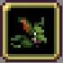
유코백(Ukoback) : 레벨 3 스바로크 동상 무기를 장비하고 있으며 적을 추적하고 적을 유코백의 위치로 유인한다.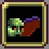
비터플라이(Bitterfly) : 레벨 7 마늘 무기를 장비하고 있으며 플레이어 근처에 머문다.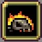
혐의 있는 고스트(Alleged Ghost) : 레벨 7 정령 소환 무기를 장비하고 있으며 플레이어와 반대로 움직이면서 적들을 혐의 있는 고스트의 위치로 유인한다.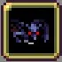
임프(Imp) : 레벨 8 트라이던트 무기를 장비하고 있으며 적을 추적한다.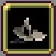
나무 봉(Wood Rod) : 레벨 2 불의 지팡이, 마법 지팡이, 번개 반지 무기를 장비하고 있으며 플레이어 뒤를 따라다닌다.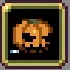
펌프킨(Pumpkin) : 레벨 8 곡선 단검과 레벨 1 트롤 폭탄을 장비하고 있다. 무작위로 움직이며 적의 어그로를 끈다.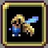
요정 : 레벨 3 레펙시오 무기를 장비하고 있으며 플레이어 근처에 머문다.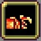
신성한 추기경: 레벨 3 레이징 파이어 무기를 장비하고 있으며 플레이어 근처에 머문다.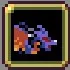
신성한 드래곤 : 레벨 3 풀구르 무기를 장비하고 있으며 플레이어 근처에 머문다.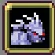
신성한 호랑이 : 레벨 3 아이스 팡 무기를 장비하고 있으며 플레이어 근처에 머문다.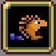
신성한 거북이 : 레벨 3 록 라이엇 무기를 장비하고 있으며 플레이어 근처에 머문다.
8.71. 샤프트 구슬
 Shaft Orb [TP_SHAFTORB]
Shaft Orb [TP_SHAFTORB]- 히든 무기로 사용하는 캐릭터: 샤프트
- 공격 방식: 무한 관통하는 구슬이 호를 그리며 날아간다. 기본 공격력은 20이다.
- 컬렉션에 등록되지 않는 무기로, 샤프트의 발악기로만 볼 수 있다.
8.72. 불타는 알루카드
 Burning Alcarde [TP_BLUEFIRE_WEAPON]
Burning Alcarde [TP_BLUEFIRE_WEAPON]- 히든 무기로 사용하는 캐릭터: 에릭
- 에릭 리카드가 빈사 상태일 때 발동하는 발악기로, 히든 무기 형태로 구현되어 있다.
8.73. 데스의 아니마
Anima of Death [TP_DEATHHAND]- 공격 방식: 뼈 손에 닿은 적에게 대미지를 입힌다. 기본 공격력은 65다.
- 컬렉션에 등록되지 않는 무기로, 변신 데스의 손을 구현하기 위해서만 존재한다.
8.74. 드라큘라의 아니마
Anima of Dracula [TP_DRACULAHAND]- 공격 방식: 양 손에 닿은 적에게 대미지를 입힌다. 기본 공격력은 65다.
- 컬렉션에 등록되지 않는 무기로, 변신 드라큘라의 손을 구현하기 위해서만 존재한다.
9. Emerald Diorama
이 DLC의 무기들은 섬광(Glimmers) 능력을 추가로 가지고 있다. 사가 에메랄드 비욘드에도 있는 시스템의 패러디이다.
이 무기들을 사용할 때 확률로[225] 머리에 전구 아이콘과 스킬 이름이 뜨고 해당 스킬 공격을 보유하게 된다. 그 후 해당 스킬을 보유하게 되면, 해당 무기가 ~번째 발동될 때마다 우측에 그 스킬의 이름이 뜨면서 해당 스킬 공격이 발동된다. 쉽게 말해 '플뢰레' 무기의 '크리스탈 조각' 기술이 발동되면, 그 후 플뢰레가 5번 발동할 때마다 추가로 '크리스탈 조각' 공격도 함께 나간다.
진화 무기는 이전 무기의 스킬 공격을 사용할 수 있으나, 일부 무기들은 발동까지 필요한 공격 횟수가 증가하기도 한다.
이 무기들을 사용할 때 확률로[225] 머리에 전구 아이콘과 스킬 이름이 뜨고 해당 스킬 공격을 보유하게 된다. 그 후 해당 스킬을 보유하게 되면, 해당 무기가 ~번째 발동될 때마다 우측에 그 스킬의 이름이 뜨면서 해당 스킬 공격이 발동된다. 쉽게 말해 '플뢰레' 무기의 '크리스탈 조각' 기술이 발동되면, 그 후 플뢰레가 5번 발동할 때마다 추가로 '크리스탈 조각' 공격도 함께 나간다.
진화 무기는 이전 무기의 스킬 공격을 사용할 수 있으나, 일부 무기들은 발동까지 필요한 공격 횟수가 증가하기도 한다.
9.1. 플뢰레
 Fleuret [EME_RAPIER1]
Fleuret [EME_RAPIER1]속도가 피해에 영향을 줍니다. "크리스털 조각" 기술에 섬광 효과를 줄 수 있습니다.
[ 무기 능력치 ]
투사체 제한50희귀도50쿨타임2.35(1.35)연사 간격0.1피해량6(12)공격 범위100%투사체 수2(3)넉백1[ 레벨업 효과 ]
레벨1획득레벨2투사체 수 +1레벨3피해량 +3레벨4쿨타임 -0.5레벨5피해량 +3레벨6쿨타임 -0.5[ 한계돌파 목록 ]
종류희귀도최대치피해량 +0.2510-공격 범위 +2.5%5500%투사체 수 +1110- 해금 조건: Emerald Diorama 스테이지에 배치된 츠나노리 미도의 관을 열기.
- 공격 방식: 가까운 무작위한 적 하나를 중심으로 피해 영역을 생성한다. 타격 횟수는 투사체 수에 따라 추가로 증가하며, 투사체 속도가 피해량에 영향을 준다.
- 섬광: 크리스털 조각, 매 5회마다 발동. 대상을 중심으로 확률적으로 빙결을 유발하는 작은 폭발을 일으킨다.
- 기본 무기로 사용하는 캐릭터: 츠나노리 미도(1, 3번째 스킨)
- 직접 적용 아르카나: 한도초과
- 변칙 적용 아르카나: 혼돈이 가득한 어두운 밤
- 직접 적용 능력치: 피해량, 공격 범위, 쿨타임, 투사체 수, 속도
- 조합: 섬광 기술 습득 시 드레스 검으로 진화할 수 있다.
- 운용 팁: 좁은 범위, 낮은 단타 공격력, 무작위 대상 지정이 겹쳐 초반 성능이 많이 갑갑하다. 기본 쿨타임이 짧아서 쿨감을 갖추면 좀 나아진다.
- 기타:
9.2. 타운 소드
 Town Sword [EME_LONGSWORD1]
Town Sword [EME_LONGSWORD1]마주보는 방향으로 길게 벱니다. "제비 베기" 공격에 섬광 효과를 줄 수 있습니다.
[ 무기 능력치 ]
투사체 제한50희귀도50쿨타임3연사 간격0.2(0.16)피해량6.5(12.5)공격 범위90(110)%투사체 수2(4)넉백1[ 레벨업 효과 ]
레벨1획득레벨2투사체 수 +1레벨3피해량 +3레벨4공격 범위 +20%레벨5피해량 +3레벨6투사체 수 +1[ 한계돌파 목록 ]
종류희귀도최대치피해량 +0.2510-공격 범위 +2.5%5500%투사체 수 +1110- 해금 조건: Emerald Diorama 스테이지에 배치된 시그나스의 관을 열기.
- 공격 방식: 캐릭터가 보고 있는 방향 바로 앞에 원형의 피해 영역을 생성한다. 투사체 수에 따라 히트수와 지속시간이 정해지고, 캐릭터의 이동을 실시간으로 따라간다.
- 섬광: 제비 베기[226], 매 3회마다 발동. 캐릭터가 보고 있는 방향으로 관통형 투사체를 쏜다.
- 기본 무기로 사용하는 캐릭터: 시그나스
- 직접 적용 아르카나:
- 변칙 적용 아르카나:
- 직접 적용 능력치: 피해량, 공격 범위, 쿨타임, 투사체 수
- 조합: 섬광 기술 습득 시 로드스타로 진화할 수 있다.
- 운용 팁:
- 기타:
9.3. 스플래셔
 Splashers [EME_DUAL1]
Splashers [EME_DUAL1]지속 시간이 피해에 영향을 줍니다. "듀얼 회오리" 기술에 섬광 효과를 줄 수 있습니다.
[ 무기 능력치 ]
투사체 제한30희귀도50쿨타임4(3)연사 간격0.2피해량20(40)공격 범위100(175)%투사체 수1지속시간1(3)히트박스 딜레이0.5넉백1[ 레벨업 효과 ]
레벨1획득레벨2공격 범위 +25%레벨3지속 시간 +0.5, 쿨타임 -0.3레벨4공격 범위 +25%, 피해량 +10레벨5지속 시간 +0.5, 쿨타임 -0.3레벨6공격 범위 +25%, 피해량 +10레벨7지속 시간 +0.5, 쿨타임 -0.3레벨8지속 시간 +0.5, 쿨타임 -0.3[ 한계돌파 목록 ]
종류희귀도최대치피해량 +0.2510-공격 범위 +2.5%5500%지속시간 +0.115투사체 수 +1110- 해금 조건: 플뢰레를 진화시키고 최대 레벨까지 올린다.
- 공격 방식: 캐릭터가 보고 있는 방향(좌우 한정)의 위아래로 참격을 날린다. 지속시간에 따라 피해량이 추가로 증가한다.
- 섬광: 듀얼 회오리, 매 6회마다 발동. 캐릭터가 보고 있는 방향(좌우 한정)의 위아래로 곡선으로 날아가는 회오리를 발사한다. 회오리가 만나면 합쳐져 그 위치에 머무르는 거대한 회오리를 형성한다. 리그 오브 레전드의 갈리오 Q와 거의 비슷하다.
- 기본 무기로 사용하는 캐릭터: 츠나노리 미도(2, 4번째 스킨)
- 직접 적용 아르카나:
- 변칙 적용 아르카나:
- 직접 적용 능력치: 피해량, 공격 범위, 쿨타임, 투사체 수, 지속 시간
- 운용 팁: 좌우에 빈틈이 존재하며, 범위가 넓어질수록 더 심해진다. 투사체 수는 베기 횟수에 영향을 끼치며, 높을수록 빈틈이 줄기 때문에 이 무기로 초반을 날 생각이라면 챙겨놔야 한다.
- 기타:
9.4. 플랑베르주
 Flamberge [EME_GREATSWORD1]
Flamberge [EME_GREATSWORD1]회전 검을 위로 던집니다. "불 크러시" 기술에 섬광 효과를 줄 수 있습니다.
[ 무기 능력치 ]
투사체 제한50희귀도50쿨타임4연사 간격0.2피해량20(30)공격 범위60(100)%투사체 수1(2)치명타 확률2%치명타 배율2넉백1[ 레벨업 효과 ]
레벨1획득레벨2투사체 수 +1레벨3피해량 +5레벨4공격 범위 +20%레벨5피해량 +5레벨6공격 범위 +20%[ 한계돌파 목록 ]
종류희귀도최대치피해량 +0.2510-공격 범위 +2.5%5500%투사체 수 +1110- 해금 조건: 플랑베르주를 진화시키고 최대 레벨까지 올린다.
- 공격 방식: 회전하는 대검을 머리 위로 던진다. 대검은 포물선으로 날아가며 무한 관통한 뒤 땅에 박힌다. 치명타가 발동할 수 있다. 땅에 박힌 대검에는 판정이 없다.
- 섬광: 불 크러시, 매 3회마다 발동. 노란 기운을 띤 대검을 대신 던진다. 이 대검은 땅에 박히지 않고 반원형의 넓은 범위에 참격을 가한다.
- 기본 무기로 사용하는 캐릭터: 마지막 황제
- 직접 적용 아르카나: 절단
- 진화: 섬광 기술 습득 시 Zweihander로 진화할 수 있다.
9.5. 펀치
 Punch [EME_PUNCH1]
Punch [EME_PUNCH1]옆으로 공격합니다. "나찰장" 기술에 섬광 효과를 줄 수 있습니다.
[ 무기 능력치 ]
투사체 제한40희귀도50쿨타임4(3.2)연사 간격0.3피해량6.5공격 범위100(110)%투사체 수1(3)넉백0기타 태그[ 레벨업 효과 ]
레벨1획득레벨2투사체 수 +1레벨3쿨타임 -0.4레벨4공격 범위 +10%레벨5쿨타임 -0.4레벨6투사체 수 +1[ 한계돌파 목록 ]
종류희귀도최대치피해량 +0.2510-공격 범위 +2.5%5500%투사체 수 +1110- 해금 조건: 펀치를 6레벨까지 올린다.
- 공격 방식: 캐릭터가 보고 있는 방향(좌우 한정)의 뒤에서부터 앞까지 호를 그리며 쓸어버리는 짧은 근접 공격을 한다. 위 아래 순으로 번갈아가며 공격한다.
- 섬광: 나찰장, 매 6회마다 발동. 10개의 불타는 주먹을 공격 방향으로 발사한다. 사거리는 짧고, 발사 위치가 캐릭터를 따라가지 않으며 발동된 위치에서 끝까지 발사된다.
- 기본 무기로 사용하는 캐릭터: 보니 블레어(1, 3번 스킨)
- 직접 적용 아르카나: 불의 심장
- 운용팁: 낮고 올라가지도 않는 피해량, 좁은 범위, 없는 넉백, 긴 쿨타임 등 나쁜 특성만 모여 있는 무기다.
- 진화: 섬광 기술 습득 시 압력 포인트로 진화할 수 있다.
9.6. 킥
 Kick [EME_KICK1]
Kick [EME_KICK1]체력이 최대일 때 더 많은 피해를 입힙니다. "썬더 킥" 기술에 섬광 효과를 줄 수 있습니다.
[ 무기 능력치 ]
투사체 제한30희귀도50쿨타임2.5(2)연사 간격0.2피해량10(18)공격 범위100(120)%투사체 수1(3)히트박스 딜레이0.5넉백0[ 레벨업 효과 ]
레벨1획득레벨2투사체 수 +1레벨3피해량 +2레벨4공격 범위 +10%, 피해량 +2레벨5투사체 수 +1레벨6공격 범위 +10%, 피해량 +2레벨7피해량 +2레벨8쿨타임 -0.5[ 한계돌파 목록 ]
종류희귀도최대치피해량 +0.2510-공격 범위 +2.5%5500%투사체 수 +1110- 해금 조건: 킥을 6레벨까지 올린다.
- 공격 방식: 캐릭터가 보고 있는 방향(좌우 한정)의 전방에 근접 공격을 가한다. 체력이 최대치면 피해량이 약 2배로 증가한다.
- 섬광: 썬더 킥, 매 3회마다 발동. 발동 방향의 대각선 위로 거대한 번개를 발사한다. 번개는 적을 무한 관통하며, 화면 끝에 닿으면 고정된 방향으로 1번 반사된다.
- 기본 무기로 사용하는 캐릭터: 보니 블레어(2, 4번 스킨)
- 직접 적용 아르카나: 공주의 비련
- 운용팁: 고정된 방향만 공격하고 후방이 비는 문제가 있긴 하나, 펀치보다는 훨씬 강하다. 근접한 적을 막는 용도로는 무난하다.
9.7. 세이버 기관총
 Saber Machine Gun [EME_CANNON1]
Saber Machine Gun [EME_CANNON1]정면을 향해 발사체를 발사합니다. "충격파" 기술에 섬광 효과를 줄 수 있습니다.
[ 무기 능력치 ]
투사체 제한200희귀도60쿨타임4(5)연사 간격0.02(0.016)피해량0.5(1)공격 범위100%투사체 속도100%투사체 수1(3)지속시간0.026(0.05)관통 횟수0넉백0.5기타 태그[ 레벨업 효과 ]
레벨1획득레벨2투사체 수 +1, 쿨타임 +0.5레벨3투사체 지속시간 +12ms레벨4피해량 +0.5레벨5투사체 지속시간 +12ms레벨6투사체 수 +1, 쿨타임 +0.5[ 한계돌파 목록 ]
종류희귀도최대치피해량 +0.2510-투사체 속도 +5%10300%공격 범위 +2.5%5500%지속시간 +0.115투사체 수 +1110- 해금 조건: 세이버 기관총을 6레벨까지 올린다.
- 공격 방식: 캐릭터가 보고 있는 방향의 전방 부채꼴 범위에 사거리가 짧은 탄환을 다수 퍼붓는다.
- 섬광: 충격파, 매 3회마다 발동. 무작위한 적 위치에 폭발을 일으킨다.
- 기본 무기로 사용하는 캐릭터: 포미나 프랭클린(1, 3번 스킨)
- 직접 적용 아르카나: 불의 심장
- 운용팁: 통상 공격의 위력이 끔찍한데, 1레벨 피해량이 꼴랑 0.5, 4레벨 찍어도 1이라는 비비탄만도 못한 위력을 자랑한다. 피해량 스탯을 아무리 올려도 딜이 안 올라가 무조건 불의 심장을 채용해야 쓸만해진다. 그나마 섬광 기술의 위력은 정상적이다.
- 진화: 섬광 기술 습득 시 헤카톤 기관총으로 진화할 수 있다.
9.8. 슈퍼 미사일
 Super Missile [EME_MECH1]
Super Missile [EME_MECH1]폭발하는 발사체를 발사합니다. "탄도 미사일" 기술에 섬광 효과를 줄 수 있습니다.
[ 무기 능력치 ]
투사체 제한100희귀도50쿨타임3.25(3)피해량10(20)공격 범위100%투사체 속도100(110)%투사체 수1관통 횟수0(1)넉백1[ 레벨업 효과 ]
레벨1획득레벨2피해량 +5레벨3관통 수 +1레벨4투사체 속도 +10%레벨5피해량 +5레벨6쿨타임 -0.25[ 한계돌파 목록 ]
종류희귀도최대치피해량 +0.2510-투사체 속도 +5%10300%공격 범위 +2.5%5500%관통 횟수 +1520투사체 수 +1110- 해금 조건: 슈퍼 미사일을 6레벨까지 올린다.
- 공격 방식: 캐릭터가 보고 있는 방향으로 작은 폭발을 일으키는 미사일을 하나 발사한다. 기본 공격은 투사체 수의 영향을 받지 않는다.
- 섬광: 탄도 미사일, 매 3회마다 발동. 다수의 미사일을 캐릭터 좌상단과 우상단으로 발사한다. 발사된 미사일은 아래 방향으로 퍼져나간다.
- 기본 무기로 사용하는 캐릭터: 디바 5번(버지니아를 제외한 모든 스킨)
- 직접 적용 아르카나: 불의 심장
- 진화: 섬광 기술 습득 시 히드라 캐논으로 진화할 수 있다.
9.9. 이글 건
 Eagle Gun [EME_PISTOL1]
Eagle Gun [EME_PISTOL1]가까이 있는 적을 가격합니다. "팔콘파이어" 기술에 섬광 효과를 줄 수 있습니다.
[ 무기 능력치 ]
투사체 제한200희귀도50쿨타임4(3.25)연사 간격0.2(0.13)피해량5(10)공격 범위100(150)%투사체 속도125%투사체 수1(8)넉백1[ 레벨업 효과 ]
레벨1획득레벨2공격 범위 +25%, 투사체 수 +1레벨3쿨타임 -0.25, 투사체 수 +1레벨4피해량 +2.5, 투사체 수 +1레벨5공격 범위 +25%, 투사체 수 +1레벨6쿨타임 -0.25, 투사체 수 +1레벨7피해량 +2.5, 투사체 수 +1레벨8쿨타임 -0.25, 투사체 수 +1[ 한계돌파 목록 ]
종류희귀도최대치피해량 +0.2510-투사체 속도 +5%10300%공격 범위 +2.5%5500%투사체 수 +1110- 해금 조건: 이글 건을 6레벨까지 올린다.
- 공격 방식: 근접한 적을 조준해 공격한다.
- 섬광: 팔콘파이어, 매 4회마다 발동. 무작위한 적의 위치에 큰 폭발을 일으킨다.
- 기본 무기로 사용하는 캐릭터: 포미나 프랭클린(2, 4번 스킨)
- 직접 적용 아르카나: 사파이어 미스트
9.10. 쿠쿠리
 Khukuri [EME_KNIFE1]
Khukuri [EME_KNIFE1]그림자 클론이 근처의 적을 공격합니다. "낙월파침" 기술에 섬광 효과를 줄 수 있습니다.
[ 무기 능력치 ]
투사체 제한100희귀도50쿨타임4(3.5)연사 간격0.2피해량6.5(16.5)공격 범위100(150)%투사체 속도100%투사체 수1(3)지속시간0.2(0.4)히트박스 딜레이0.1관통 횟수0치명타 확률2.5%치명타 배율3넉백1[ 레벨업 효과 ]
레벨1획득레벨2공격 범위 +25%레벨3쿨타임 -0.25, 지속시간 +0.1레벨4투사체 수 +1레벨5피해량 +10레벨6투사체 수 +1레벨7쿨타임 -0.25, 지속시간 +0.1레벨8공격 범위 +25%[ 한계돌파 목록 ]
종류희귀도최대치피해량 +0.2510-투사체 속도 +5%10300%공격 범위 +2.5%5500%치명타 확률 +2.5%5100%지속시간 +0.115투사체 수 +1110- 해금 조건: 쿠쿠리를 끝까지 진화시키고 최대 레벨까지 올린다.
- 공격 방식: 가까운 적에게 그림자를 날린다. 그림자는 명중하면 그 자리에 잠시 유지되다 사라진다.
- 섬광: 낙월파침, 매 5회마다 발동. 적중하면 폭발을 일으키는 그림자를 대신 생성한다.
- 기본 무기로 사용하는 캐릭터: 마차 얼터 에고
- 직접 적용 아르카나: 절단
- 여담: 낙월파참이 낙월파침으로 오타가 나 있다.
9.11. 트윈 드래곤
 Twin Dragon [EME_KATANA1]
Twin Dragon [EME_KATANA1]수평으로 공격합니다. "무덤도굴꾼" 기술에 섬광 효과를 줄 수 있습니다.
[ 무기 능력치 ]
투사체 제한100희귀도50쿨타임4(3)연사 간격0.15피해량10(25)공격 범위90(100)%투사체 수1(3)치명타 확률0%[229]치명타 배율2넉백1[ 레벨업 효과 ]
레벨1획득레벨2투사체 수 +1레벨3쿨타임 -0.5레벨4투사체 수 +1레벨5공격 범위 +10%, 피해량 +5레벨6쿨타임 -0.5레벨7피해량 +5레벨8피해량 +5[ 한계돌파 목록 ]
종류희귀도최대치피해량 +0.2510-공격 범위 +2.5%5500%치명타 확률 +2.5%5100%투사체 수 +1110- 해금 조건: 트윈 드래곤을 6레벨까지 올린다.
- 공격 방식: 캐릭터가 보고 있는 방향(좌우 한정)으로 근접 참격을 날린다. 한계돌파로 치명타 확률을 올릴 수 있지만 절단 아르카나가 있어야만 치명타가 발동한다.
- 섬광: 무덤도굴꾼, 매 3회마다 발동. 무기가 발동된 방향으로 짧게 수평으로 나가는 충격파를 내보낸다. 충격파는 사거리 끝에서 수직 폭발을 일으킨다.
- 기본 무기로 사용하는 캐릭터: 디바 5번(버지니아 스킨)
- 직접 적용 아르카나: 절단
9.12. 불로바
 Bullova [EME_AXE1]
Bullova [EME_AXE1]적을 통과합니다. "지옥의 분노" 기술에 섬광 효과를 줄 수 있습니다.
[ 무기 능력치 ]
투사체 제한50희귀도50쿨타임2.3(1.9)연사 간격0.1피해량10(30)공격 범위100%투사체 수1(4)지속시간1(1.5)히트박스 딜레이0.5치명타 확률0%[230]치명타 배율2넉백1[ 레벨업 효과 ]
레벨1획득레벨2투사체 수 +1레벨3피해량 +5레벨4투사체 수 +1, 쿨타임 -0.2레벨5피해량 +5레벨6투사체 수 +1레벨7피해량 +5, 쿨타임 -0.2레벨8피해량 +5, 지속시간 +0.5[ 한계돌파 목록 ]
종류희귀도최대치피해량 +0.2510-공격 범위 +2.5%5500%치명타 확률 +2.5%5100%투사체 수 +1110- 해금 조건: 불로바를 진화하고 최대 레벨까지 올린다.
- 공격 방식: 캐릭터 머리 위에 다수의 도끼날이 생성되며, 보고 있는 방향(좌우 한정)의 근접 범위에 사선으로 내려찍는다. 투사체 속도는 고정되어 있으며, 지속시간이 사거리에 영향을 준다. 한계돌파로 치명타 확률을 올릴 수 있지만 절단 아르카나가 있어야만 치명타가 발동한다.
- 섬광: 지옥의 분노, 매 12번마다 발동. 캐릭터가 보고 있는 방향(좌우 한정)의 조금 떨어진 곳에 긴 불기둥을 생성한다.
- 기본 무기로 사용하는 캐릭터: 돌로레스
- 직접 적용 아르카나: 절단
9.13. 블러드 스타
 Sanguine Star [EME_BLOOD1]
Sanguine Star [EME_BLOOD1]가장 가까운 적을 가격합니다. "블러드 스파르탄" 기술에 섬광 효과를 줄 수 있고 이 때 피해량이 2배, 공격 범위가 2배가 됩니다.
[ 무기 능력치 ]
투사체 제한50희귀도50쿨타임4(3)연사 간격0.05피해량8(16)공격 범위100%투사체 수2(6)히트박스 딜레이0.5넉백1[ 레벨업 효과 ]
레벨1획득레벨2투사체 수 +1레벨3피해량 +4레벨4투사체 수 +1레벨5쿨타임 -1레벨6투사체 수 +1레벨7피해량 +4레벨8투사체 수 +1[ 한계돌파 목록 ]
종류희귀도최대치피해량 +0.2510-공격 범위 +2.5%5500%투사체 수 +1110- 해금 조건: 블러드 스타를 6레벨까지 올린다.
- 공격 방식: 가까운 적에게 좁은 범위 공격을 한다.
- 섬광: 블러드 스파르탄, 매 5번마다 발동. 공격의 피해량과 범위가 2배가 된다.
- 기본 무기로 사용하는 캐릭터: 시그나스(2, 4번 스킨)
- 직접 적용 아르카나: 황혼의 진혼곡
9.14. 글레이브
 Glaive [EME_SPEAR1]
Glaive [EME_SPEAR1]마주보는 방향으로 찌릅니다. "활살수신임팩트" 기술에 섬광 효과를 줄 수 있습니다.
[ 무기 능력치 ]
투사체 제한50희귀도50쿨타임2.8연사 간격0.13피해량6(12)공격 범위80%투사체 속도80(100)%투사체 수1(3)넉백1[ 레벨업 효과 ]
레벨1획득레벨2투사체 수 +1레벨3피해량 +3레벨4투사체 속도 +20%레벨5투사체 수 +1레벨6피해량 +3[ 한계돌파 목록 ]
종류희귀도최대치피해량 +0.2510-투사체 속도 +5%10300%공격 범위 +2.5%5500%투사체 수 +1110- 해금 조건: 글레이브를 진화한다.
- 공격 방식: 발동 시 캐릭터가 보고 있는 방향으로 다수의 창을 생성해 내지른다. 투사체 속도에 따라 사거리가 증가한다.
- 섬광: 활살수신임팩트, 매 3번마다 발동. 더 거대하고 길고 강력한 창을 추가로 생성한다.
- 기본 무기로 사용하는 캐릭터: 리타
- 직접 적용 아르카나: 황혼의 진혼곡
- 진화: 섬광 기술 습득 시 깃털 창으로 진화할 수 있다.
9.15. 정령 반지
 Spirit Rings [EME_MAGIC1]
Spirit Rings [EME_MAGIC1]공격 범위, 속도, 지속 시간 및/또는 성장 보너스가 155% 이상일 때 추가 기술을 발동합니다.
[ 무기 능력치 ]
투사체 제한50희귀도50쿨타임4연사 간격0.1피해량10(20)투사체 수1(4)지속시간1(1.5)히트박스 딜레이0.5넉백1기타 태그[ 레벨업 효과 ]
레벨1획득레벨2투사체 수 +1레벨3지속시간 +0.3레벨4피해량 +5레벨5투사체 수 +1레벨6지속시간 +0.3레벨7피해량 +5레벨8투사체 수 +1[ 한계돌파 목록 ]
종류희귀도최대치피해량 +0.2510-지속시간 +0.115투사체 수 +1110- 해금 조건: 정령 반지를 6레벨까지 올린다.
- 공격 방식: 아래의 기술을 번갈아가며 발동한다. 통상 공격은 아무것도 나오지 않으며, 그냥 섬광 기술의 사이클을 돌리는 더미다. 아이템 설명에는 추가 기술 발동을 위해 155% 이상을 요구한다고 되어 있는데, 이는 시스템상 능력치다. 시스템상 능력치가 100%일 때 표기 능력치가 +0%로 나오기 때문에 실전에서는 표기 능력치가 +55% 이상이기만 하면 된다.
- 섬광
- 햇빛, 매번 발동. 무작위한 적의 위치에 노란색의 빛 기둥을 생성한다.
- 아쿠아 스피어, 매 3번마다 발동. 빠르게 움직이며 적에게 닿으면 반사되는 물기둥을 생성한다. 지속시간 능력치가 +55% 이상이어야 발동된다.
- 천둥, 매 5번마다 발동. 무작위한 적의 위치에 번개를 내려꽂는다. 투사체 속도 능력치가 +55% 이상이어야 발동된다.
- 초중력, 매 7번마다 발동. 거대한 중력파를 생성해 화면 내의 모든 적을 공격한다. 성장 능력치가 +55% 이상이어야 발동된다.
- 버밀리온 샌드, 매 11번마다 발동. 가장 강력한 적을 추적하는 붉은 소용돌이를 생성한다. 공격 범위 능력치가 +55% 이상이어야 발동된다.
- 기본 무기로 사용하는 캐릭터: 아메야
- 직접 적용 아르카나: 황혼의 진혼곡, 수정 감옥, 불의 심장
- 운용팁: 이 무기의 기술은 습득이 따로 되지 않고, 섬광 기술로 판정되지도 않는다. 섬광 기술 습득을 트리거로 삼는 효과나 섬광 기술 발동 수에 비례하는 효과에 아무 영향도 주지 못한다.
- 진화: 5개의 최대 레벨의 장신구(종류 무관)를 소지하고 있다면 재앙의 고리로 진화할 수 있다.
9.16. 에메랄드 휴거
 Emerald Rapture [EME_WAVE]
Emerald Rapture [EME_WAVE]무작위로 적을 선택해 순간이동시키지만, 경험치 보석을 떨어트리지 않을 수도 있습니다.
[ 무기 능력치 ]
투사체 제한50희귀도1쿨타임3피해량100공격 범위100(140)%투사체 속도75(175)%투사체 수1(4)지속시간2(2.6)경험치를 남길 확률0(35)%넉백-[ 레벨업 효과 ]
레벨1획득레벨2지속시간 +0.2, 공격 범위 +20%, 경험치 보석을 남길 확률 +5%레벨3투사체 수 +1, 경험치 보석을 남길 확률 +5%레벨4투사체 속도 +50%, 공격 범위 +20%, 경험치 보석을 남길 확률 +5%레벨5투사체 수 +1, 경험치 보석을 남길 확률 +5%레벨6지속시간 +0.2, 경험치 보석을 남길 확률 +5%레벨7투사체 수 +1, 경험치 보석을 남길 확률 +5%레벨8지속시간 +0.2, 투사체 속도 +50%, 경험치 보석을 남길 확률 +5%[ 한계돌파 목록 ]
종류희귀도최대치피해량 +0.2510-투사체 속도 +5%10300%지속시간 +0.115투사체 수 +1110- 해금 조건: 에메랄드 휴거를 진화한다.
- 공격 방식: 사선으로 부는 녹색 바람이 적을 타격해 즉사시킨다. 그러나 즉사된 적은 높은 확률로 경험치를 드롭하지 않는다. 발동 확률은 모든 능력치의 영향을 받는다. 이펙트가 화려하지만 바람 하나는 오로지 적 하나만 타격한다.
- 기본 무기로 사용하는 캐릭터: -
- 직접 적용 아르카나: -
- 운용팁: 위력과 페널티 모두가 약화된 오망성이다. 희귀도가 매우 낮아 일반적인 플레이에서는 구경하기 힘들다. 선택기 쪽을 노려봐야 한다.
9.17. 직관
 Intuition [EME_SELECTOR]
Intuition [EME_SELECTOR]다양한 주문 중에서 선택할 수 있습니다.[232]
- 해금 조건: 블러드 스타를 진화시킨다.
- 희귀도: 2
- 설명: 사탕상자 계열과 동일한 선택권 무기. 해금된 에메랄드 디오라마 관련 무기들 중 아직 선택하지 않은 무기 하나를 선택할 수 있다.
- 운용 팁: 선택기들이 다들 그렇지만 노리고 집기에는 희귀도가 너무 낮다. 나오면 필요한 무기나 캐릭터 특성, 아르카나와 시너지가 있는 무기를 고르면 된다. 다 관심 없다면 에메랄드 휴거를 선택해 추가 경험치라도 확보하면 된다.
- 기타:
10. Ante Chamber
이 DLC의 무기들은 습득 시 외부 방해자 무기를 자동으로 추가한다. 이 무기는 이전에 입수하지 않았을 때만 생성된다. 무기를 진화할 때 외부 방해자는 슬롯에서 사라지며 '내부 방해자'라는 히든 무기로 바뀐다.
10.1. 인페르놀라트로
 Infernolatro [LEM_INFERNO1]
Infernolatro [LEM_INFERNO1]마주보는 정면 방향으로 화염 구역을 만듭니다. 적의 처치로 강화됩니다.
[ 무기 능력치 ]
투사체 제한1희귀도80쿨타임4(8)피해량15(30)공격 범위100(120%)지속시간2.5(4.5)넉백0기타 태그[ 레벨업 효과 ]
레벨1획득레벨2지속시간 +0.5, 쿨타임 +1레벨3피해량 +5레벨4지속시간 +0.5, 쿨타임 +1레벨5피해량 +5레벨6공격 범위 +20%레벨7지속시간 +0.5, 쿨타임 +1레벨8피해량 +5레벨9지속시간 +0.5, 쿨타임 +1[ 한계돌파 목록 ]
종류희귀도최대치피해량 +0.2510-공격 범위 +2.5%5500%지속시간 +0.115- 해금 조건: 인페르놀라트로를 6레벨까지 올린다.
- 공격 방식: 실시간으로 캐릭터가 보고 있는 방향을 따라가는 거대한 화염 영역을 생성하여, 영역에 닿은 적에게 1.5초마다 피해를 준다. (0.5√투사체가 적을 처치한 수)만큼의 피해량 보너스를 얻는데, 투사체가 종료되면 카운터도 초기화된다.
- 기본 무기로 사용하는 캐릭터: 짐보
- 직접 적용 아르카나: 불의 심장
- 운용팁: 효과를 보려면 뺑뺑이를 돌아야 하는 귀찮은 무기지만 화력은 좋다.
- 진화: 최대 레벨의 외부 방해자나 내부 방해자를 소지하고 있다면 나인페르노로 진화할 수 있다.
10.2. 그로스 미셸
 Gros Michel [LEM_BANANA1]
Gros Michel [LEM_BANANA1]휘어진 바나나를 날립니다. 6번 중 1번은 치명타를 맞고 폭발할 확률이 높습니다.
[ 무기 능력치 ]
투사체 제한100희귀도80쿨타임1.2(1)연사 간격0.05피해량10(20)공격 범위100%투사체 속도100(160)%투사체 수2(5)지속시간1치명타 확률16.6%치명타 배율2넉백5[ 레벨업 효과 ]
레벨1획득레벨2투사체 수 +1레벨3투사체 속도 +20%레벨4피해량 +5레벨5투사체 수 +1, 쿨타임 -0.1레벨6투사체 속도 +20%레벨7피해량 +5레벨8투사체 속도 +20%레벨9투사체 수 +1, 쿨타임 -0.1[ 한계돌파 목록 ]
종류희귀도최대치피해량 +0.2510-투사체 속도 +5%10300%공격 범위 +2.5%5500%치명타 확률 +2.5%5100%지속시간 +0.115투사체 수 +1110- 해금 조건: 그로스 미셸을 6레벨까지 올린다.
- 공격 방식: 캐릭터가 보고 있는 방향으로 다수의 바나나를 발사한다. 바나나는 적에 부딪히고 반사될 수 있으며, 치명타 발동 시 폭발해 광역 피해를 준다.
- 기본 무기로 사용하는 캐릭터: 치코트
- 직접 적용 아르카나: 진주의 왈츠, 절단, 창백한 다이아몬드의 급습
- 운용팁:
- 진화: 최대 레벨의 외부 방해자나 내부 방해자를 소지하고 있다면 캐번디시로 진화할 수 있다.
10.3. 피보나치 스프리츠
 Fibonacci Spritz [LEM_FIBONACCI1]
Fibonacci Spritz [LEM_FIBONACCI1]탄산수의 나선형 스프레이를 만듭니다. 장착한 또 다른 무기를 발사할 수 있습니다.
[ 무기 능력치 ]
투사체 제한100희귀도80쿨타임3.6(3)연사 간격0.25피해량15(30)공격 범위100(120)%투사체 속도100%투사체 수1(3)히트박스 딜레이1타 무기 발사 확률0(34)%넉백5[ 레벨업 효과 ]
레벨1획득레벨2투사체 수 +1, 다른 무기 발사 확률: 1%레벨3쿨타임 -0.3, 다른 무기 발사 확률: 2%레벨4피해량 +5, 다른 무기 발사 확률: 3%레벨5공격 범위 +20%, , 다른 무기 발사 확률: 5%레벨6투사체 수 +1, 다른 무기 발사 확률: 8%레벨7피해량 +5, 다른 무기 발사 확률: 13%레벨8쿨타임 -0.3, 다른 무기 발사 확률: 21%레벨9피해량 +5, 다른 무기 발사 확률: 34%[ 한계돌파 목록 ]
종류희귀도최대치피해량 +0.2510-투사체 속도 +5%10300%공격 범위 +2.5%5500%투사체 수 +1110- 해금 조건: 피보나치 스프리츠를 6레벨까지 올린다.
- 공격 방식: 캐릭터가 보고 있는 방향 조금 앞에 탄산수 병을 던진다. 탄산수는 점차 가속되며, 나선을 그리며 회전한다. 추가로 일정 확률로 다른 무기를 발동하는데, 확률은 표기 수치 + (행운 능력치의 10%)다.
- 기본 무기로 사용하는 캐릭터: 카니오
- 간접 적용 아르카나: 사악한 계절, 사파이어 미스트, 숨겨진 혐오감
사악한 계절과 숨겨진 혐오감은 행운을 늘려 간접적으로 다른 무기 발사 확률을 높여주고, 사파이어 미스트는 발동 횟수를 늘려 다른 무기 발사 확률을 굴릴 기회를 더 제공한다. - 운용팁:
- 진화: 최대 레벨의 외부 방해자나 내부 방해자를 소지하고 있다면 로열 플러시로 진화할 수 있다.
- 기타: 무기 이름대로, 다른 무기를 발사할 확률은 피보나치 수열을 따라간다.
10.4. 천체 부스터
 Celestial Booster [LEM_PLANETS1]
Celestial Booster [LEM_PLANETS1]행성들이 주위를 돌고 있습니다. 이 달리기에서 모은 금화의 양만큼 피해량이 증가합니다.
[ 무기 능력치 ]
투사체 제한100[234]희귀도80피해량10(17)공격 범위120(140)%투사체 속도100(120)%투사체 수1(9)넉백2[ 레벨업 효과 ]
레벨1획득레벨2투사체 수 +1레벨3투사체 수 +1, 피해량 +2레벨4투사체 수 +1, 투사체 속도 +10%레벨5투사체 수 +1, 공격 범위 +10%레벨6투사체 수 +1, 피해량 +2레벨7투사체 수 +1, 공격 범위 +10%레벨8투사체 수 +1, 투사체 속도 +10%레벨9투사체 수 +1, 피해량 +3[ 한계돌파 목록 ]
종류희귀도최대치피해량 +0.2510-투사체 속도 +5%10300%공격 범위 +2.5%5500%- 해금 조건: 천체 부스터를 6레벨까지 올린다.
- 공격 방식: 무한 유지되는 각종 천체가 플레이어 주위를 공전하며 닿는 적에게 피해를 준다. 모은 금화가 10,000일 때 무기 공격력이 5만큼 추가로 증가하며, 이후에는 (log100(모은 금화)/4)만큼 추가로 증가한다.
특이한 점이 좀 있는데, 쿨타임이 없으며 모든 투사체가 무한으로 지속된다. 또한 투사체 제한은 100이지만, 실제로는 최대 10개의 투사체만 존재할 수 있다. - 기본 무기로 사용하는 캐릭터: 페르케오
- 간접 적용 아르카나: 사악한 계절, 황금 디스코, 달빛 볼레로, 미래에서 온 우박, 미친 달의 부름, 빅토리아 풍 호러
탐욕을 높이거나 금화 아이템을 추가로 제공하는 아르카나들이다. - 진화: 최대 레벨의 외부 방해자나 내부 방해자를 소지하고 있다면 어두운 우주로 진화할 수 있다.
- 기타: 무기 습득 시에는 로켓이 나오며, 그 후 투사체 수가 증가함에 따라 수성부터 명왕성까지 태양계의 대표적인 9개 행성이 차례대로 나온다.
11. 관련 문서
Vampire Survivors/아이템
../진화 무기
../장신구
../진화 무기
../장신구
[1] 절단 적용 시 20%[문장_계열] 2.1 2.2 2.3 2.4 2.5 2.6 2.7 2.8 2.9 2.10 2.11 2.12 2.13 2.14 2.15 2.16 2.17 2.18 2.19 2.20 문장에서 획득할 수 있다. 또한 조나단과 윈드, 조나단 & 샬롯, 모리스, 신전 마법사 캐릭터 고유 효과의 적용 대상이다.[절단] 3.1 3.2 3.3 3.4 3.5 3.6 3.7 3.8 3.9 3.10 3.11 3.12 3.13 3.14 3.15 아르카나 적용 시 치명타 확률이 행운에 따라 추가로 증가한다.[수정_감옥] 4.1 4.2 4.3 4.4 4.5 4.6 아르카나 적용 시 빙결 확률이 행운의 영향을 받아 증가한다.[5] 절단 적용 시 30%[단검류] 7.1 7.2 7.3 단검류 무기로 분류된다. 그랜트와 제퍼 캐릭터 고유 능력의 적용 대상이다.[9] 절단 적용 시 30%[신성한_혈통] 13.1 13.2 13.3 13.4 13.5 13.6 13.7 13.8 아르카나 적용 시, 공통된 잃은 체력 비례 피해 외에도 방어력의 절반만큼의 고정 대미지가 추가된다.[가산] 캐릭터의 능력치와 한계돌파를 제외한, 기본 수치와 무기 레벨업으로 추가되는 지속시간만 적용된다.[황혼의_진혼곡] 17.1 17.2 17.3 17.4 17.5 17.6 17.7 17.8 17.9 17.10 17.11 17.12 아르카나 적용 시 투사체가 만료될 때 발생하는 폭발의 공격력이 저주의 영향을 받아 증가한다.[화염무기] 19.1 19.2 19.3 19.4 19.5 19.6 19.7 19.8 19.9 19.10 19.11 19.12 19.13 19.14 다리오 캐릭터 고유 능력의 적용 대상이다. 화이트아웃 스테이지의 대부분의 적들은 이 무기에 3배의 피해를 입는다. 협동 농장 스테이지의 적을 이 무기로 처치하면 높은 확률로 바닥 치킨을 생성한다.[공주의_비련] 20.1 20.2 20.3 20.4 20.5 아르카나 적용 시 이동할 때 이동속도에 비례한 추가 쿨타임 감소를 받는다.[블러드_아스트로노미아] 22.1 22.2 22.3 22.4 22.5 22.6 22.7 22.8 22.9 22.10 22.11 22.12 22.13 아르카나 적용 시 무기에 따라 지속시간과 투사체 수의 영향을 받는 고유한 추가 공격이 발생한다.[39] 비둘기를 뜻하는 이탈리아어 "piccione(피초네)"를 영어의 비둘기를 뜻하는 단어인 "pigeon(피전)"과 비슷한 느낌이 나도록 재구성한 말장난 단어로 추정되고 있다. 참고(레딧). 두 단어 모두 라틴어 "pīpiō"의 단수 대격 "pīpiōnem"에서 비롯된 동계어이다.[41] 캐슬바니아 오더 오브 에클레시아에 사용된 동명의 OST(악마성의 무기고와 병영의 BGM)가 모티브로 추정되고 있다. [43] 베요네타의 스카보로 페어처럼 노래 제목에서 따온 이름이며, 이탈리아의 개그 듀오 Lillo & Greg가 결성한 패러디 록밴드 Latte & i Suoi Derivati의 조크송 Alla fiera der tufello에서 f를 ph로 바꾼 것이다. 우리말로 한다면 "투펠로 장터/박람회" 정도 되는 이름.[44] 베요네타의 무장들처럼 노래 제목에서 따온 이름이며, 이탈리아의 개그 듀오 Lillo & Greg가 결성한 패러디 록밴드 Latte & i Suoi Derivati의 조크송 Otto il passerotto(=Eight The Sparrow)에서 이름을 따왔다. 우리말로 하면 "여덟 마리의 참새" 정도 되는 이름이다. 그런데 이름을 발음할 때 이태리어로 e io ti sparo와 흡사해서 "그리고 당신을 쏘겠어요"라는 뜻을 가진 것으로 추정된다는 해외 팬덤의 의견도 있다. 피에라 데 투펠로와 달리 원문을 그대로 쓰지 않고 굳이 영문으로 바꿔서 썼다는 점을 보면 이태리 발음을 고려했다는 것도 일견 타당한 추론일 수 있다. 따라서 두 무기의 이름을 합하면 "투펠로 장터의 여덟 마리 참새" 또는 "투펠로 장터에서 당신을 쏘겠어요"가 된다.[46] 우리말로 하면 "쓴 고양이"가 된다. 또한 이탈리아어 cazzi amari(엿먹어라)가 연상되기도 하는데 이 게임이 저열한 농담으로 언어유희를 자주하기에 의도되었을 확률이 높다. 참고로 고양이를 소환하는 공격방식은 악마성 시리즈의 마리아 라넷드의 4성수 중 고양이(백호) 소환 공격과도 유사하다.[한도초과] 50.1 50.2 아르카나 적용 시 빙결된 적을 중심으로 한 폭발 공격이 발생한다.[62] 오' 솔레 미오의 전용 무기인 만큼 오' 솔레 미오가 참조한 오오카미의 주인공 캐릭터 아마테라스의 기술인 붓놀림의 해외 정발명인 "Celestial Brush"의 이름을 따온 것이다.[64] Robba는 "물건"을 뜻하기에 우리말로 하면 그것 또는 그 물건 정도의 이름.[65] 캐릭터와 적 캐릭터를 제외한 거의 모든 물건들이 나온다. 피아노, 가로등, 탁자, 의자부터 시작해서 묘비나 관짝 같은 물건들도 떨어진다.[66] 위대한 기념제 자체는 그렇지만 숨겨진 혐오감 다르카나와 조합한 경우 행운이 높으면 치킨이 무한히 나와서 다른 무기가 끝없이 성장하며 렉을 유발한다.(...)[70] 대부분의 무기는 진화하면 한계돌파 효과가 리셋된다.[72] 오역. '체력을 잃을 때마다 반격을 가합니다.'라는 의미다.[73] 반격이 존재하기에 해당 아르카나 적용 시 최대 체력을 상승시킬 수 있다.[74] 라이케움 스테이지에서 녹색 유리 가면 유물을 입수하면 광기의 숲과 일 몰리제에 1마리씩 스폰된다.[75] 회중시계 생성 확률 증가[76] 최초 입수시[77] 진화시[78] 기본 스킨은 선택기, 다른 스킨은 각각 다른 선택 무기로 시작한다.[79] 투사체 수가 지속시간에 비례해 추가로 증가.[82] 기본 무기일 때 적용하면 투사체 수 증가량이 2배로 증가[83] 쿨타임 0% 기준으로도 대략 레벨 4~6부터 대부분의 초반부 적들이 접근조차 힘들어한다.[84] 해당 스테이지에서 레버를 밟으면 일정 확률로 등장한다.[87] 지속시간에 비례해 공격력이 추가로 증가한다.[88] 기본무기일 때 투사체 수에 비례해 공격력이 추가로 증가한다.[89] 직접 적용은 아니나 반격이 존재해 최대 체력을 올릴 수 있다.[90] 행운과 저주 2배 타이밍에 대미지가 증가한다.[91] 투사체 속도에 비례해 공격력이 추가로 증가한다.[92] 범위에 비례해 공격력이 추가로 증가한다.[93] 절단 적용 시 20%[94] 직접 적용 대상은 아니나 반격이 존재해 최대 체력을 올릴 수 있다.[98] 오역으로, 실제 설명은 '공격 횟수는 투사체 수와 낮은 행운의 영향을 받습니다.' 정도다.[99] '투사체 수량'을 오역했다.[치유의_사라반드] 회복할 때 파동을 방출해 닿는 적에게 회복량에 비례한 공격을 가한다.[101] 오역으로, 실제로는 회복이다.[102] 이해하게 힘들게 번역됐는데, 정확히는 투사체 수가 각 폭발의 히트 수에 영향을 끼친다는 뜻이다.[103] 점점 사라지는 발사체(decaying projectiles)를 썩어가는 발사체로 오역해놨다. 무기 성능이 썩긴 했다.[107] 절단 적용 시 5%[모닝스타_계열] 108.1 108.2 108.3 108.4 108.5 108.6 108.7 108.8 #모닝 스타에서 입수할 수 있다. 따로 관련된 특수능력은 없다.[110] 1분마다 보스 판정인 레바티 다르카소와 레바씨 다르카소가 나오므로 계속해서 공격력이 성장한다.[112] 절단 적용 시 20%[114] 두 아르카나 모두 성장 스탯을 증가시켜 무기의 위력을 높인다.[116] 절단 적용 시 10%[119] 절단 적용 시 10%[122] 절단 적용 시 5%[125] 절단 적용 시 15% [128] 절단 적용 시 10%[131] 절단 적용 시 10%[133] 두 아르카나 모두 최대 체력을 추가로 올릴 수 있다.[138] 기재된 조건은 1레벨까지 올리기인데, 1레벨은 획득 레벨이라 어떻게든 습득만 하면 된다.[주문서_계열] 144.1 144.2 144.3 144.4 144.5 144.6 144.7 144.8 144.9 144.10 #벨나데스의 주문서로 입수할 수 있다. 쥬스트와 샬럿, 샬롯 & 조나단, 드롤타 캐릭터 특수 능력의 적용 대상이다.[스펙트랄소드_계열] 153.1 153.2 153.3 153.4 153.5 153.6 153.7 153.8 153.9 153.10 153.11 153.12 153.13 #스펙트랄 소드에서 입수할 수 있다. 관련된 특수 능력은 없다.[159] 정작 설명문엔 이게 없다.[162] 절단 적용 시 5%[디아볼로그_계열] 163.1 163.2 163.3 163.4 163.5 163.6 163.7 163.8 163.9 163.10 163.11 163.12 163.13 163.14 163.15 163.16 에보니 디아볼로그로 입수할 수 있다. 또한 샤노아와 발터 캐릭터 특수 능력의 적용 대상이다.[173] 영문에는 존재하지 않는 사족이다. 피해량, 속도, 지속시간 및 공격 범위가 증가합니다 정도로 읽으면 된다.[176] 게임 내에서는 알버스로 해야 한다고 잘못 기재되어 있다.[선택기] 179.1 179.2 179.3 179.4 179.5 스킨 선택으로 특정한 선택기를 시작 무기로 사용할 수 있다.[사서_무기] 185.1 185.2 185.3 185.4 185.5 185.6 185.7 185.8 185.9 185.10 185.11 185.12 185.13 185.14 185.15 185.16 무기를 진화한 뒤에도 구입해 다시 장비할 수 있다. 단 이때는 희귀도가 최하위로 내려가 남은 레벨업 선택지가 2~3개 이하가 아닐 때는 레벨업 선택지에 나오지 않으며, 그나마도 한 번 선택하면 바로 다음 레벨에는 뜨지 않고 다다음 레벨에 다시 등장한다. 또한 이 무기 이외의 다른 레벨업 선택지가 없다면 치킨/금화나 한계돌파 선택지가 대신 뜨기 때문에 레벨업이 불가능해진다. 상자로도 레벨을 올릴 수 없다.[194] 절단 적용 시 30%[217] 오역이다. 점프할 때 적에게 피해를 주는 개구리를 소환한다.가 원래 뜻이다.[태엽식_무기] 220.1 220.2 220.3 220.4 발동 시 소지하고 있는 다른 태엽식 무기를 전부 발동시킨다. 무기 피해량이 입수한 회중시계 1개당 0.1씩 증가한다. 최종 피해량이 투사체 수/3만큼 곱해지며, 최대치는 투사체 수가 10일 때의 3.33배다.[223] 리프트가 생성될 때 그 리프트가 어느 방향으로 움직일지는 랜덤이다. 단 둘 다 같은 방향으로 움직이진 않는다.[225] 확률은 캐릭터의 행운 수치에 영향을 받아 높을수록 스킬을 배울 확률이 높아진다.[226] 게임 내에서는 삼키기 공격으로 오역되어 있다.[229] 절단 적용 시 5%[230] 절단 적용 시 5%[232] 벨나데스의 주문서 설명을 복붙해온 오역이다. '에메랄드 디오라마의 무기 중에서 선택할 수 있습니다.'여야 맞다.[234] 실제 투사체 제한은 10이다.